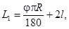
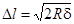
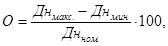
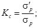
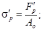
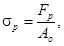
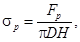
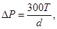
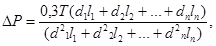

ГОСУДАРСТВЕННЫЙ АГРОПРОМЫШЛЕННЫЙ КОМИТЕТ СССР
ОТДЕЛ ПО КАПИТАЛЬНОМУ СТРОИТЕЛЬСТВУ И РЕКОНСТРУКЦИИ
ЦНИИЭПсельстрой
ИНСТРУКЦИЯ
ПО МОНТАЖУ ПЛАСТМАССОВЫХ
ТРУБОПРОВОДОВ НА ОБЪЕКТАХ
ГОСАГРОПРОМА СССР
ВСН 35-86
МОСКВА - 1987
«Инструкция по монтажу пластмассовых трубопроводов на объектах Госагропрома СССР» предназначена для организаций системы Госагропрома СССР.
Разработана впервые ЦНИИЭПсельстроем, ЭПКТБ «Стройпластик», Институтом электросварки им. Е. О. Патона АН УССР, ВНИИСТом Миннефтегазстроя и ВПТИагростроем.
Инструкцию разработали: канд. техн. наук Г. С. Власов (руководитель темы), инженер К. В. Жулина (ЦНИИЭПсельстрой); инженеры В. И. Степура и Т. В. Онищенко (ЭПКТБ «Стройпластик»); канд. техн. наук Г. Н. Кораб, инженер А. Н. Шестопал (руководитель темы), кандидаты техн. наук Э. А. Минеев, В. П. Тарногродский, канд. физико-математических наук А. А. Адаменко, инженер В. Л. Гохфельд (ИЭС им. Е. О. Патона); кандидаты техн. наук К. И. Зайцев, Б. Ф. Виндт (ВНИИСТ); инженер В. Я. Трунков (ВПТИагрострой).
В разработке Инструкции принимали участие: канд. экономических наук В. С. Ромейко (Госплан СССР), инженер Г. И. Разумова (Госагропром СССР).
|
Госагропром СССР Отдел по капитальному строительству и реконструкции |
Ведомственные строительные нормы |
ВСН 35-86 |
|
Инструкция по монтажу пластмассовых трубопроводов на объектах Госагропрома СССР |
Вводятся впервые |
1.1. Настоящая Инструкция разработана в развитие действующих строительных норм и правил, инструкций и технических условий на производство работ по изготовлению трубных заготовок, монтажу, сдаче и приемке пластмассовых трубопроводов на объектах сельскохозяйственного строительства.
1.2. Требования настоящей Инструкции должны выполняться при производстве и приемке работ по изготовлению трубных заготовок и монтажу трубопроводов диаметром до 400 мм из полиэтиленовых (низкого и высокого давления - ПНД и ПВД, а также из вторичного полиэтилена - ПЭВ), полипропиленовых (ПП) и поливинилхлоридных (ПВД) труб.
Рекомендуемые области применения пластмассовых труб в зависимости от назначения трубопроводов и их диаметры приводятся ниже, а марки материалов перечисленных труб и соединительных деталей даны в приложении (п. 7).
|
Внесены Центральным научно-исследовательским, экспериментальным и проектным институтом по сельскому строительству (ЦНИИЭПсельстроем) |
Утверждены
Отделом по капитальному строительству и реконструкции Госагропрома СССР |
Срок
введения в действие |
|
Область применения |
Рекомендуемые пластмассовые трубы |
Диаметры труб |
|
Внутренние водопроводные сети хозяйственно-питьевого, производственного и технического водоснабжения, за исключением противопожарного |
Трубы напорные из ПЭ по ГОСТ 18599-83 |
Дн = 10...400 мм |
|
Трубы из НПВХ по ТУ 6-19-231-83 |
Дн = 16...315 мм |
|
|
Водоводы и водопроводные сети сельскохозяйственных предприятий, полив |
Трубы напорные из ПЭ по ГОСТ 18599-83 |
Дн = 10...280 мм |
|
Трубы напорные из НПВХ по ТУ 6-19-231-83 |
Дн = 16...315 мм |
|
|
Сети внутренней бытовой и производственной канализации и внутренние водостоки |
Трубы напорные из ПЭ по ГОСТ 18599-83 |
Дн = 160...200 мм |
|
Трубы напорные из НПВХ по ТУ 6-19-231-83 |
Дн = 160...225 мм |
|
|
Трубы канализационные пластмассовые по ГОСТ 22689-77 |
Дн = 32…110 мм |
|
|
Трубы из НПВХ для канализации по ТУ 6-19-051-509-84 и по ТУ 6-19-051-462-83 |
Дн = 50...200 мм |
|
|
Напорные трубопроводы канализации и напорные навозопроводы |
Трубы напорные из ПЭ по ГОСТ 18599-83 |
Дн = 160...315 мм |
|
Трубы напорные из НПВХ по ТУ 6-19-231-83 |
Дн = 160...315 мм |
|
|
Газопроводы межпоселковые, а также на территории поселков и сельских населенных пунктов с малой насыщенностью инженерными коммуникациями при допустимом давлении газа до 0,3 МПа (среднее) |
Трубы из ПНД для газопроводов по ТУ 6-19-051-538-85 |
Дн = 63...225 мм |
|
Газопроводы межпоселковые при допустимом давлении газа от 0,3 до 0,6 МПа (высокое) |
Трубы из ПНД для газопроводов по ТУ 6-19-051-538-85 |
Дн = 63...225 мм |
|
Примечание. Не допускается применять газопроводы из полиэтиленовых труб для строительства в районах с расчетными температурами наиболее холодной пятидневки ниже минус 40 °С, в сильно пучинистых грунтах, просадочных II типа, скальных грунтах, в районах подрабатываемых территорий и в районах с сейсмичностью более 6 баллов. |
||
|
Защита внутренних распределительных и питающих сетей электрооборудования и электроосвещения, сетей КИПиА, абонентских сетей связи и сигнализации, защита кабелей в агрессивном грунте |
Трубы гофрированные из ПЭ по ТУ 6-19-051-518-84 |
Дн = 63, 75, 110 мм |
|
Каналы ПЭ по ТУ 6-05-1515-77 |
Дн = 63, 75, 110 мм |
|
|
Трубы из НПВХ гладкие по ТУ 6-19-215-83 |
Дн = 16…90 мм |
|
|
Трубы из НПВХ гофрированные по ТУ 6-19-051-419-84 |
Дн = 16…50 мм |
|
|
Обсадка скважин при бурении на воду |
Трубы напорные из ПНД по ГОСТ 18599-83 |
Дн = 110…400 мм |
|
Трубы напорные из НПВХ по ТУ 6-19-231-83 |
Дн = 110…315 мм |
|
|
Закрытый горизонтальный дренаж |
Трубы дренажные гофрированные из ПНД по ТУ 6-19-224-83 |
Дн = 50…125 мм |
|
Системы подпочвенного обогрева тепличных комбинатов |
Трубы из ПНД по ГОСТ 18599-83 |
Дн = 20…110 мм |
|
Трубы из ПП по ТУ 38-102-100-76 |
||
|
Трубы из вторичного ПП по ТУ 32-102-83-75 |
||
|
Горячее водоснабжение |
Радиационно-модифицированные трубы из ПНД по ТУ 6-19-051-520-84 |
Дн = 12…20 мм |
|
Технологические трубопроводы |
Трубы напорные из ПЭ по ГОСТ 18599-83 |
Дн = 10…400 мм |
|
Трубы напорные из НПВХ по ТУ 6-19-231-83 |
Дн = 16…315 мм |
|
|
Трубы напорные из ПП по ТУ 38-102-100-76 |
Дн = 12…315 мм |
|
2.1. Нормативные документы на пластмассовые трубы, соединительные детали и вспомогательные материалы приведены в приложении.
2.2. Номенклатура пластмассовых труб и деталей трубопроводов приведена в дополнении (отдельный том) к настоящей Инструкции - «Каталог пластмассовых труб и деталей, а также инструментов и оборудования, рекомендуемых для внедрения в сельском строительстве при монтаже пластмассовых трубопроводов».
2.3. Пластмассовые трубы нормализованы по следующему ряду наружных диаметров (Дн) - 10, 12, 16, 20, 25, 32, 40, 50, 63, 75, 90, 110, 125, 140, 160, 180, 220, 225, 250, 280, 315, 355, 400 мм.
2.4. Вторым основным элементом нормализации пластмассовых труб является тип труб, который устанавливается в зависимости от величины нормального давления (максимального рабочего давления при транспортировании воды с температурой 20 °С) и характеризуется толщиной стенки. Установлены следующие типы напорных труб из термопластов:
|
Величина номинального давления, МПа |
0,1 |
0,2 |
0,4 |
0,6 |
1,0 |
1,6 |
|
Название и обозначение типа труб |
облегченный (О) |
легкий (Л) |
среднелегкий (СЛ) |
средний (С) |
тяжелый (Т) |
особотяжелый (ОТ) |
2.5. Допустимые отклонения на наружный диаметр трубы и толщину стенки приняты только положительными.
2.6. Пластмассовые трубы изготавливают в отрезках различной длины (в зависимости от требований потребителя) или в бухтах (на катушках). В бухтах могут поставляться полиэтиленовые трубы наружным диаметром до 160 мм и трубы из полипропилена - до 40 мм.
2.7. Условные обозначения труб включают в себя наименование изделия, марку материала, наружный диаметр, тип и нормативный документ, по которому труба изготовлена. Пример условного обозначения трубы, изготовленной из полиэтилена низкого давления наружным диаметром 63 мм среднелегкого типа по ГОСТ 18599-83: труба ПНД 63 СЛ ГОСТ 18599-83. Трубы, имеющие разрешение Министерства здравоохранения СССР на их использование для хозяйственно-питьевого водоснабжения при температуре воды до 30 °С, имеют в маркировке обозначение «Питьевая», не имеющие такого разрешения - «Техническая».
2.8. В практике монтажных работ возникают случаи, когда необходимо определить вид полимера, из которого изготовлены трубы (например, при отсутствии маркировки и паспорта). Трубы из поливинилхлорида могут быть естественного цвета (светло-желтого, коричневого) или окрашены, а трубы из полиэтилена и полипропилена выпускаются окрашенными в черный цвет (за счет введения светостабилизатора - газовой канальной сажи). Наиболее доступным средством распознавания материала этих труб является испытание на горение на слабом газовом огне или на пламени горящей спички. При этом наблюдают воспламеняемость, характер горения, горение вне пламени, цвет пламени и запах дыма. Полиолефины быстро загораются, горят вне пламени, цвет его сине-желтый, при горении материал течет (ПВД течет сильнее, чем ПНД и ПП), ощущается запах затухающей свечи. Поливинилхлорид загорается с трудом, вне пламени гаснет, пламя имеет желтовато-зеленый цвет, материал при горении немного течет, ощущается резкий запах хлора или соляной кислоты. Наиболее сложно отличить трубы из ПВД от труб из ПНД. В этом случае следует пользоваться следующими рекомендациями. Трубы из ПНД более твердые, чем трубы из ПВД, поэтому на поверхности трубы из ПНД при проведении по ней ногтем обычно остается малозаметная царапина, тогда как на поверхности трубы из ПВД остается хорошо заметный след. При приложении равных нагрузок трубы из ПНД сплющиваются в меньшей степени, чем трубы из ПВД (при одном значении наружного диаметра и одинаковой толщине стенки). При ударе о твердую поверхность изделия из ПВД издают глухой звук, а изделия из ПНД - звонкий.
2.9. Используемые для строительства трубопроводов соединительные детали, как правило, должны быть изготовлены в заводских условиях методом литья под давлением. Допускается применение соединительных деталей, изготовленных в условиях трубозаготовительных мастерских строительно-монтажных организаций с применением специального оборудования по технологии, приведенной в разделах 5 и 6 настоящей Инструкции. Эти детали должны выдерживать те же испытания, что и соединительные детали, изготовленные в заводских условиях.
2.10. Условное обозначение пластмассовых соединительных деталей идентично условному обозначению труб. Маркировка соединительных деталей соответствует их условному обозначению без указания вида детали и номера стандарта на производство детали. Маркировка наносится на поверхность соединительных деталей нагретым металлическим штампом. В отдельных случаях допускается изготовление соединительных деталей без маркировки.
2.11. При выполнении фланцевых разъемных соединений пластмассовых трубопроводов с использованием формованных (литых) буртовых втулок, привариваемых в стык, или отбортованных концов труб следует применять свободные фланцы по ГОСТ 12820-80, ГОСТ 1272-67 и ГОСТ 12822-80.
2.12. При необходимости внутренний диаметр фланца растачивают до значения, превышающего наружный диаметр трубы (буртовой втулки) на величину 2-4 мм. Пересечение поверхностей фланца и его внутреннего диаметра со стороны буртовой втулки выполняется с закруглением радиусом не менее 4 мм.
2.13. Тип фланцев принимают в зависимости от рабочего давления транспортируемого продукта.
2.14. С целью обеспечения взаимозаменяемости фланцев всех типов их присоединительные размеры (наружный диаметр, диаметр болтовой окружности, число и диаметр болтовых отверстий) стандартизированы ГОСТ 1234-67 и установлены одинаковыми для одних и тех же условных давлений и проходов независимо от конструкции и материала фланца.
2.15. Крепежные детали (болты, гайки, шайбы) предназначены для сборки фланцевых соединений труб, присоединения труб к фланцевой арматуре и металлическим трубам, а также для крепления трубопровода на опорах и опорных конструкциях. Применяют болты нормальной точности с шестигранной головкой по ГОСТ 7798-70* (из марок стали 20 и 25 по ГОСТ 1050-74), шестигранные гайки нормальной точности - по ГОСТ 5915-70* (из марок стали 10 и 20 по ГОСТ 1050-74) и шайбы по ГОСТ 9065-75 (марка стали ВСТ3сп3) или по ГОСТ 11371-78 (из марок стали 10 и 20 по ГОСТ 1050-74).
2.16. Болты для соединений, если нет соответствующих указаний в чертежах, подбирают по диаметру резьбы в зависимости от диаметра болтового отверстия фланца (диаметры болтового отверстия фланца: 12, 14, 18, 23, 27, 30, 33, 40 мм, диаметры резьбы болта: 10, 12, 16, 20, 24, 27, 30, 36 мм) и по длине в зависимости от конструкции и размеров фланцевого соединения. Так, для соединений на отбортовке длина болта l равна, мм:
l = 2 (b + σδ) + S + 0,8м + (2÷3), (1)
где b - толщина фланца; σδ - толщина бурта (или отбортовки); S - толщина прокладки; м - диаметр резьбы болта (0,8 м - высота гайки); 2÷3 (мм) - высота выступающего из гайки конца болта.
Полученное значение длины болта следует привести в полное соответствие с размерами, установленными ГОСТ 7798-70*.
2.17. Для нормальной работы трубопроводов необходимо обеспечить герметичность разъемных соединений, что достигается с помощью прокладок, устанавливаемых между уплотнительными поверхностями. Прокладки должны соответствовать следующим требованиям:
изготавливаться из более мягкого материала, чем уплотняемые поверхности, чтобы при сборке все неровности заполнялись материалом прокладки;
иметь достаточную механическую прочность, противостоящую внутреннему давлению транспортируемой среды и усилиям сжатия соединения при температурных удлинениях трубопровода;
обладать требуемыми термической и химической стойкостью (в зависимости от температуры и агрессивности транспортируемой среды);
сохранять уплотняющую способность после разборки и повторной сборки (или при многократных разъемах) соединений.
2.18. Уплотнение фланцевых соединений производится с помощью плоских прокладок, устанавливаемых между буртовыми втулками или отбортовками концов труб, при этом величина прокладок должна соответствовать размеру уплотняемых поверхностей: наружный диаметр прокладки должен быть равен наружному диаметру отбортовки или бурта (чтобы не мешать свободной установке болтов в отверстия фланцев), а внутренний диаметр должен быть на 2-3 мм больше внутреннего диаметра трубопровода в месте соединения (с тем чтобы деформируясь, прокладка не уменьшала внутреннего диаметра трубопровода). Размеры прокладок следует принимать по ГОСТ 15180-70. Материал прокладок выбирается проектной организацией с учетом химических свойств, давления и температуры транспортируемых веществ.
2.19. Для изготовления плоских прокладок фланцевых соединений применяют резину листовую толщиной 3-4 мм по ГОСТ 7338-77*: тепломорозокислотощелочестойкую ТМКЩ с пределом рабочих температур от минус 60 до плюс 90 °С; повышенно-маслобензостойкую ПМБ и ограниченно-маслобензостойкую ОМБ с пределом рабочих температур от минус 40 до плюс 80 °С. В фланцевых соединениях трубопроводов, транспортирующих пищевые продукты, применяют плоские прокладки из пищевой резины толщиной 3-4 мм по ГОСТ 17133-83 с пределом рабочих температур от минус 30 до плюс 140 °С.
2.20. Для раструбных соединений поливинилхлоридных труб по ТУ 6-19-231-83 применяются уплотнительные кольца сложного профиля, изготавливаемые из резин (на основе синтетического изопренового каучука марки 1365 по ТУ 38-105-895-75) по рецептурам, разрешенным органами Минздрава СССР для использования в системах хозяйственно-питьевого водоснабжения.
2.21. Для раструбных соединений пластмассовых труб и деталей систем внутренней канализации, изготавливаемых по ГОСТ 22689.3-77 - ГОСТ 22689.13-77, применяются специальные резиновые уплотнительные кольца круглого сечения по ГОСТ 22689.19-77, изготавливаемые из мягкой резины по действующим техническим условиям марки 3318 или теплостойкой мягкой резины твердостью по ТИР в пределах 30-45 с коэффициентом старения не менее 0,75. Пример условного обозначения уплотнительного кольца для соединения по типу I (в раструб на уплотнительном кольце) труб и деталей Ду = 100 мм, изготовленных из ПНД: кольцо КУ 100-ПНД-1 ГОСТ 22689.19-77. Пример условного обозначения уплотнительного кольца d = 8 мм для приборного патрубка Ду = 56 мм: кольцо КУ 56´8 ГОСТ 22689.19-77.
2.22. Для соединения пластмассовых канализационных труб Ду = 40 мм с деталями Ду = 50 мм применяются уплотнительные кольца специальной конструкции. Пример условного обозначения такого уплотнительного кольца: кольцо КУП 40´50 ГОСТ 22689.19-77.
2.23. Плоские резиновые уплотнительные прокладки по ГОСТ 22689.20-77 к пластмассовым трубам и деталям для систем внутренней канализации зданий должны изготавливаться из резины по ГОСТ 7338-77* или формовой резины по действующим техническим условиям. Пример условного обозначения уплотнительной прокладки по ГОСТ 22689.20-77 для труб условным проходом Ду = 100 мм: прокладка ПУ-100 ГОСТ 22689.20-77.
2.24. Поверхность уплотнительных прокладок и колец должна быть ровной, гладкой без раковин и заусенцев.
2.25. При монтаже пластмассовых труб систем внутренней канализации зданий применяется прокладочная лента специальной конфигурации, изготавливаемая по ГОСТ 22689.18-77 из полиэтилена низкой плотности по ГОСТ 16337-70. Пример условного обозначения прокладочной ленты: лента Л ГОСТ 22689.18-77.
2.26. Для очистки труб по поверхностям сварки и склеивания, а также присадочных сварочных прутков при сварке нагретым газом от масел, пыли, грязи и других веществ, отрицательно влияющих на качество сварного или клеевого соединения, применяются ацетон по ГОСТ 2768-79, уайт-спирит по ГОСТ 3134-78* или другие материалы (метиленхлорид, спирт и т.д.), обеспечивающие очистку и не влияющие отрицательно на качество сварки или склеивания. Выбор материала для очистки склеиваемых поверхностей должен производиться с учетом состава клеевой композиции (например, при склеивании клеем марки ГИПК-127 нельзя применять уайт-спирит).
2.27. Растворители входят в состав клеевых композиций при склеивании труб из поливинилхлорида.
2.28. В качестве растворителей наиболее широко используется тетрагидрофуран по ТУ 8П-121-68, циклогексанон по ТУ 6-09-30-45-73, метилен хлористый технический по ГОСТ 9968-73* и дихлорэтан технический по ГОСТ 1942-74.
2.29. Присадочные материалы (прутки) применяются при сварке труб нагретым газом.
2.30. Для сварки полиэтиленовых и полипропиленовых труб используют прутки длиной не менее 10 м, изготовленные по ТУ 6-05-1698-74, а для сварки поливинилхлоридных труб - длиной не менее 0,6 м по ТУ 6-05-1160-75; размеры прутков приведены в табл. 2.1.
Поверхность прутков должна быть гладкой, без наплывов и раковин.
Таблица 2.1
|
Материал прутка |
||||
|
ПНД, ПВД, МП |
ПВХ |
|||
|
диаметр одинарного прутка, мм |
ширина двойного прутка, мм |
диаметр одинарного прутка, мм |
ширина двойного прутка, мм |
|
|
Простой (одинарный) |
2 ± 0,25 3 ± 0,3 4 ± 0,4 |
3 ± 0,5 |
||
|
Сложный (двойной) |
2 ± 0,25 3 ± 0,3 |
3,5 ± 0,5 5,5 ± 0,5 |
3 ± 0,5 |
6 ± 1,0 |
2.31. Газы-теплоносители применяются при сварке труб нагретым газом с присадочным материалом.
2.32. В качестве газа-теплоносителя, как правило, применяется воздух, очищенный от влаги и масел и соответствующий классам загрязненности не выше ТУ по ГОСТ 17433-80.
2.33. Чистоту воздуха контролируют с помощью листа фильтровальной бумаги или хлопчатобумажной ткани белого цвета. Наличие на фильтре или ткани темных пятен свидетельствует о загрязнении воздуха.
2.34. Воздух подводится к нагревательному устройству под давлением от заводской магистрали, компрессоров или монтажных вентиляторов, производительность которых определяется числом обслуживаемых ими постов, исходя из того, что на одно нагревательное устройство расходуется 3-4 м3/ч воздуха. При этом может быть использован любой компрессор, обеспечивающий требуемую производительность при давлении сжатого воздуха в линии до 0,2-0,4 МПа. При отсутствии источников энергии для компрессоров или вентиляторов можно применять сжатый воздух, поставляемый в стальных баллонах (под давлением 15 МПа). При часовом расходе одного нагревательного устройства, составляющем в среднем 3 м3/ч, содержимое баллона емкостью 6 м3 расходуется в течение 2 ч. Можно использовать сжатый воздух, полученный накачиванием с помощью ручного или ножного насоса в автомобильную камеру. Для этого камеру снабжают двумя клапанами - для нагнетания воздуха и подачи его к нагревательному устройству.
2.35. В качестве газа-теплоносителя могут применяться также азот по ГОСТ 9293-74* или аргон по ГОСТ 10157-79, использование которых сопряжено со строгим соблюдением правил техники безопасности. Применение этих газов экономически нецелесообразно, так как стоимость одного баллона с газом, включая транспортные расходы, в 50 раз и более выше стоимости сжатого воздуха, а качество сварного соединения при их использовании по сравнению с качеством при использовании сжатого воздуха существенно не улучшается.
2.36. Для склеивания труб из поливинилхлорида применяются клеи, не заполняющие зазоры (при разности диаметров склеиваемых деталей до 0,1 мм) и зазорозаполняющие клеи (разность диаметров склеиваемых деталей может достигать 0,8 мм).
2.37. В качестве клеев, не заполняющих зазоры, применяются в основном составы, представляющие раствор перхлорвиниловой смолы в дихлорэтане и метиленхлориде с соотношением массовых частей компонентов согласно табл. 2.2. Для полного растворения смолы и готовности клея (приготовление клеевой композиции обычно производится строительно-монтажной организацией) смесь необходимо выдерживать 30-40 мин. в герметически закрытой таре.
Таблица 2.2
|
ГОСТ, ТУ |
Массовые части компонентов |
|||
|
Перхлорвиниловая смола |
ГОСТ 10004-72 |
14-16 |
14-16 |
14 |
|
Метилен хлористый технический |
ГОСТ 9968-73 |
86-84 |
76-82 |
- |
|
Дихлорэтан технический |
ГОСТ 1942-74 |
- |
- |
68 |
|
Циклогексанон |
ТУ 6-09-30-45-73 |
- |
10-12 |
- |
2.38. В качестве зазорозаполняющего клея следует применять клей марки ГИПК-127, выпускаемый по ТУ 6-05-251-95-79 (клей на основе поливинилхлоридной смолы, модифицированной фенолформальдегидной и эпоксидной смолами с добавкой стабилизатора и наполнителя в смеси растворителей). Клей маски ГИПК-127 предназначен для соединения поливинилхлоридных труб при строительстве трубопроводов, транспортирующих техническую воду, воздух, а также другие среды, к которым непластифицированный поливинилхлорид химически стоек при температурах до 40 °С. Клей разработан Государственным институтом полимерных клеев и выпускается опытным производством этого института.
2.39. Клей ГИПК-127 обеспечивает соединение труб в раструб при разности диаметров трубы и раструба до 0,8 мм и натяге до 0,2 мм. Прочность соединений при сдвиге при 20 ± 2 °С составляет не менее 5 МПа, и стойкость соединений к внутреннему гидростатическому давлению - не менее 4,2 МПа через 20 суток после склеивания.
2.40. Клей ГИПК-127 разрешен для склеивания поливинилхлоридных труб, используемых в практике хозяйственно-питьевого водоснабжения при условии, если продолжительность высушивания склеенных стыков труб составляет не менее 6 суток и только после десятикратной промывки трубопровода.
2.41. По внешнему виду клей ГИПК-127 представляет однородную жидкость от белого до серого цвета с наличием небольшого количества осадка наполнителя, исчезающего после перемешивания. Содержание сухого остатка в клею находится в пределах 18-28 %, вязкость клея по вискозиметру ВЗ-1 диаметром сопла 5,4 мм при 20 ± 0,5 °С - 150-400 с. Гарантийный срок хранения клея - 9 месяцев со дня изготовления. Клей поставляется в герметической таре емкостью не более 1 л или, по согласованию с потребителем, в более крупной таре. Хранение клея производится в сухих складских крытых помещениях при температуре от 5 до 35 °С, а перевозка клея допускается при температуре от минус 20 до плюс 35 °С.
3.1. Поставляемые на монтаж трубы, арматура и детали трубопроводов должны быть снабжены паспортом (сертификатом) завода-изготовителя и должны соответствовать требованиям нормативной документации на их изготовление, перечень которой приведен в приложении.
3.2. Допускается применение пластмассовых труб и соединительных деталей зарубежного производства (с учетом рекомендаций поставщиков), при этом при подаче по ним воды на хозяйственно-питьевые нужды требуется дополнительное согласование с органами санитарно-эпидемиологической службы.
3.3. Для изготовления деталей, узлов и монтажа трубопроводов допускается использовать трубы, имеющие на поверхности трещины, задиры, надрезы и царапины в осевом направлении глубиной не более 3 % и в кольцевом не более 5 % от толщины стенки трубы, но не превышающих 1 мм в любом направлении (для газопроводов не более 0,5 мм в осевом направлении и 0,7 мм в кольцевом направлении), а также трубы, имеющие торцы с забоинами глубиной не более 2 мм. Овальность сечения труб не должна превышать по разности диаметров 10 %. Трубы, имеющие дефекты, превышающие указанные размеры, подлежат отбраковке. Контроль размеров механических повреждений осуществляется аналогично контролю размеров сварных швов (см. разд. 6). Если у отбракованных труб недопустимые дефекты имеют локальный характер, то после удаления участков с этими дефектами отрезки труб используются для монтажа или изготовления соединительных деталей и узлов.
3.4. При хранении, погрузке, транспортировке и разгрузке пластмассовые трубы, соединительные детали, пластмассовая арматура, сварочные прутки и резиновые уплотнительные кольца должны оберегаться от механических повреждений и деформаций, а также от загрязнений и попадания в них жиров и нефтепродуктов. Особая осторожность необходима в обращении с трубами из поливинилхлорида и полипропилена при отрицательных температурах и температурах, близких к 0 °С. Запрещается производить погрузку, транспортировку и разгрузку труб и соединительных деталей из поливинилхлорида и полипропилена при температурах ниже минус 10 °С, труб из полиэтилена низкого давления - ниже минус 20 °С и из полиэтилена высокого давления - ниже минус 30 °С.
3.5. При транспортировке трубы необходимо укладывать на ровную поверхность транспортных средств (машин, платформ, прицепов, плетевозов к т.д.), предохраняя их от острых углов и ребер металлических предметов. Длина свешивающихся с транспортного средства концов труб не должна превышать 1,5 м, при этом трубы диаметром до Дн = 50 мм должны быть увязаны в пакеты. При погрузке и разгрузке не допускается трубы сбрасывать с транспортных средств, а также перемещать волоком.
3.6. Пластмассовые трубы и соединительные детали следует хранить в помещении, а на период монтажа допускается хранение под навесом или под открытым навесом, но с условием исключения попадания на них солнечных лучей (например, укрывая брезентом). При хранении в закрытом помещении трубы и детали должны располагаться не менее чем на 1 м от нагревательных приборов, при этом температура в помещении не должна превышать 30 °С.
3.7. Пластмассовые трубы следует хранить в горизонтальном положении рассортированными по типоразмерам (с указанием материала) на стеллажах со сплошным и ровным настилом. Допускается хранение в штабелях на спланированной площадке с «постелью» из мягкого грунта (рис. 1). Штабеля с трубами из поливинилхлорида могут укладываться на деревянные брусья с закругленными краями, которые должны иметь ширину не менее 10 см, толщину около 5 см и быть не менее чем на 30 см длиннее (с каждой стороны), чем ширина сложенных труб. Расстояние между брусьями - не более 80 см. Укладка труб на брусьях производится с попеременным изменением положения раструба и гладкого конца трубы с использованием веревки для предотвращения раскатывания труб. Высота штабеля определяется с таким расчетом, чтобы вес труб верхних рядов не вызывал деформацию труб нижних рядов, и не должна превышать: для труб типа «Т» - 2,6 м; типов «С» и «СЛ» - 2,3 м; типа «Л» - 1,7 м при температуре окружающего воздуха до 25 °С.
Рис. 1. Схема укладки раструбных труб из поливинилхлорида в штабель:
1 - труба; 2 - клин; 3 - деревянный брусок
3.8. Пластмассовые трубы, соединительные детали и трубные заготовки, доставляемые на объект в зимнее время, перед их монтажом в зданиях должны быть предварительно выдержаны при положительной температуре не менее 2 ч.
3.9. Несоблюдение правил хранения и транспортировки приводит к ухудшению свойств материала труб и деталей, а также к изменению их геометрических размеров. Гарантийный срок хранения пластмассовых труб - два года со дня изготовления. По истечении указанного срока перед использованием трубы и детали должны быть проверены на соответствие нормативным документам.
3.10. В случае необходимости долговременного хранения резиновых уплотнительных колец они должны храниться в недеформированном состоянии в темных закрытых помещениях, где не работают нагревательные приборы, не должны соприкасаться со смазочными материалами, нефтепродуктами и химикатами, а также должны быть защищены от воздействия газов, оказывающих вредное влияние на резину. Их кратковременное хранение возможно при температуре от минус 10 до плюс 25 °С на расстоянии не менее 1 м от отопительных приборов, упакованными в мягкую тару, ящики или картонные коробки массой брутто не более 50 кг, а также связанными в пачки без упаковки. Конструкция тары и способ укладки в ней колец должны исключать возможность повреждения колец при транспортировке и хранении. В монтажных условиях кольца должны храниться в ящиках или закрытых ларях, защищающих их от солнечных лучей и загрязнений.
4.1. Соединения должны быть надежными в работе, их конструкция должна обеспечивать удобство и быстроту сборки, экономичность, хорошие гидравлические характеристики. К соединениям трубопроводов, транспортирующих воду хозяйственно-питьевого назначения и пищевых продуктов, предъявляется требование гигиеничности.
4.2. Под надежностью соединений понимают равнопрочность труб в эксплуатационных условиях напряжения и герметичность при работе трубопровода под внутренним давлением, а также при наружном избыточном давлении, вызываемом, в частности, грунтовыми водами, образованием в трубопроводе вакуума и т.п. Надежность соединений обеспечивается: правильным выбором их конструкции и способа выполнения; высоким качеством труб, соединительных деталей, клеев, уплотнителей и т.д.; должным техническим уровнем оборудования и приспособлений для сборки; высокой квалификацией монтажников; перенесением подготовки сборных узлов из построечных условий в трубозаготовительные предприятия; контролем качества работ; соблюдением правил эксплуатации трубопроводов.
4.3. В зависимости от функционального назначения соединения пластмассовых труб разделяют на две группы: неразъемные, т.е. такие, разборка которых при эксплуатации не требуется и которые не могут быть разобраны без повреждения элементов конструкции; разъемные, которые можно разобрать в течение всего срока эксплуатации.
4.4. Вид и конструкция соединения, выбранные с учетом условий монтажа и эксплуатации трубопровода, материала труб, конструкции соединительных деталей и других факторов, как правило, должны быть указаны в проекте.
4.5. По технологии выполнения неразъемные соединения разделяют на сварные и клеевые, а по конструкции шва - на раструбные и стыковые. Стыковые соединения обеспечивают более благоприятное распределение напряжений, однако площадь шва при этом определяется толщиной стенки трубы. В раструбных соединениях площадь сварки или склейки может многократно превышать площадь поперечного сечения конструкции.
4.6. Для труб из полиолефинов неразъемные соединения получают сваркой. Склеивание полиолефинов не находит практического применения, так как для обеспечения прочности склеивания этих материалов необходима специальная активационная обработка соединяемых поверхностей в окислительных средах или другими методами, что резко увеличивает общую трудоемкость и стоимость работ по выполнению соединений.
4.7. Сварка пластмассовых труб между собой и соединительными деталями осуществляется нагретым инструментом или нагретым газом с применением присадочного материала по схемам, представленным в разд. 6. В зависимости от схемы сварки и конструкции соединения различают стыковую и раструбную сварку. Основные типы и конструктивные элементы сварных швов пластмассовых труб при стыковой и раструбной сварке нагретым инструментам регламентированы ОСТ 102-63-81.
4.8. Сварка нагретым инструментом (стыковая) рекомендуется для труб из ПНД, ПВД, ПП и ПВХ наружным диаметром более 50 мм и толщиной стенки более 4 мм и выполняется согласно указаниям разд. 6.
4.9. Стыковая сварка нагретым инструментом характеризуется следующими показателями:
качественные сварные швы труб из полиэтилена и полипропилена в условиях эксплуатации равнопрочны трубам;
при стыковой сварке в отличие от раструбной, соединение труб между собой не требует дополнительных деталей - муфт - и выполняется одним швом;
стыковая сварка ведется при меньших температурах нагревательного инструмента, чем раструбная, поэтому выделение вредных газообразных продуктов разложения полимерного материала при стыковой сварке весьма незначительно.
Наряду с отмеченными преимуществами стыковая сварка характеризуется следующими недостатками: для труб малых диаметров валик шва существенно влияет на площадь проходного сечения; для тонкостенных труб, с учетом допусков на наружные диаметры и толщины стенок, смещение кромок может быть сравнимым с толщиной стенки; возможные технологические дефекты, которые создают местные перенапряжения и уменьшают площадь поперечного сечения, особенно опасны в швах тонкостенных труб.
4.10. Сварка нагретым инструментом (раструбная) применяется при наличии раструбных соединительных деталей или формованных раструбов для труб из ПНД, ПВД и ПП наружным диаметром до 160 мм и со стенками любой толщины. При раструбной сварке увеличивается площадь сварного шва, а также обеспечивается определенная самоцентровка трубы в раструбе, что позволяет осуществлять сварку вручную. Раструбная сварка выполняется согласно указаниям разд. 6.
4.11. Сварка нагретым газом с применением присадочного материала применяется для безнапорных трубопроводов из ПНД, ПВД, ПП, ПВХ и выполняется согласно указаниям разд. 6. Допускается применение сварки также для трубопроводов, работающих при невысоких рабочих давлениях (до 0,3 МПа).
4.12. Для труб из ПВХ наиболее эффективным способом выполнения неразъемных соединений является склеивание (сварные соединения ПВХ труб значительно уступают клеевым по прочности и надежности). Склеивание враструб применяется для труб из ПВХ с любыми значениями диаметров и толщин стенок согласно указаниям разд. 7. Достоинством раструбных соединений по сравнению со стыковыми является помимо увеличения площади склеивания повышенная стойкость к изгибающим усилиям, которые возникают в процессе монтажа и эксплуатации.
4.13. Не допускается изготовление неразъемных соединений труб из разнотипных материалов и применение для соединения труб пластмассовых соединительных деталей из материалов, не соответствующих материалам труб или на тип ниже, чем соединяемые трубы.
4.14. К разъемным относятся фланцевые соединения, соединения с накидными гайками и раструбные соединения с резиновым уплотнительным кольцом. Разъемные соединения применяются в основном в местах установки трубопроводной арматуры, различного оборудования и приборов, для выполнения соединения пластмассовых труб с металлическими, при необходимости частой разборки трубопровода в процессе эксплуатации, а также в случае возможности осевых перемещений труб при температурных изменениях длины трубопровода.
4.15. Наиболее распространенный вид разъемных соединений - фланцевые. Фланцевые соединения выполняются на металлических или пластмассовых фланцах для труб:
из ПНД, ПВД и ПП - с применением литых втулок под фланец привариваемых к трубе стыковой или раструбной сваркой нагретым инструментом, а также с применением отбортовок, формуемых на концах труб;
из ПВХ - с применением приклеиваемых к трубе литых втулок под фланец или отбортовок, формуемых на концах труб.
4.16. Фланцевые соединения на отбортовке обладают малой длительной прочностью ввиду концентрации напряжений в зоне перегиба и опасности разрушения в этой зоне.
4.17. Схемы фланцевых соединений пластмассовых труб на прямых буртовых втулках показаны на рис. 2, а, б. При отсутствии втулок под фланцы допускается формование конусов на концах труб и выполнение соединений по схемам, представленным на рис. 2, в, г. Для сборки таких соединений должны применяться специальные накидные фланцы сравнительно сложной формы с конической внутренней поверхностью. Простая форма фланца используется при отбортовке концов труб (рис. 2, д).
4.18. Для фланцевых соединений, представленных на рис. 2, а, б, подбор фланцев и уплотнительных прокладок производится по указаниям разд. 2.
Рис. 2. Фланцевые соединения, выполненные с помощью втулок под фланцы (а, б), конусных раструбов (в, г) и плоской отбортовки (д)
4.19. К соединениям с помощью накидной гайки относятся разнообразные конструкции, выполняемые с помощью пластмассовых и металлических деталей. Для труб наружным диаметром до 63 мм эти соединения более компактны, а в ряде случаев и экономичнее, чем фланцевые соединения.
4.20. На рис. 3 показаны соединения, применяемые для труб из ПВХ. При сборке ПВХ труб между собой переходные втулки, полученные из ПВХ композиций методом литья под давлением, приклеиваются к концам труб. Для соединения ПВХ трубы с металлической трубой и арматурой используют металлическую втулку с резьбовым хвостовиком, накидную гайку также изготавливают из металла. Соединения особенно рациональны в случаях большого числа циклов «сборка-разборка» при эксплуатации.
4.21. На рис. 4 представлены конструкции соединений труб из полиолефинов, выполненные с помощью металлических соединительных деталей. Соединения с конической развальцовкой пластмассовой трубы по сравнению с соединением без такой развальцовки предъявляют пониженные требования к размерной точности труб, не снижают проходного сечения трубопровода, позволяют легко осуществлять многократную сборку-разборку, но более трудоемки при монтаже ввиду необходимости формования концов труб. В целом использование металла дает возможность создать высокие контактные давления в зонах уплотнения и обеспечить малые габариты сборных узлов. Соединения характеризуются повышенной надежностью, но одновременно и большой стоимостью из-за затрат на механическую обработку деталей и необходимости использовать латунь или другие коррозионно-стойкие металлы.
Рис. 3. Соединения с помощью накидной гайки труб из ПВХ между собой (а) и с металлической трубой (б):
1 - труба из ПВХ; 2 - втулка буртовая; 3 - накидная гайка; 4 - уплотнительная прокладка; 5 - втулка резьбовая; 6 - металлическая труба
Рис. 4. Муфтовые (а) и переходные (б, в) соединения полиэтиленовых труб с помощью металлических деталей:
1 - труба; 2 - ниппель простой; 3 - гайка накидная; 4 - вставка коническая; 5 - ниппель резьбовой; 6 - переходник; 7 - кольцо разрезное цанговое
4.22. Важную группу разъемных соединений составляют соединения компенсационного типа, выполняемые с помощью резиновых уплотнительных колец. Разборка этих соединений при эксплуатации трубопроводов функционально не требуется, но они допускают осевое и (или) угловое перемещение элементов трубопровода относительно друг друга. Компенсационные соединения в отличие от неразъемных и других типов разъемных соединений не передают осевую нагрузку.
4.23. Герметичность и надежность уплотнения в компенсационных соединениях обеспечивается: деформацией резинового кольца, его радиальным сжатием между раструбом и трубой; минимальной склонностью резины, применяемой для изготовления кольца, к необратимой деформации под действием сжимающей нагрузки и температуры эксплуатации, а также рядом конструктивных факторов (формой сечения кольца, формой канавки под кольцо).
4.24. Раструбные соединения с резиновым уплотнительным кольцом выполняются для труб, имеющих на одном конце раструб заводского изготовления с канавкой под резиновое уплотнительное кольцо.
4.25. Достоинствами компенсационных соединений являются: разгрузка трубопровода от осевых температурных напряжений: высокая производительность сборки, возможность вести ее при низких температурах окружающего воздуха и в сырую погоду, что неприемлемо для склейки; возможность выполнения сборочных работ персоналом, не имеющим высокой квалификации. В то же время в связи со спецификой компенсационных соединений их использование требует повышенных затрат на установку опор, воспринимающих осевые усилия в трубопроводе.
4.26. Выполнение разъемных соединений производится в соответствии с указаниями разд. 8.
5.1. В процессе изготовления соединительных деталей и узлов трубопроводов выполняются следующие виды трубозаготовительных работ - разметка, механическая обработка, формование и гибка труб.
5.2. Разметка производится для нанесения на трубу линий, указывающих место реза трубы, вырезки или сверления отверстий и т.д. Перед разметкой трубы должны быть тщательно очищены от различных загрязнений (пыли, масла и др.).
5.3. Разметка должна производиться в соответствии с указанными в чертежах размерами с учетом припусков на последующую обработку при максимальном использовании материала труб и сокращении отходов.
5.4. Трубы следует размещать на специальных столах и других устройствах, при необходимости закрепляя трубу в тисках или зажимных приспособлениях с мягкими прокладками. Разметочные линии наносят мелом или цветным карандашом. Линии реза могут наноситься металлической чертилкой (ГОСТ 24473-80 Е). При ручной резке труб необходимо увеличить припуск для ее последующей механической обработки.
5.5. Для разметки рекомендуется применять стандартные мерительные инструменты: измерительные линейки П53, Т25 (ГОСТ 427-75), рулетки Л4.2 (ГОСТ 7502-80, ГОСТ 11900-66), угольники поверочные Т88 90° (ГОСТ 3749-77, штангенциркули ШЦ-1 и ШЦ-II (ГОСТ 166-80), угломеры (ГОСТ 5378-66), циркули (ГОСТ 24472-80) с мелом, а также специально изготовленные шаблоны и разметочные приспособления.
5.6. При разметке необходимо следить за тем, чтобы не нанести инструментом царапин на поверхность трубы за пределами реза.
5.7. При централизованном изготовлении деталей и узлов трубопроводов рекомендуется применять оборудование, позволяющее работать без разметки, например с помощью поворотного устройства с проградуированной шкалой и др. производится отрезка патрубка по упору, резка труб под заданным углом.
5.8. Механическую обработку пластмассовых труб производят при температуре воздуха не выше 35 °С.
5.9. При механической обработке труб из поливинилхлорида необходимо учитывать их способность при нагреве выделять хлористый водород, который, смешиваясь с охлаждающей жидкостью, образует слабый раствор кислоты, вызывающий коррозию режущего инструмента и самого станка. Поэтому место реза охлаждают сжатым воздухом.
5.10. Для получения качественных торцов резку производят плавно, без рывков. Скорость резания выбирают с таким расчетом, чтобы труба не размягчалась от нагревания и материал трубы не налипал на режущий инструмент.
5.11. Для получения чистой поверхности реза необходимо применять дисковые пилы без развода зубьев с равномерно уменьшающейся к центру диска толщиной, а абразивные армированные круги - с шероховатыми боковыми поверхностями. Частота вращения дисковой пилы при резке полиэтиленовых и полипропиленовых труб 33-41 с-1 при резке труб из поливинилхлорида 10-13 с-1. При механической обработке труб на токарных станках частота вращения шпинделя должна быть не более 16-33 с-1, резку производят отрезным резцом из быстрорежущей стали марок Р9 и Р18 (ГОСТ 10047-62, ГОСТ 18869-73, ГОСТ 18874-73).
5.12. Торец трубы после резки должен быть чистым, без внешних и внутренних заусенцев, при этом частота поверхности торца должна быть не ниже 5-го класса. Отклонение от заданного угла реза не должно превышать 0,5 мм для пластмассовых труб с наружным диаметром 50 мм; 1,0 мм - для труб с наружным диаметром 50-160 мм и 2,0 мм - для труб с наружным диаметром более 160 мм. Размер отклонений торца от перпендикулярности после резки проверяют с помощью металлического угольника.
5.13. Пластмассовые трубы рекомендуется резать на трубоотрезных станках дисковыми пилами толщиной 1,5-2 мм по ГОСТ 980-80 (тип А, профиль I), маятниковыми пилами с помощью абразивных армированных кругов толщиной 3 мм по ТУ 2-036-761-78, на станках гильотинного типа для тонкостенных труб, электроножовками и пневмоножовками с помощью ножовочных полотен по ГОСТ 6645-68, а при небольших объемах в условиях монтажной площадки - ручными ножовками, применяемыми для резки металлических труб или мелкозубными столярными пилами (ГОСТ 979-70).
5.14. При отсутствии специального оборудования в стационарных условиях для резки пластмассовых труб могут применяться токарные и фрезерные станки, распиловочные станки по дереву типа ЦИЭ, ЦБ (ГОСТ 18479-73), пилы ручные электрические дисковые (ГОСТ 11094-80) и др.
5.15. Сверление отверстий в пластмассовых трубах производится на сверлильных станках или ручным электроинструментом с помощью перовых и спиральных сверл по ГОСТ 886-77*, ГОСТ 2092-77, ГОСТ 4010-77, ГОСТ 10902-77, ГОСТ 10903-77, ГОСТ 22057-76, а также специальных нестандартных циркульных резцов и трубных сверл, изготовленных для этих целей.
5.16. Для отверстий диаметром до 15 мм применяют перовые сверла с углом заточки 60-70°, подача при сверлении 0,1-0,3 мм на один оборот. Для получения отверстий диаметром от 15 до 50 мм используют стандартные спиральные сверла с углом заточки 100-130°. Для обеспечения отвода стружки на сверлах рекомендуется выполнять двойную заточку, а винтовые канавки полировать. Диаметр сверла должен быть на 0,05-0,15 мм больше диаметра отверстия, так как оно после сверления уменьшается.
5.17. При сверлении труб из ПВХ электроприводными устройствами не рекомендуется применять острозаточенный режущий инструмент; нужно глубоко кернить центр отверстия. Для отверстий диаметром свыше 15 мм рекомендуется просверлить сначала отверстие сверлом меньшего диаметра.
5.18. Отверстия диаметром свыше 50 мм вырезают циркульными резцами с передним углом заточки 50° или специальными трубными сверлами, представляющими собой цилиндрическую фрезу. Трубное сверло - это полый цилиндр с зубьями и хвостовиком для закрепления в патроне станка. Высота и шаг зубьев 5-7 мм, угол заострения зубьев 80-90°, частота вращения 3 с-1. За один оборот фреза режет стенку трубы на глубину 2-6 мм.
5.19. Во избежание трещин и сколов перед вырезкой отверстий пластмассовую трубу необходимо закрепить в зажиме. В процессе сверления труб сверло необходимо периодически выводить из отверстия для охлаждения и удаления стружки. Охлаждать инструмент и места сверления рекомендуется сжатым воздухом.
5.20. Для снятия окисленного слоя и получения ровной поверхности перед стыковой сваркой нагретым инструментом необходимо обрабатывать торцы труб, которые после обработки должны быть строго перпендикулярны оси трубы. При подготовке труб к сварке нагретым газом с применением присадочного материала на торцах труб снимают фаску. Торцовку и скос кромок следует производить непосредственно перед выполнением сварочных работ, при этом торцовку рекомендуется производить после установки труб в зажимы сварочных установок (с этой целью сварочные установки должны быть укомплектованы специальными торцевателями).
5.21. Перпендикулярность торцов труб и угол разделки кромок после механической обработки проверяют угломером (ГОСТ 5378-66). Допускается перпендикулярность торцов проверять угольником (ГОСТ 3749-77*), а угол разделки кромок - специальными шаблонами, предназначенными для этих целей.
5.22. В монтажных условиях при отсутствии средств для механической обработки торцов труб допускается обрабатывать торцы и снимать фаски на трубах с помощью драчевых плоских напильников по ГОСТ 1465-80.
5.23. С помощью формования концов пластмассовых труб изготавливают втулки с отбортовками и утолщенными буртами под стальные свободные фланцы, раструбы, переходы и осуществляют калибрование концов труб. Формованием также получают горловины неравнопроходных тройников.
5.24. Конструктивные размеры формуемых деталей должны соответствовать требованиям, утвержденным отраслевыми и межотраслевыми нормативными документами (см. приложение).
5.25. Технологический процесс изготовления соединительных деталей методом теплового формования состоит из следующих операций:
разогрев конца трубы заготовки: длина нагреваемого участка трубы должна быть больше длины формуемого участка в 1,5 раза для цилиндрического раструба; в 1,2 раза - для отбортовки;
установка и закрепление трубы в формующем устройстве;
формование разогретого конца трубы;
охлаждение готового изделия;
извлечение готового изделия из формующего устройства.
5.26. Вытяжку горловин (рис. 5) для изготовления переходных ответвлений в трубопроводах из ПНД и ПВД допускается производить из труб при соотношении наружных диаметров горловины и трубы не более 0,7.
5.27. Нагрев труб (заготовок) под формование необходимо производить в термошкафах и кольцевых печах, в которых в качестве теплоносителя используется воздух, а также в нагревательных устройствах с инфракрасными излучателями.
При изготовлении отбортовок, раструбов, калибровке и гибке труб допускается нагрев в жидком теплоносителе (глицерине, гликоле и др.). В условиях строительной площадки рекомендуется применять нагрев воздухом. Режимы нагрева трубных заготовок при формовании приведены в табл. 5.1.
Таблица 5.1
|
Температура теплоносителя при отбортовке, формовании раструбов, калибровке, гибке труб, вытяжке горловин без формирования стенки трубы, °С |
Температура теплоносителя (воздуха) при изготовлении утолщенных буртов, переходов; вытяжке горловин с формованием стенки трубы, °С |
||
|
Глицерин (ГОСТ 6259-71) |
Воздух |
||
|
ПНД |
135 ± 5 |
150 ± 10 |
220 ± 10 |
|
ПВД |
105 ± 5 |
135 ± 10 |
200 ± 10 |
|
ПП |
165 ± 5 |
185 ± 10 |
260 ± 10 |
|
ПВХ |
130 ± 5 |
160 ± 10 |
- |
5.28. Нагрев труб (заготовок) следует производить одновременно с внутренней и наружной стороны. Односторонний нагрев допускается при изготовлении раструбов, калибровке и гибке труб с толщиной стенки до 3,5 мм.
Рис. 5. Схема процесса вытяжки горловин в трубах:
А - с формованием стенки трубы; Б - без формования стенки трубы; 1 - отрезок трубы; 2 - сверло; 3 - матрица; 4 - пуансон; а - вырезка отверстия в трубе в месте вытяжки горловины; б - нагрев участка трубы вокруг отверстия, ввод пуансона внутрь трубы и центровка его с отверстием; в - вытяжка и охлаждение горловины; г - извлечение пуансона из горловины
5.29. Время нагрева труб определяется из расчета 1-1,5 мин, на 1 мм толщины стенки трубы, при этом участок трубы, нагретый до вязкотекучего состояния материала, при формовании утолщенного бурта, изготовлении перехода и вытяжке горловины с формованием стенки трубы не должен терять формоустойчивости и легко деформироваться, а при отбортовке, изготовлении раструбов, гибке, калибровке и вытяжке горловины без формования стенки труб нагрев должен проводиться до эластичного состояния материала.
5.30. При вытяжке горловины стенка трубы вокруг отверстия должна нагреваться одновременно с внутренней и наружной стороны. Диаметр нагреваемого участка должен быть больше наружного диаметра горловины на 30 ± 10 мм. Допускается нагрев всей заготовки в жидкостных ваннах.
5.31. Цилиндрический раструб должен формоваться пуансоном, двигаемым в нагретую трубу, а калибровка осуществляться гильзой, надвигаемой на ее конец. Отбортовку на концах труб (заготовок) следует выполнять пуансоном и прижимным фланцем, оформляющим наружную поверхность отбортовки.
5.32. Скорость движения пуансона при вытяжке горловины должна составлять 0,8-1,0 м/мин. Движение пуансона в отверстии осуществляется до выхода его цилиндрической части из образовавшейся горловины, и в таком положении пуансон фиксируется.
5.33. Отформованная деталь должна находиться в формовочном устройстве в зафиксированном состоянии до тех пор, пока она не охладится до температуры 35 °С и ниже. Допускается производить принудительное охлаждение отформованных деталей водой или сжатым воздухом.
5.34. Поверхность отформованных деталей должна быть ровной и гладкой. Допускаются незначительные следы от формующего и калибрующего инструмента. Не допускается наличие трещин, газовых пор и следов холодных спаев на отформованной поверхности детали. Разнотолщинность цилиндрических участков отформованных деталей должна быть в пределах допусков на толщину стенки трубы.
5.35. Гибку пластмассовых труб применяют для изготовления отводов, уток, компенсаторов и др.
5.36. В трубах перед гибкой следует измерить толщину стенки. На утолщенной стенке делается пометка, а при гибке трубу устанавливают так, чтобы утолщенная стенка располагалась с наружной стороны гиба.
5.37. Гибку труб следует производить после их нагрева в жидкостных (глицериновых, гликолевых) ваннах, электропечах, в газовых или паровых камерах до пластичного состояния. При гибке отводов и концевых участков труб нагрев следует производить в вертикальных жидкостных ваннах; при выполнении местных гибов на длинных трубах нагрев изгибаемого участка производится в воздушной тоннельной электропечи, при этом в местах прохода через торцевые крышки печи труба должна быть уплотнена по наружному диаметру, а ее концы заглушены пробками. При нагреве в вертикальных жидкостных ваннах заготовка должна быть погружена в ванну так, чтобы ее конец длиной не менее 2 Дн выступал над уровнем жидкости и оставался холодным. Для предотвращения чрезмерного охлаждения нагретой заготовки время между окончанием нагрева и началом гибки не должно превышать 40-60 с.
5.38. Рекомендуемые размеры гнутых отводов из пластмассовых труб по ОСТ 36-55-81 приведены в табл. 5.2.
5.39. Длину заготовки трубы L1 (см. рис. 6) определяют по формуле (2) и таблице 5.2:

где φ - угол изгиба трубы в градусах;
R - радиус гиба по оси трубы, мм;
l - прямой участок, необходимый для зажима трубы при гибке и последующей сварке, мм.
5.40. Трубы из полиэтилена, полипропилена и поливинилхлорида следует гнуть с применением специального оборудования или оснастки одним из следующих способов:
а) обкаткой трубы роликов вокруг гибочного шаблона без применения наполнителя (рис. 7, а). Применяется для пластмассовых труб с отношением толщины стенки к наружному диаметру трубы, равному или большему 0,065;
б) наматыванием на гибочный шаблон трубы с внутренней оправкой - дорном (рис. 7, б). Применяется при отношении толщины стенки трубы к наружному диаметру, меньшему 0,065;
Рис. 6. Гнутые отводы из пластмассовых труб
Рис. 7. Схема гибки труб:
а - обкаткой труб роликом вокруг гибочного шаблона; б - наматыванием на гибочный шаблон трубы с внутренней оправкой; 1 - гибочный шаблон; 2 - зажим; 3 - дорн; 4 - труба; 5 - ролик; 6 - рычаг; 7 - прижимная планка
Таблица 5.2
Размеры, мм
|
R |
l |
L при угле изгиба трубы φ |
||||
|
30° |
45° |
60° |
90° |
|||
|
25 |
100 |
100 |
127 |
141 |
158 |
200 |
|
32 |
130 |
100 |
135 |
154 |
175 |
230 |
|
40 |
160 |
100 |
143 |
166 |
192 |
260 |
|
50 |
200 |
100 |
154 |
183 |
215 |
300 |
|
63 |
250 |
125 |
192 |
229 |
269 |
375 |
|
75 |
300 |
150 |
230 |
274 |
323 |
450 |
|
90 |
360 |
180 |
276 |
329 |
388 |
540 |
|
110 |
440 |
220 |
338 |
402 |
474 |
660 |
|
125 |
500 |
250 |
384 |
475 |
530 |
750 |
|
140 |
560 |
280 |
430 |
512 |
603 |
840 |
|
160 |
640 |
320 |
491 |
585 |
640 |
960 |
Вычисленные значения длин заготовок для гибки труб при фиксированных углах гиба даны в табл. 5.3.
Таблица 5.3
Размеры, мм
|
L1 при угле изгиба трубы φ |
||||
|
30° |
45° |
60° |
90° |
|
|
25 |
252 |
278 |
305 |
357 |
|
32 |
268 |
302 |
336 |
404 |
|
40 |
284 |
326 |
367 |
451 |
|
50 |
305 |
357 |
409 |
514 |
|
63 |
381 |
446 |
512 |
642 |
|
75 |
457 |
535 |
614 |
771 |
|
90 |
548 |
643 |
737 |
925 |
|
110 |
670 |
785 |
900 |
1131 |
|
125 |
761 |
892 |
1023 |
1285 |
|
140 |
853 |
1000 |
1146 |
1439 |
|
160 |
975 |
1142 |
1310 |
1645 |
в) по шаблонам с применением жгута, шланга или наполнителей, что необходимо для исключения смятия стенки трубы.
5.41. При гибке обкаткой роликом диаметр ручьев гибочного шаблона и обкатывающего ролика должен быть равен номинальному диаметру изгибаемой трубы. Обкатывающий ролик должен свободно вращаться вокруг своей оси, а зазор n (см. рис. 7, а) - между гибочным шаблоном и обкатывающим роликом не должен превышать 10 % наружного диаметра изгибаемой трубы.
5.42. При гибке наматыванием на гибочный шаблон, помещаемый внутри трубы, дорн должен иметь наружный диаметр, на 3 % меньший внутреннего диаметра изгибаемой трубы. Опережение дорна Δl относительно оси гибочного шаблона (см. рис. 7, б) принимается по формуле

где R - радиус гиба, мм;
δ - зазор между дерном и трубой, мм.
5.43. При гибке по шаблону внутрь трубы следует помещать резиновый жгут, гибкий металлический шланг из термостойкой резины, набитый песком или раздуваемый сжатым воздухом. Наружный диаметр жгута или шланга должен быть на 1÷2 мм меньше внутреннего диаметра изгибаемой трубы. В качестве наполнителя допускается применять чистый сухой песок, предварительно нагретый до температуры 100 °С. При этом горячим песком заполняют только ту часть трубы, которая подвергается нагреву для гибки. Концы труб после заполнения песком следует заглушать пробками. Заполнение труб песком применяется лишь при невозможности применения жгута или шланга.
5.44. Соприкасающиеся с изгибаемой трубой поверхности гибочного шаблона обкатывающего ролика, дорна или наполнителя не должны иметь заусенцев, острых кромок и других дефектов, способных повредить поверхность трубы при гибке.
5.45. Радиус изгиба по оси трубы должен быть равным или большим 3,5 Дн.
5.46. Скорость гибки должна составлять 2-4 оборота в минуту. Гибку нужно выполнять плавно, без рывков и резких движений.
5.47. После гибки отклонение угла изгиба от заданного не должно превышать +3°. Величину угла изгиба следует принимать большей от заданной в связи с тем, что за счет упругих деформаций труба после гибки частично распрямляется. Поэтому при угле изгиба 90° трубы следует перегибать на величину пружинения, равную 6° для труб из ПВД и 10° для труб из ПНД и ПП. При других углах изгиба нужно рассчитывать величину перегиба, исходя из указанных значений. Перегибать трубы из ПВХ не следует, так как у этих труб пружинение отсутствует.
5.48. Поверхность изогнутых труб должна быть ровной и гладкой. Допускаются незначительные следы от гибочного инструмента, не выводящие толщину стенки за пределы отклонений (после гибки толщина стенки трубы не должна быть менее 95 % номинальной толщины стенки трубы до гнутья). Трещины и вмятины не допускаются. Овальность сечения в месте гиба «О» не должна превышать 8 % и определяется по формуле

где Днмакс., Днмин., Днном. - соответственно максимальный, минимальный и номинальный наружные диаметры трубы после гибки.
6.1. По виду источника энергии, непосредственно используемого для образования сварного соединения, различают следующие нашедшие практическое применение виды сварки пластмассовых труб: сварка нагретым инструментом стыковая, сварка нагретым инструментом раструбная и сварка нагретым газом с применением присадочного материала.
6.2. Сварку труб допускается производить при температуре воздуха не ниже: для ПНД и ПВД - минус 5 °С; для ПВХ - +5 °С; для ПП - 0 °С. Сварку при температуре воздуха ниже указанных предельных значений производят в утепленных укрытиях.
6.3. Применяемые виды сварки различаются по технологическим признакам и сварочному оборудованию, но во всех случаях качество сварных соединений в значительной степени зависит от тщательности подготовки труб, деталей и присадочных материалов к сварке.
6.4. Первой и обязательной операцией при подготовке труб и деталей к сварке является их проверка по сертификатным данным на соответствие техническим требованиям, оговоренным в проекте. Затем производится селекция труб - их осмотр и подбор по материалу, диаметрам, толщинам стенок, партии поставки. При этом согласно требованиям п. 3.3 настоящей Инструкции отсортировываются путем визуального осмотра трубы с дефектами: повышенной овальностью, трещинами, надрезами, задирами и царапинами. Следует учесть, что особенно чувствительны к царапинам трубы из поливинилхлорида, а комплектация труб по партиям поставки позволяет уменьшить влияние колебания свойств материала на качество сварных соединений и подобрать трубы со стабильными геометрическими размерами, что особенно важно при стыковой сварке. Недопустимо смешивать трубы, например, из полиэтилена высокого и низкого давления, полиэтилена и полипропилена, так как при их последующей сварке не обеспечивается надежность сварного соединения. В случае, если овальность труб приводит к смещению кромок при сварке на величину более 10 % от толщины стенки, концы труб должны быть откалиброваны (см. разд. 5). Участки труб, расположенные на концах и имеющие повреждения (забоины и трещины), могут быть обрезаны. При этом рез должен располагаться на расстоянии от конца трещины не менее 50 мм.
6.5. Следующим этапом подготовки труб к сварке является очистка (при необходимости) концов труб от грязи и других веществ (масла, нефти, краски и пр.). Они должны быть очищены и обезжирены изнутри и снаружи на расстояние от торца не менее чем на 30 мм при стыковой сварке или на расстояние (в зоне соединения), превышающее на 30 мм длину раструба при раструбной сварке. Удаление грязи производится водой с применением волосяных щеток с протиркой до сухого состояния ветошью. Применение металлических щеток, соскабливание грязи металлическим инструментом не допускаются. Для обезжиривания концов труб следует применять только предназначенные для этих целей растворители (см. разд. 2).
6.6. Для выравнивания и снятия поверхностного слоя (поврежденного и подвергавшегося воздействию солнечной радиации) свариваемые торцы труб при стыковой сварке нагретым инструментом следует подвергать механической обработке (торцовке) путем обрезки, фрезерования и т.д. При этом в зависимости от длительности и условий хранения труб толщина удаляемого слоя должна быть не менее 1-3 мм. Торцовку наиболее целесообразно производить в сварочной установке непосредственно в процессе центровки при сварке (но не ранее чем за 6-8 ч до сварки) во избежание окисления и повторного загрязнения поверхностей, подлежащих сварке.
6.7. При подготовке труб под стыковую сварку нагретым газом с присадочным прутком на торцах труб производится V-образная разделка кромок с углом скоса кромки 30 ± 5° при толщине стенки труб до 6 мм и 40 ± 5° при большей толщине. Во избежание непровара скос кромок делается без притупления.
6.8. Под раструбную сварку нагретым инструментом с наружной поверхности на торце трубы и с внутренней поверхности на торце раструба снимается фаска под углом 45 ± 5° что облегчает вдвигание конца гладкой трубы в раструб после их нагрева при сварке.
6.9. Используемые при сварке присадочные прутки должны подвергаться внешнему осмотру с последующим удалением дефектных прутков (имеющих продольные трещины, сколы, поры) и рассортировке по однотипности (материалу и геометрическим размерам). Загрязненные присадочные материалы должны быть очищены водой, а при наличии жировых включений - растворителями, применяемыми для обезжиривания труб. После промывки прутков они должны быть просушены при температуре не ниже 20 °С в течение не менее 24 ч. Непосредственно перед сваркой прутки труб из ПВХ рекомендуется зачистить наждачной шкуркой.
6.10. Сварка нагретым инструментом основана на оплавлении свариваемых поверхностей путем их прямого соприкосновения с инструментом, нагреваемым с помощью электронагревательных элементов открытым пламенем и т.д.
6.11. При стыковой сварке (рис. 8) соединение осуществляется по торцам труб, а в качестве нагревательного инструмента применяется плоский диск (кольцо) с антиадгезионным покрытием на основе фторопласта, что исключает прилипание оплавленного материала к нагревателю.
Рис. 8. Последовательность процесса стыковой сварки труб нагретым инструментом:
а - центровка, закрепление труб в зажимах сварочного устройства, ввод нагревательного инструмента в зону сварки; б - оплавление торцов труб; в - одновременный отвод труб от нагревательного инструмента; г - вывод нагревательного инструмента из зоны сварки, соединение концов труб и охлаждение сварного соединения
6.12. Стыковую сварку рекомендуется производить нагретым инструментом для соединения труб с толщиной стенки более 4 мм.
Таблица 6.1
|
Материал деталей |
||||
|
ПВД |
ПНД |
ПП |
ПВХ |
|
|
Температура инструмента, °С |
220±10 |
240±10 |
240±10 |
240±10 |
|
Давление при проплавлении (Рпр) торцов деталей, МПа |
0,02-0,05 |
0,02-0,05 |
0,04-0,08 |
0,05-0,08 |
|
Продолжительность нагрева (tоп + tпр), с, при толщине стенки деталей, мм: |
||||
|
4 |
35 |
50 |
60 |
70 |
|
6 |
50 |
70 |
80 |
90 |
|
8 |
70 |
90 |
90 |
100 |
|
10 |
85 |
110 |
120 |
120 |
|
12 |
100 |
130 |
150 |
180 |
|
14 |
120 |
160 |
180 |
200 |
|
16 |
160 |
180-240 |
230-260 |
280 |
|
Продолжительность технологической паузы (tп), с, не более |
2-3 |
2-3 |
2-3 |
2 |
|
Давление при осадке деталей (Рос), МПа |
0,1-0,2 |
0,2-0,3 |
0,2-0,3 |
0,2-0,3 |
|
Продолжительность охлаждения стыка (tохл) под давлением осадки, мин., не менее, при толщине стенки деталей, мм: |
||||
|
4-6 |
4 |
5 |
5 |
4 |
|
7-12 |
8 |
9 |
10 |
5 |
|
13-16 |
15 |
15 |
16 |
- |
Примечание. При изменении температуры окружающей среды или при ветре более 10 м/с технологические параметры корректируются путем проведения пробных сварок с последующей оценкой качества сварного соединения механическими испытаниями на растяжение и статический загиб.
Рис. 9. Диаграмма «время - давление» при стыковой сварке нагретым инструментом:
Р - давление; Роп - давление при оплавлении; Рпр - давление при проплавлении; Рос - давление при осадке; t - время; tоп - время до появления грата по периметру свариваемых поверхностей; tпр - время проплавления; tп - технологическая пауза; tос - время выхода на давление осадки; tохл - время охлаждения соединения под давлением
6.13. Приведенные в табл. 6.1 основные технологические параметры процесса стыковой сварки и их оптимальные значения (при 20 °С) взаимосвязаны, изменение одного из них влечет за собой изменение другого. Температура инструмента зависит от типа пластмассы и температуры окружающей среды. Продолжительность нагрева зависит от свойств материала деталей, температуры рабочей поверхности нагревательного инструмента, температуры окружающей среды, величины давления прижима деталей к нагревателю, качества подготовки (гладкости) стыкуемых поверхностей. Давление вначале следует поддерживать равным 0,15 МПа для быстрого снятия возможных незначительных неровностей на свариваемых поверхностях. С появлением валика оплавленного материала давление снижают (рис. 9) до значений, указанных в табл. 6.1 (рекомендуется также постепенное снижение давления до нуля, что вызвано необходимостью исключения выдавливания размягченного материала). Величина давления при проплавлении торцов свариваемых деталей не оказывает решающего влияния на прочность шва. Увеличение давления сверх указанных в табл. 6.1 величин, как правило, не улучшает качества сварки и ведет к чрезмерному выдавливанию оплавленного материала. Прогрев торцов деталей (проплавливание) при пониженном давлении вызван необходимостью перехода прилегающих к нагревателю слоев материала с вязкотекучее состояние. При сокращении продолжительности прогрева при постоянной температуре инструмента ухудшается качество шва вследствие недостаточного проплавления торцов деталей. Достаточную степень проплавления деталей в каждом отдельном случае ориентировочно можно определить визуально по образованию на кромках торцов деталей по всему периметру валика оплавленного материала высотой 1-2 мм. Продолжительность технологической паузы (время между окончанием проплавления и соединением изделий) должна быть по возможности минимальной, чтобы оплавленные свариваемые поверхности не успели охладиться. Увеличение технологической паузы сверх указанных в табл. 6.1 величин приводит к резкому снижению прочности сварного шва. При осадке деталей следует создать такое давление, при котором из шва можно было бы вытеснить пузырьки воздуха (не выдавливая полностью размягченный материал) и плотно сжать свариваемые поверхности. Продолжительность охлаждения стыка определяется временем, необходимым для рекристаллизации полимера в зоне шва. При охлаждении сварного стыка под давлением не допускается смещение деталей относительно друг друга, а также изменения давления (в противном случае вследствие местной деформации свариваемых деталей возможно их расслоение и коробление).
6.14. При стыковой сварке необходимо точно подгонять торцы соединяемых деталей; при этом зазор между торцами при пробной стыковке труб не должен превышать: при наружном диаметре труб до 110 мм - 0,3 мм; до 225 мм - 0,4 мм; до 315 мм - 0,5 мм. Максимальная величина смещения кромок не должна превышать 10 % номинальной толщины стенки трубы, причем абсолютное значение не должно быть более 1,2 мм.
6.15. При сварке необходимо следить, чтобы рабочая зона нагревательного инструмента выступала за контуры свариваемых поверхностей труб.
6.16. Для получения необходимой величины осевого усилия, прикладываемого к изделиям при оплавлении и осадке, механизации основных технологических процессов и возможности контроля технологических режимов сварку необходимо производить на специальных сварочных установках, имеющих нагревательный инструмент с устройствами для автоматического регулирования температуры рабочих поверхностей и инструмент для торцовки труб перед сваркой.
6.17. При раструбной сварке (рис. 10) соединение происходит по внутренней поверхности раструба и наружной поверхности трубы, а нагревательный инструмент имеет два рабочих элемента: гильзу - для оплавления наружной поверхности конца трубы и дорн - для оплавления внутренней поверхности раструба, поэтому для соединения труб различных типоразмеров должен применяться свой инструмент.
Рис. 10. Последовательность процесса раструбной сварки труб нагретым инструментом:
а - центровка, закрепление труб в зажимах сварочного устройства, ввод нагревательного инструмента в зону сварки; б - нагрев внутренней поверхности раструба и наружной поверхности трубы с помощью специального нагревательного инструмента; в - одновременное снятие труб с нагревательного инструмента после оплавления свариваемых поверхностей; г - вывод нагревательного инструмента из зоны сварки, соединение концов труб; 1 - труба с раструбом; 2 - нагревательный инструмент; 3 - труба с гладким концом
6.18. Раструбная сварка нагретым инструментом рекомендуется для труб из полиолефинов наружным диаметром до 160 мм при любых значениях толщины стенки и возможна с применением литых соединительных деталей, формованных раструбных муфт, а такие с помощью раструба, отформованного на одной из соединяемых труб.
6.19. Основные технологические параметры раструбной сварки и их оптимальные значения при 20 °С приведены в табл. 6.2.
6.20. Концы труб под сварку должны иметь наружную фаску под углом 45° высотой на 1/3 толщины стенки трубы.
Таблица 6.2
|
Материал труб |
|||
|
ПВД |
ПНД |
ПП |
|
|
Температура инструмента, °С |
250-280 |
230-250 |
240-260 |
|
Продолжительность нагрева, с, при толщине стенки, мм: |
|||
|
4-5 |
12-30 |
12-25 |
15-30 |
|
до 8 |
35-45 |
25-30 |
35-40 |
|
свыше 8 |
45-50 |
40-45 |
45-50 |
|
Продолжительность технологической паузы, с, не более |
2-3 |
2-3 |
2-3 |
|
Продолжительность охлаждения стыка под осевой нагрузкой, с, не менее |
30 |
30 |
30 |
Примечание. При изменении температуры окружающей среды технологические параметры корректируются путем проведения пробных сварок с последующей оценкой качества сварного соединения механическими испытаниями на сдвиг и на отдир.
6.21. При данном способе сварки (рис. 11) нагрев свариваемых поверхностей и присадочного материала производится одновременно струей газа-теплоносителя, нагреваемого в специальном устройстве (нагревателе) при помощи электроэнергии или газового пламени. В качестве газа-теплоносителя служит воздух.
Рис. 11. Схема сварки труб нагретым газом с применением присадочного материала:
1 - соединяемые трубы; 2 - присадочный материал; 3 - наконечник нагревательного устройства
6.22. В производстве применяются раструбные и стыковые соединения.
Прочность сварных соединений существенно зависит не только от типа сварного шва, но также от чистоты свариваемых поверхностей, положения нагревателя в процессе сварки, угла наклона прутка при подаче в шов, температуры, расхода и давления газа-теплоносителя, скорости порядка укладки прутка в шов, расстояния от наконечника нагревателя до свариваемых поверхностей, усилия вдавливания размягченного прутка, диаметра присадочного прутка, диаметра отверстия наконечника нагревателя, а также от соблюдения сварщиком технологических приемов и режимов сварочного процесса.
6.23. При сварке раструбного соединения скос кромки раструба не производится. Сварка стыковых соединений труб толщиной стенки до 4 мм возможна без подготовки кромок, однако для обеспечения равномерного провара рекомендуется оставлять зазор в вершине шва шириной до 1 мм. При сварке труб с толщиной стенки 5 мм и более производится V-образный скос кромок с углом 25°-30° для труб из полиолефинов и 30°-35° для труб из поливинилхлорида.
6.24. Угол подвода наконечника нагревательного устройства относительно поверхности сварного шва должен составлять 26 ± 6° при толщине стенки труб до 5 мм и 39 ± 6° при толщине стенки труб более 5 мм.
6.25. Для труб из поливинилхлорида, полиэтилена низкого давления и полипропилена присадочный материал рекомендуется держать под углом 90° к поверхности шва, а для труб из полиэтилена высокого деления - 120°. Если угол наклона присадочного материала превышает указанный, то пруток, уложенный в шов, удлиняется, вследствие чего при охлаждении из-за возникающих в нем напряжений может разорваться. Необходимо следить, чтобы в процессе укладки в шов сварочный пруток не увеличивал свою длину более чем на 15 % по сравнению с исходной.
6.26. Оптимальные температурные режимы сварки труб из термопластов нагретым газом с применением присадочного материала при температуре окружающего воздуха 20 °С приведены в табл. 6.3.
6.27. Температура газа на выходе из насадки нагревателя должна быть выше его температуры на свариваемых поверхностях (см. табл. 6.3), так как на участке между насадкой и свариваемой поверхностью теплоноситель охлаждается. Давление газа может изменяться в пределах от 0,035 до 0,1 МПа. Струю газа направляют колебательными движениями нагревателя на свариваемые кромки деталей и пруток.
6.28. Скорость укладки прутка (обычно 0,1-0,2 м/мин.), зависящая от температуры газа, с увеличением диаметра прутка уменьшается, однако общая скорость заполнения шва (скорость сварки) при этом возрастает.
6.29. Расстояние от наконечника нагревателя до свариваемых поверхностей должно составлять 5-2 мм, расход газа-теплоносителя через 1 мм2 площади сечения наконечника –5 ± 1,5 л/мин. Усилие вдавливания прутка в шов на 1 мм площади сечения прутка для полиэтилена низкого давления, полипропилена и поливинилхлорида составляет 3 ± 1Н, а для полиэтилена высокого давления 2 ± 1Н.
Таблица 6.3
|
Температура газа-теплоносителя, °С |
||
|
на свариваемых поверхностях (5 мм от наконечника нагревателя) |
на выходе из наконечника нагревателя |
|
|
ПВХ |
215-245 |
245-295 |
|
ПВД |
225-255 |
255-305 |
|
ПНД |
235-265 |
265-315 |
|
ПП |
245-275 |
275-325 |
Примечание. При изменении температуры окружающей среды технологические параметры корректируются путем проведения пробных сварок с последующей оценкой качества сварного соединения механическими испытаниями на растяжение и статический загиб (для стыковых соединений) или на сдвиг и на отдир (для раструбных соединений).
6.30. Для уменьшения сварочных напряжений присадочный материал укладывают в шов в определенном порядке (рис. 12). Каждый последующий валик укладывают после естественного охлаждения предыдущего до температуры не выше 40 °С. Зачистка выступающих над поверхностью труб валиков шва не требуется.
Рис. 12. Порядок укладки присадочного материала в шов для раструбного соединения
6.31. Диаметр прутка должен подбираться в зависимости от толщины стенки труб, требуемой скорости сварки и прочности соединения. С увеличением диаметра прутка сокращается время, необходимое для заполнения разделки, и увеличивается прочность сварного соединения. Однако применение прутков диаметром более 4-5 мм нежелательно, так как обеспечить их равномерный прогрев при сварке не представляется возможным. Обычно корень шва заполняют одинарным прутком диаметром 2 мм, далее при толщине стенки труб менее 4 мм шов заполняют прутком диаметром 3 мм, а при толщине стенки более 4 мм - прутком диаметром 4 мм.
6.32. Диаметр насадки на выходе теплоносителя должен превышать диаметр одинарного прутка или ширину двойного прутка на 0,5 ± 0,25 мм.
6.33. Сварные соединительные детали полиэтиленовых и полипропиленовых напорных трубопроводов изготовляются в условиях трубозаготовительных мастерских строительно-монтажных организаций стыковой сваркой нагретым инструментом по схеме, приведенной на рис. 13. Типы и конструктивные размеры этих деталей регламентированы ОСТ 36-55-81.
Основные размеры сварных отводов типа «С» и «Т» приведены в табл. 6.4 (рис. 14, а, б, в, г, д), равнопроходных тройников типа «Т» - табл. 6.5 (рис. 14, е), переходных тройников типа «Т» - в табл. 6.6 (рис. 14, ж).
Рис. 13. Схема изготовления сварных соединительных деталей пластмассовых трубопроводов:
а - односекторных отводов; б - равнопроходных прямых тройников; в - равнопроходных косых тройников; г - неравнопроходных тройников; д - крестовин
Примечание. При отрезке вершин сварного угольника (см. схемы б, в, д) необходимо предусмотреть припуск на осадке при оплавлении и при сварке, для чего линию реза необходимо смещать от точки пересечения осей на 2-3 мм в сторону вершины угольника.
Таблица 6.4
|
R |
Отвод 90° |
Отвод 60° (рис. 14, в) φ = 15° |
Отвод 45° (рис. 14, г) φ = 22°30" |
Отвод 30° (рис. 14, д) φ = 15° |
||||||||
|
односекторный (рис. 14, а) φ = 22°30" |
двухсекторный (рис. 14, б) φ = 15° |
|||||||||||
|
L (не менее) |
l (не менее) |
l1 |
L (не менее) |
l (не менее) |
l1 |
L (не менее) |
l (не менее) |
l1 |
l (не менее) |
l (не менее) |
||
|
25 |
38 |
130 |
114 |
45 |
- |
- |
- |
116 |
108 |
31 |
114 |
108 |
|
32 |
48 |
140 |
120 |
57 |
- |
- |
- |
122 |
112 |
38 |
120 |
112 |
|
40 |
60 |
150 |
126 |
70 |
- |
- |
- |
127 |
114 |
47 |
126 |
114 |
|
50 |
75 |
160 |
129 |
87 |
- |
- |
- |
130 |
115 |
58 |
129 |
115 |
|
63 |
95 |
220 |
179 |
108 |
- |
- |
- |
182 |
161 |
72 |
179 |
161 |
|
75 |
113 |
235 |
186 |
128 |
- |
- |
- |
189 |
164 |
84 |
186 |
164 |
|
90 |
135 |
260 |
201 |
153 |
- |
- |
- |
205 |
175 |
100 |
201 |
175 |
|
110 |
165 |
290 |
219 |
186 |
290 |
187 |
122 |
223 |
187 |
122 |
219 |
187 |
|
125 |
188 |
360 |
278 |
211 |
360 |
242 |
138 |
283 |
242 |
138 |
278 |
242 |
|
140 |
210 |
390 |
298 |
236 |
390 |
258 |
154 |
304 |
258 |
154 |
298 |
258 |
|
160 |
240 |
430 |
324 |
269 |
430 |
278 |
175 |
331 |
278 |
175 |
324 |
278 |
|
180 |
270 |
460 |
342 |
302 |
460 |
288 |
197 |
348 |
288 |
197 |
342 |
288 |
|
200 |
300 |
480 |
348 |
335 |
480 |
290 |
218 |
356 |
290 |
218 |
348 |
290 |
|
225 |
338 |
520 |
370 |
377 |
520 |
304 |
255 |
379 |
304 |
255 |
370 |
304 |
Примечания: 1. Пример условного обозначения сварного односекторного отвода 90° изготовленного из труб ПНД типа «Т» наружным диаметром Дн = 110 мм: отвод сварной I-90° - ПНД 110Т ОСТ 36-55-81.
2. Пример условного обозначения сварного двухсекторного отвода 90° изготовленного из труб ПНД типа «Т» наружным диаметром Дн = 110 мм: отвод сварной II-90° - ПНД 110Т ОСТ 36-55-81.
3. Пример условного обозначения сварного отвода 60° изготовленного из труб ПНД типа «Т» наружным диаметром Дн = 110 мм: отвод сварной 60° - ПНД 110Т ОСТ 36-55-81.
4. Размеры l и l1 указаны для заготовок.
5. Размеры в таблице даны в мм.
Рис. 14. Типы сварных соединительных деталей полиэтиленовых (ПВД, ПНД) и полипропиленовых (ПП) напорных трубопроводов по ОСТ 36-50-81:
а - отвод односекторный 90°; б - отвод двухсекторный 90°; в - отвод 60°; г - отвод 45°; д - отвод 30°; е - тройник равнопроходный; ж - тройник переходной
6.34. Все готовые детали подвергаются визуальному осмотру и контролю размеров. Визуальный осмотр производится без применения увеличительных приборов, обмер производят с помощью шаблонов, угольников или других контрольно-измерительных инструментов. При визуальном осмотре производится оценка качества сварных швов и качества поверхности деталей (нет ли царапин и других механических повреждений). Детали с дефектными сварными швами бракуются. Подвергаются испытанию внутренним гидростатическим давлением 2 % деталей от партии (количество деталей одного вида, типа и размера, изготовленных из одной партии труб при установившемся технологическом режиме, но не более 500 шт.), но не менее трех из числа прошедших визуальный осмотр и контроль размеров. Соединительные детали должны выдержать испытание внутренним гидростатическим давлением без признаков разрушения при режимах, указанных в табл. 6.7.
Таблица 6.5
|
25 |
32 |
40 |
50 |
63 |
75 |
90 |
110 |
125 |
140 |
160 |
180 |
200 |
225 |
|
|
L (не менее) |
230 |
230 |
240 |
250 |
320 |
340 |
360 |
400 |
520 |
560 |
600 |
640 |
660 |
700 |
|
L1 (не менее) |
115 |
115 |
120 |
125 |
160 |
170 |
180 |
200 |
260 |
280 |
300 |
320 |
330 |
350 |
Примечания: 1. Пример условного обозначения сварного равнопроходного тройника, изготовленного из труб ПНД типа «Т» наружным диаметром Дн = 110 мм: тройник ПНД 110Т ОСТ 36-55-81.
2. Размеры в таблице даны в мм.
Таблица 6.6
|
L (не менее) |
dн |
L1 (не менее) |
h (не менее) |
|
|
110 |
400 |
50 |
220 |
6 |
|
63 |
8 |
|||
|
75 |
10 |
|||
|
125 |
500 |
63 |
230 |
8 |
|
75 |
10 |
|||
|
90 |
12 |
|||
|
140 |
550 |
75 |
240 |
10 |
|
90 |
12 |
|||
|
110 |
13 |
|||
|
160 |
600 |
90 |
250 |
12 |
|
110 |
250 |
13 |
||
|
125 |
340 |
14 |
||
|
180 |
600 |
110 |
260 |
13 |
|
125 |
260 |
14 |
||
|
140 |
350 |
14 |
||
|
200 |
650 |
110 |
270 |
13 |
|
125 |
270 |
14 |
||
|
140 |
360 |
14 |
||
|
160 |
360 |
16 |
||
|
225 |
650 |
110 |
285 |
13 |
|
125 |
285 |
14 |
||
|
140 |
375 |
14 |
||
|
160 |
375 |
16 |
Примечания: 1. Пример условного обозначения сварного переходного тройника, изготовленного из труб ПНД типа «Т» наружным диаметром Дн = 110 мм и dн = 63 мм: тройник ПНД 110´63 ОСТ 36-55-81.
2. Размеры в таблице даны в мм.
Таблица 6.7
|
Характеристика трубных отрезков, из которых изготовлена деталь |
Режимы испытаний |
||||
|
температура воды, °С |
время, ч |
давление, МПа, для детали |
|||
|
материал |
тип |
отвод |
тройник |
||
|
ПНД, ПП |
«С» «Т» |
20 ± 1 |
1 |
1,8 3,0 |
- 1,8 |
|
ПВД |
«С» «Т» |
1,6 2,7 |
- 1,6 |
||
6.35. Испытание соединительных деталей внутренним гидростатическим давлением проводят на специальных стендах. Конструкция стенда должна обеспечивать возможность свободной деформации образцов при испытании и полное удаление воздуха из испытуемого образца при заполнении его водой. В течение испытания давление должно поддерживаться с точностью 2 % от испытательного. По окончании испытания детали подвергают внешнему осмотру. Течи и запотевания на поверхности деталей не допускаются.
6.36. При получении неудовлетворительных результатов испытаний по какому-либо из показателей проводят повторные испытания на удвоенном количестве деталей, отобранных из той же партии деталей. В случае отрицательного результата вся партия бракуется. Контроль качества деталей производится повторно в случаях истечения одного года со дня их изготовления или двух лет со дня выпуска труб, из которых изготовлены детали.
6.37. Качество сварных соединений пластмассовых труб проверяется с помощью неразрушающего контроля и разрушающих испытаний. К неразрушающим методам, применяемым в условиях производства, относятся: наружный осмотр, измерение линейных размеров, контроль герметичности. В качестве разрушающих методов контроля качества швов сварных соединений применяются механические испытания на растяжение и сдвиг, ударный изгиб, статический загиб и отдир. Трубопроводы подвергаются также пневматическим и гидравлическим испытаниям на прочность (разд. 10).
6.38. При неразрушающих испытаниях обнаруживаются дефекты сварных соединений. Дефектом называется несоответствие сварного соединения требованиям нормативной документации. По месту расположения дефекты разделяются на внешние и внутренние.
К внешним дефектам относятся надрезы, несоответствие шва требуемым геометрическим размерам, неправильность геометрической формы сварного шва, смещение кромок, непровары по кромкам, наружные поры и трещины, а также недопустимые поверхностные дефекты, возникающие в результате механических повреждений (царапины, проколы и др.).
К внутренним дефектам относятся непровары корня шва, внутренние поры и трещины, включения, усадочные раковины и участки, подверженные термоокислительной деструкции.
6.39. Дефекты сварных соединений могут быть вызваны следующими причинами: неправильной подготовкой и некачественней сборкой соединения; нарушением установленных технологических режимов сварки; несоответствием присадочных и основных материалов и т.д. Основные дефекты сварки труб из полиолефинов, причины их возникновения и способы предупреждения приведены в табл. 6.8.
6.40. По значимости и степени влияния на сварное соединение дефекты бывают недопустимые и допустимые. Недопустимым называется такой дефект, размеры которого выходят за пределы, установленные в нормативно-технической документации на данное изделие. Наличие недопустимого дефекта исключает использование сварного соединения.
Таблица 6.8
|
Причины дефекта |
Способы предупреждения |
|
|
1 |
2 |
3 |
|
Стыковая сварка нагретым инструментом |
||
|
Высота грата менее нормы (см. п. 6.43) |
Температура оплавления ниже нормы |
Повысить температуру нагревательного инструмента |
|
Усилие прижатия торцов труб к нагревательному инструменту или друг к другу недостаточно |
Увеличить усилие прижатия при оплавлении или сварке |
|
|
Время оплавления ниже нормы |
Увеличить время выдержки торцов труб на инструменте |
|
|
Неравномерная толщина грата |
Неровные торцевые поверхности |
Повысить точность торцовки труб. Добиться перпендикулярности торца к оси трубы |
|
Перекос заготовок при сварке. Смещение торцов свариваемых заготовок |
Повысить точность сборки при сварке вручную, отрегулировать точность центровки труб и деталей в приспособлении, применяемом для сборки и сварки |
|
|
Высота грата более нормы (см. п. 6.43) |
Чрезмерно большое усилие прижатия торцов труб к нагревательному инструменту или друг к другу |
Уменьшить усилие прижатия при оплавлении или сварке |
|
Температура оплавления выше нормы |
Уменьшить температуру нагревательного инструмента |
|
|
Время оплавления выше нормы |
Уменьшить время оплавления |
|
|
Трещины и раковины по линии сварки |
Недостаточное усилие прижатия оплавленных торцов друг к другу |
Увеличить усилие прижатия при сварке |
|
Плохая подготовка торцевых поверхностей |
Улучшить степень чистоты свариваемых поверхностей |
|
|
Температура оплавления ниже нормы |
Повысить температуру нагревательного инструмента |
|
|
Искусственное охлаждение сварных швов |
Сварной шов охлаждать только естественным путем |
|
|
Непровары |
Чрезмерное охлаждение оплавленных поверхностей во время технологической паузы |
Уменьшить время между снятием заготовок с инструмента и их сопряжением. Защитить место сварки от сквозняков. Сваривать в тепляке или в более теплом помещении |
|
Раковины, пузыри воздуха |
Температура нагрева выше нормы |
Уменьшить температуру нагревательного инструмента |
|
Попадание на оплавленные торцы заготовок или на инструмент капель дождя или снега |
Защитить участок сварки от атмосферных осадков |
|
|
Загрязненная поверхность нагревательного инструмента или торцов труб |
Более тщательно зачистить рабочие поверхности инструмента и торцы труб |
|
|
Раструбная сварка нагретым инструментом |
||
|
Неполное вдвигание конца трубы в раструб |
Недостаточная длина оплавления свариваемых заготовок |
Увеличить длину оплавления заготовок |
|
Температура или время оплавления ниже нормы |
Увеличить температуру нагревательного инструмента или продолжительность оплавления заготовок |
|
|
Чрезмерное вдвигание конца трубы в раструб |
Температура или время оплавления выше нормы |
Уменьшить продолжительность или температуру оплавления |
|
Отсутствие ограничителя хода подвижного зажима приспособления |
Установить ограничительный хомут |
|
|
Очень большой грат |
Снятие значительного поверхностного слоя раструба или трубы кромками инструмента |
Проверить размер труб и соединительных деталей, изменить размеры нагревательного инструмента |
|
Температура или время оплавления выше нормы |
Уменьшить продолжительность или температуру оплавления |
|
|
Очень малый грат |
Время оплавления ниже нормы |
Увеличить время оплавления |
|
Непровары |
Труба или деталь свободно (с зазором) надвигаются на инструмент |
Проверить размеры труб и соединительных деталей, изменить размеры нагревательного инструмента |
|
Деформация или овальность труб |
Откалибровать трубы или применить калибровочный хомут |
|
|
Перекос трубы в раструбе |
Повысить точность сборки при сварке вручную, отрегулировать точность центровки труб и деталей в приспособлении, применяемом для сборки и сварки |
|
|
Чрезмерное охлаждение оплавленных поверхностей во время технологической паузы |
Уменьшить время между снятием заготовок с инструмента и их сопряжением. Защитить место сварки от сквозняков. Сваривать в тепляке или в более теплом помещении |
|
|
Загрязненный нагревательный инструмент или свариваемые поверхности |
Более тщательно зачистить рабочие поверхности инструмента и свариваемые поверхности заготовок |
|
|
Сильный перегрев заготовок |
Уменьшить температуру нагревательного инструмента или продолжительность оплавления заготовок |
|
|
Попадание на оплавленные поверхности заготовок или на инструмент капель дождя или снега |
Защитить участок сварки от атмосферных осадков |
|
|
Складки внутри трубопровода |
Оплавленный конец трубы потерял устойчивость |
Уменьшить температуру нагревательного инструмента или продолжительность оплавления заготовок |
|
Радиальный отгиб конца раструба с образованием местного непровара |
Перегрев раструба на инструменте |
То же |
|
Сварка нагретым газом с применением присадочного материала (сварочного прутка) |
||
|
Пруток и основной материал почти не деформированы |
Слишком низкая температура свар-ми или высокая скорость сварки |
Повысить температуру газа-теплоносителя или снизить скорость сварки |
|
Пруток не деформирован, основной материал сильно деформирован |
Пруток нагревается недостаточно, основной материал - слишком сильно |
Струю газа-теплоносителя при сварке направлять равномерно на свариваемые поверхности и присадочный материал |
|
Пруток сильно деформирован, основной материал не деформирован |
Пруток нагревается слишком сильно, а основной материал - недостаточно |
То же |
|
Пруток деформирован неравномерно |
Неравномерный нагрев прутка |
Обеспечить равномерность нагрева прутка |
|
Неравномерная скорость сварки |
Обеспечить равномерную скорость сварки |
|
|
Обрывы прутка |
Пруток нагревается слишком сильно |
Уменьшить температуру газа-теплоносителя или увеличить скорость подачи прутка |
|
Трещины в шве |
Искусственное охлаждение сварного шва |
Сварной шов охлаждать только естественным путем |
|
Недостаточное усилие при укладке прутка |
Увеличить усилие при укладке прутка в шов |
|
|
Воздушные пузыри, непровары в месте спая прутка с основным материалом |
Слишком низкая температура сварки |
Повысить температуру газа-теплоносителя |
|
Наличие влаги в газе-теплоносителе |
Обеспечить очистку газа-теплоносителя |
|
|
Неправильное положение нагревателя |
При сварке нагреватель следует держать в правильном положении |
|
|
Плохая очистка свариваемых поверхностей или прутка |
Обеспечить очистку свариваемых поверхностей и прутка |
|
|
Поверхность шва ниже поверхности основного материала |
Слишком мал диаметр прутка |
Применять пруток с большим диаметром |
|
Слишком велика деформация прутка |
Пруток в шов укладывать с меньшим усилием |
|
|
Недостаточное заполнение ива прутком |
В шов уложить требуемое количество прутка |
|
6.41. Эффективность наружного осмотра основана на том, что геометрические характеристики и внешний вид сварного соединения связаны с технологическими параметрами процесса сварки. Например, форма, размеры и внешний вид сварочного грата при стыковой сварке нагретым инструментом зависят от времени и температуры оплавления, а также давления осадки. Поэтому наличие разности высот валиков свидетельствует о различной глубине проплавления двух сваренных труб; наличие неоднородного валика по периметру шва указывает на неравномерность нагрева; наличие сдвига поверхностей указывает на недостаточную центровку; пористая форма валика свидетельствует о перегреве. В качественном сварном соединении, полученном стыковой сваркой нагретым инструментом, валики с обеих сторон сварного шва должны быть круглыми, гладкими, равномерными и симметричными по всему периметру; не должны превышать установленных размеров, приведенных в п. 6.43 настоящей Инструкции; впадина между ними должна быть видимой, не иметь резкой разграничительной линии; кроме того, валики не должны содержать раковин, трещин, разрывов, инородных включений и других дефектов.
При раструбной сварке нагретым инструментом валик должен быть равномерно распределен по торцу раструба.
При сварке нагретым газом с применением присадочного материала не должно быть пустот между прутками, пережога материала труб и сварочных прутков, неравномерного усиления шва по его ширине и высоте, поверхность шва должна быть выпуклой и иметь плавное примыкание к основному материалу.
6.42. Наружному осмотру, проводимому при надлежащем освещении квалифицированным рабочим, подвергаются все сварные швы независимо от их назначения. Для проведения наружного осмотра могут применяться увеличительные стекла с фокусным расстоянием в пределах 125-12,5 мм и соответственным увеличением в 2-20 раз, например складные обзорные лупы ЛПК-470 и ЛПК-471 двухкратного увеличения.
6.43. Проверка размеров включает измерение линейных или угловых размеров изделий (сварных трубных заготовок), измерение линейных размеров сварочного грата, а также сдвига торцов сваренных деталей. Высота грата сварного шва, выполненного стыковой сваркой нагретым инструментом, должна находиться в пределах 15-30 % от номинального значения толщины стенки трубы и должна составлять: 1,5-3,0 мм при толщине стенки до 10 мм; 2,3-4,5 мм - от 11 до 15 мм; 3,0-6,0 мм - от 16 до 20 мм; 3,7-7,5 мм - от 21 до 25 мм; 4,5-9,0 мм - от 26 до 30 мм. Впадина между валиками сварочного грата должна быть не более 1/3 высоты грата. Ширина грата должна быть в пределах 1,8-2,5 его высоты. Сдвиг кромок торцов свариваемых деталей не должен превышать 10 % номинальной толщины стенки трубы (как и при подгонке деталей под сварку - см. п. 6.14).
Линейные размеры изделий, указанные в спецификации, относятся к температуре 20 °С.
Измерение линейных размеров производится с помощью специальных приспособлений: измерительных линеек, глубиномеров, циркулей, лент и т.д.
6.44. Герметичность сварных соединений трубных заготовок и трубопроводов проверяют воздушным и гидравлическим давлением. Способ испытания выбирают в зависимости от конструкции изделия, его габаритов и условий эксплуатации.
К контролю герметичности допускаются изделия, прошедшие внешний осмотр, очищенные от всякого рода загрязнений; места со следами масла должны быть обезжирены растворителем (бензином, ацетоном и др.).
Контроль герметичности гидравлическим давлением (по ГОСТ 24157-80), а также пневматические испытания проводят с целью определения состояния (прочности и герметичности) сварных соединений всего трубопровода. Их порядок рассмотрен в разд. 10.
6.45. В условиях трубозаготовительных цехов и участков проводят контроль герметичности воздушным давлением трубных заготовок, которые при этом герметизируют заглушками и погружают в воду таким образом, чтобы над изделием был слой воды 20-40 мм. Затем в изделие подается сжатый воздух под давлением, превышающим рабочее в 1,1-1,5 раза. В изделиях, которые не могут быть полностью погружены в воду, контролируемые швы должны поочередно находиться в воде. Допускается проводить испытания швов сварных соединений воздушным давлением при смачивании швов мыльным раствором (0,1 г мыла на 1 л воды). Места негерметичности шва сварного соединения устанавливают по появлению пузырьков воздуха в воде или мыльных пузырей на смоченной мыльным раствором поверхности шва. Если испытание проводят при низких температурах, то в мыльный раствор добавляют спирт, чтобы избежать замерзания раствора. Концентрация спирта подбирается экспериментально в зависимости от температуры воздуха.
6.46. Механические испытания применяются для ускоренной проверки качества сварных соединений. Эти испытания проводят в процессе настройки сварочного оборудования: при уточнении технологических параметров, при выборочном контроле качества сварных соединений трубопровода. Стыковые сварные соединения испытывают на растяжение (ГОСТ 11262-80), ударный изгиб (ГОСТ 4647-80) и статический изгиб, а раструбные - на сдвиг и отдир с помощью образцов, вырезаемых из контролируемых стыков. Испытанию на растяжение могут также подвергаться трубные образцы раструбных соединений наружным диаметром до 50 мм. Для вырезаемых образцов производят испытания: на растяжение - для труб диаметром более 50 мм и толщине стенки более 10 мм, на статический изгиб - для труб диаметром более 50 мм и толщине стенки до 10 мм, на отдир - для труб диаметром более 50 мм.
6.47. Для оценки качества соединений путем испытаний трубных образцов должно быть изготовлено и испытано не менее трех стыков труб, сваренных на одном режиме, а при испытании вырезаемых образцов - не менее трех образцов из каждого сварного соединения. Отбираемые для контроля стыки должны быть прямолинейными. Образцы вырезают фрезерованием или распиловкой вдоль оси трубы различных участков, равномерно расположенных по периметру каждого контролируемого стыка. При этом шов должен находиться посредине длины образца перпендикулярно плоскости его вырезки. Сварочный грат на образцах не снимают, кромки должны быть защищены.
6.48. Вырезку образцов для испытаний на растяжение и сдвиг, а также ударный изгиб производят по истечении 24 ч после сварки, а испытания - через 16 ч после вырезки. Испытания на статический загиб и отдир могут производиться после полного остывания сварного шва.
6.49. При испытаниях на растяжение определяют величину разрушающего напряжения и предел текучести материала при растяжении, а при испытаниях на сдвиг - величину разрушающего напряжения при сдвиге.
6.50. Изготовление образцов и их испытание на растяжение следует выполнять в соответствии с требованиями ГОСТ 11262-80. Форма и размеры вырезаемых образцов для испытаний на растяжение приведены соответственно на рис. 15 и в табл. 6.9.
Таблица 6.9
|
Размеры образцов, мм |
||||||||
|
тип I |
тип II |
|||||||
|
а |
l |
L |
a |
b |
l |
L |
r |
|
|
До 10 |
15±0,1 |
120 |
170 |
10±0,1 |
20 |
115 |
150 |
60 |
|
От 10 до 20 |
20±0,1 |
120 |
170 |
20±1 |
40 |
115 |
170 |
60 |
|
От 20 до 40 |
40±0,1 |
200 |
300 |
40±1 |
60 |
200 |
300 |
60 |
|
Более 40 |
60±0,1 |
200 |
300 |
60±1 |
80 |
200 |
300 |
80 |
6.51. Образцы в виде брусков (тип I) вырезаются в случае, когда заведомо известно, что прочность шва ниже прочности основного материала трубы. В том случае, когда образцы со сварным швом рвутся в захвате, требуется изготовление образцов в виде двухсторонней лопатки (тип II). Образцы не должны иметь раковин, трещин и других дефектов.
Длина трубных образцов с раструбными соединениями при испытаниях на растяжение должны составлять (235 + lp), мм, где lp - длина раструба. Сварное соединение должно находиться посредине образца.
6.52. Испытание на растяжение производится на любой разрывной машине, мощность которой позволяет разорвать образцы (как правило, это машины с максимальным усилием растяжения от 5000 до 100000 Н), которая обеспечивает точность измерения нагрузки с погрешностью не более 1 % от измеряемой величины и имеет регулируемую скорость. При испытании образцов на растяжение скорость перемещения подвижного захвата испытательной машины должна составлять при испытаниях образцов из ПВХ - 25 мм/мин., из ПНД и ПП - 50 мм/мин, и из ПВД - 100 мм/мин.
6.53. Для определения площади начального поперечного сечения перед испытанием на растяжение производится измерение ширины и толщины образца с обеих сторон сварного шва с точностью до 0,1 мм. Для расчета принимается минимальная величина поперечного сечения образца. Обработка результатов механических испытаний проводится согласно ГОСТ 14359-69*. Полученные результаты записываются в протокол испытаний (составляется согласно ГОСТ 11262-80), где указываются фамилия, имя и отчество сварщика, номер личного клейма, конструкция шва, характер разрушения (хрупкий, пластичный), место разрушения (по основному материалу, по шву, по околошовной зоне и т.д.), коэффициент прочности соединения.
6.54. Признаками удовлетворительного качества стыка при испытании образцов на растяжение является разрушение образцов не по рву, а по основному материалу, и пластичный характер разрушения (образование «шейки»). Коэффициент прочности соединения Кс определяется из соотношений:



где σ¢р - прочность при разрыве сварного образца, МПа;
σр - прочность при разрыве материала трубы, МПа;
F¢p - растягивающая нагрузка, при которой разрушился сварной образец, Н;
Fр - растягивающая нагрузка при достижении предела прочности материала трубы, Н;
Ао - начальное поперечное сечение образца, мм.
6.55. Испытания на ударный изгиб швов сварных соединений проводят на образцах для сварных соединений по ГОСТ 46-17-80 регламентированных ГОСТ 16971-71. Образцы должны быть без надреза как в случае со снятым гратом, так и в случае соединения с гратом. Со стороны удара маятника копра грат удаляется в обязательном порядке. Удар маятника копра проводят по всей ширине образца со стороны, соответствующей внутренней поверхности стенки трубы. Центр удара должен находиться на середине шва.
6.56. Испытания на статический изгиб рекомендуется проводить по схеме, показанной на рис. 16 на образцах шириной 10 мм и длиной 40S + 100 мм (где S - толщина стенки трубы), но не менее 250 мм и не более 400 мм. Испытание следует осуществлять плавным деформированием образца в течение 2-5 с, при этом поверхность образца, соответствующая внутренней поверхности стенки трубы, должна находиться в растянутой зоне. Удовлетворительными считаются результаты испытания, если не менее 80 % выдержало загиб на угол α = (2β + 2γ) = 180° при отсутствии разрушений, обнаруживаемых без увеличительных приборов.
Рис. 15. Форма образцов для испытания сварных соединений на растяжение:
тип I; тип II
6.57. Испытание на отдир выполняют изгибом свободной части образца, защемленного на половину длины сварного шва (рис. 17). Для испытаний изготавливается удвоенное количество образцов, чтобы провести испытания на отдир трубы от раструба соединительной детали и испытание на отдир раструба соединительной детали от трубы. При толщине стенки трубы до 10 мм включительно ширина образцов для испытаний должна составлять 10 мм, а длина - 40S + 200 мм (где S - толщина стенки трубы), но не более 600 мм. Если толщина стенки трубы более 10 мм, то образцы для испытаний должны иметь ширину 15 мм и длину 600 мм. При удовлетворительном качестве соединения разрушение должно происходить по целому материалу или частично по шву и частично по целому материалу.
Рис. 16. Схема испытания сварных образцов на изгиб:
1 - сварной образец в виде полоски; 2 - шкала угломера; 3 - деревянное или металлическое ребро; 4 - основание для закрепления ребра (зажимное устройство)
Рис. 17. Схема испытания раструбных сварных соединений на отдир:
а - трубы от раструба соединительной детали; б - раструба соединительной детали от трубы; 1 - зажимное устройство; 2 - часть образца, вырезанная из соединительной детали; 3 - сварной шов; 4 - часть образца, вырезанная из трубы
6.58. Для испытания на сдвиг из середины раструбного соединения вырезают образец в виде колец, высота которого равна половине глубины раструба. Испытание проводят по схеме, приведенной на рис. 18; при этом определяют разрушающее напряжение по формуле:

где Fр - нагрузка, при которой разрушился сварной образец, Н;
D - среднеарифметическое значение диаметра гильзы и дорна нагревательного инструмента, мм;
Н - высота образца, мм (в расчет необходимо принимать минимальную высоту, измеренную с точностью до 0,1 мм).
Рис. 18. Схема испытания раструбного сварного соединения на сдвиг:
1 - основание; 2 - полая металлическая форма; 3 - испытательный образец; 4 - металлический пуансон; 5 - сварной шов
При удовлетворительном качестве соединения разрушающее напряжение должно составлять не менее 8 МПа для образцов соединений труб из ПВД, 15 МПа - из ПНД и 16 МПа - из ПП.
6.59. Качество сварных соединений обеспечивается путем проведения комплекса мероприятий на различных стадиях сварочного производства - до начала процесса сварки (предупредительный контроль), во время процесса сварки (технологический контроль) и после завершения процесса сварки (приемочный контроль).
6.60. Предупредительный контроль предусматривает контроль соответствия свариваемых труб, соединительных деталей и вспомогательных материалов техническим требованиям нормативной документации на их производство, контроль размеров трубных заготовок, контроль качества подготовки свариваемых поверхностей, контроль технического состояния применяемых инструментов и оборудования, контроль квалификации рабочего персонала, а также контроль технологической подготовленности производства.
6.61. Соответствие свариваемых труб, соединительных деталей и вспомогательных материалов техническим требованиям нормативной документации на их производство проверяется внешним осмотром. Поверхность труб и деталей должна быть ровной и гладкой, без трещин, пузырей, раковин, посторонних включений (видимых без применения увеличительных стекол), следов холодных спаев, разложения материала. Допускаются незначительные следы от формирующего и калибрующего инструмента и незначительная сыпь на наружной поверхности трубы, остающаяся при калибровке от пузырьков воздуха. Для контроля должны быть представлены сертификаты - документы завода-изготовителя, в которых указаны физико-химические и механические свойства, время изготовления и другие данные. По истечении двухлетнего срока хранения проверяют механические свойства материала и берут технологическую пробу на свариваемость с оценкой качества сварных соединений механическими испытаниями. При отсутствии сертификата проверяют свойства труб (ГОСТ 18599-83) и берут технологическую пробу на свариваемость.
6.62. При контроле размеров заготовок с помощью измерительных инструментов проверяются линейные размеры заготовок, необходимые для ее установки в сварочное устройство и для обеспечения требуемых размеров сварных деталей и узлов трубопровода.
6.63. При контроле качества подготовки свариваемых поверхностей проверяют качество сборки заготовок под сварку (устанавливают величину зазора между торцами заготовок и смещение кромок), а также чистоту свариваемых поверхностей. Свариваемые поверхности должны быть ровными, без вмятин и загрязнений. Величину зазора контролируют лепестковым щупом по ГОСТ 882-75, смещение кромок - штангенциркулем - по ГОСТ 166-73.
6.64. Оценка технического состояния применяемых инструментов и оборудования производится по отдельным показателям, характеризующим рабочие параметры и точность их соблюдения, а также безотказность в работе (для установления возможности выполнения на оборудовании работ по заданной технологии сварки). При этом проверяется также чистота рабочих поверхностей нагревательного инструмента.
6.65. При контроле квалификации рабочего персонала необходимо убедиться, что к работе допущены только рабочие, прошедшие специальную подготовку и соответствующую аттестацию, а также имеющие удостоверение на право выполнения работ по сварке пластмассовых труб, выданное специальной комиссией, проверившей теоретические и практические знания рабочего.
6.66. Технологическая подготовка производства должна обеспечивать полную технологическую готовность (наличие полного комплекта технической и технологической документации и оборудования для производства сварочных работ) к производству работ в соответствии с заданными технико-экономическими показателями, устанавливающими высокий технический уровень, минимальные трудовые и материальные затраты. Кроме того, обращается внимание на соблюдение требуемых условий выполнения работ - освещенность рабочего места, отсутствие атмосферных осадков, обеспечение требуемой температуры окружающей среды и др.
6.67. Технологический контроль предусматривает контроль за соблюдением точных параметров технологического процесса сварки, влияющих на качество сварного соединения. Контроль этих параметров позволяет производить оценку качества сварного соединения еще в процессе его изготовления. При этом контролируются температура сварки, давление при нагреве свариваемых поверхностей и при охлаждении сварного шва, время нагрева и охлаждения при сварке и другие параметры, указанные в технологической документации на производство сварочных работ. Контроль указанных параметров производят:
длительности технологических этапов - секундомерами и реле времени;
температуры нагревательных инструментов - электрическими и другие приборами;
осевого усилия при оплавлении, осадке и охлаждении - прямыми и косвенными измерениями с помощью динамометров и других приборов.
Для проверки правильности настройки сварочного оборудования на требуемые параметры сварки и внесения корректив в сварочный режим (особенно при получении новой партии труб) рекомендуется применять оперативную проверку качества сварных соединений механическими испытаниями на растяжение, статический изгиб и отдир.
6.68. Приемочный контроль в условиях производства предусматривает проведение контроля качества сварных соединений неразрушающими методами (наружный осмотр - см. пп. 6.44 и 6.45, проверка размеров - см. п. 6.46, контроль герметичности - см. пп. 6.47 и 6.48), на основе результатов которых производится отбраковка соединений. При обнаружении дефектных стыков, выполненных сваркой нагретым инструментом (стыковой и раструбной), их вырезают и вваривают «катушки» длиной не менее 200 мм. Дефектные стыки, выполненные сваркой нагретым газом с применением присадочного материала, могут быть исправлены без вырезания.
6.69. Для газопроводов на каждый стык составляется документ, где указываются результаты приемочного контроля, производится заключение «годен» и ставятся подписи сварщика и дефектоскописта.
7.1. Склеивание - наиболее широко применяемый способ соединения трубопроводов из поливинилхлорида. Склеивание производится в раструб, отформованный на одном из соединяемых концов труб (при этом раструб следует располагать навстречу движению транспортируемой среды), или применяются литые раструбные соединительные детали. Для склеивания применяются клеевые композиции (см. разд. 2), позволяющие выполнять соединение как без зазора (разность диаметров склеиваемых деталей по поверхности склеивания не должна превышать 0,1 мм), так и с зазором (разность диаметров - до 0,8 мм). Как правило, в условиях строительного производства трубы из ПВХ необходимо склеивать с применением зазорозаполняющего клея марки ГИПК-127, а склеивание без зазора следует применять только при индивидуальном формовании и подгонке раструба к концу трубы.
7.2. При производстве работ по склеиванию выполняются следующие технологические операции (см. разд. 5): разметка и резка труб; нагрев конца трубы и формование раструба, а при необходимости и калибровка концов труб; зачистка и обезжиривание склеиваемых поверхностей; снятие фаски на торце трубы и раструба; придание шероховатости склеиваемым поверхностям, контрольная сборка соединения, нанесение клея на склеиваемые поверхности, сборка клеевого соединения, выдержка соединения для затвердевания клеевой прослойки.
7.3. Подготовка труб и соединительных деталей к склеиванию должна производиться непосредственно перед началом работ, но не более чем за 8 ч.
7.4. Обезжиривание склеиваемых поверхностей производится ацетоном или хлористым метиленом (для труб на участке, длина которого превышает длину зоны соединения, - не менее чем на 30 мм).
7.5. Калибровка концов труб, снятие наружной и внутренней фаски на торцах трубы и раструба, а также придание шероховатости склеиваемых поверхностей производятся только при склеивании «без зазора». Для создания шероховатости применяется шлифовальная шкурка с абразивным зерном № 10-16. Для снятия фасок в монтажных условиях могут применяться драчевые напильники. При этих работах необходимо следить, чтобы обрабатываемые поверхности не загрязнялись маслом, частицами абразива и т.п.
7.6. Клей перед употреблением необходимо тщательно перемешать.
7.7. Перед нанесением клея производят контрольную сборку соединения, при которой проверяют плотность сопряжения деталей и в зависимости от нее устанавливают количество слоев наносимого клея (если зазор в соединении более 0,1 мм при склеивании «без зазора» или более 0,4 мм при склеивании «с зазором», наносят два слоя клея), а также меткой обозначают длину вставляемого в раструб участка трубы.
7.8. Зазорозаполняющие клеи следует наносить кистью или шпателем тонким слоем на раструб и толстым слоем на конец трубы. Нанесение клея марки ГИПК-127 производится следующим образом. После нанесения первого слоя дается открытая выдержка ≈ 90 с, затем наносят второй слой клея с открытой выдержкой ≈ 60 с, и трубы соединяют. Время между началом соединения клея и сборкой соединения должно составлять не более двух минут при температуре более 25 °С и не более трех минут при температуре до 25°С.
7.9. При склеивании без зазора клей наносят кистью равномерным тонким слоем на конец трубы и на две трети глубины раструба, чтобы избыток клея не выдавливался внутрь трубы, откуда его невозможно удалить.
7.10. Клей следует наносить только в осевом направлении мягкими кистями. Нанесение клея на соединяемые поверхности труб для Дн > 63 мм рекомендуется выполнять двум рабочим одновременно. Один должен наносить клей на трубу, другой - на раструб. После нанесения клея трубу вставляют в раструб, не допуская при этом их относительного вращения, чтобы в слое клея не образовались воздушные пузырьки. Избыток клея, вытесненный из зазора между склеиваемыми поверхностями, а также капли, попавшие на поверхность труб, должны немедленно удаляться тампоном.
7.11. Склеенные стыки в течение 5 мин. при температуре окружающего воздуха 20-25 °С и 15 мин. при температуре 5-15 °С не должны подвергаться механическим воздействиям. Склеенные узлы и плети перед монтажом должны выдерживаться не менее 2 ч. Гидравлические испытания трубопровода следует осуществлять не ранее 24 ч после склеивания.
7.12. Возможен также следующий способ склеивания. Конец трубы с внутренней фаской нагревают до 120-130 °С до размягчения и свободно насаживают на холодную трубу с наружной фаской на глубину 0,8-1 ее диаметра. Отформованный раструб вместе с вставленной в него трубой быстро охлаждают холодной водой. После охлаждения и удаления влаги положение труб фиксируют меткой, наносимой на стыкуемые элементы. Затем трубы разнимают, соединяемые поверхности обезжиривают и зачищают наждачной бумагой. На конец гладкой трубы кистью наносят тонкий слой клея и вновь вставляют в раструб, совмещая метки.
7.13. Расход клея при склеивании составляет ≈ 200 г/м2, а обезжиривателя - 100-150 г/м2. Потребность в материалах (обезжиривателе и клее) для склеивания труб из поливинилхлорида следует принимать по табл. 7.1.
7.14. Работы по склеиванию должны производиться в температурном интервале 5-35 °С. Место, где выполняются работы, должно быть защищено от ветра и атмосферных осадков.
7.15. Трубы с наружным диаметром до 90 мм можно соединять вручную, а трубы большего диаметра - с использованием специальных центрирующих приспособлений, применяемых для сборки разъемных раструбных соединений на резиновых уплотнительных кольцах (см. разд. 8).
Таблица 7.1
|
Длина нахлестки, мм, при склеивании |
Ориентировочный расход, кг, на 100 соединений |
|||||
|
обезжиривателя |
клея при склеивании |
|||||
|
с трубами |
с деталями |
труб |
деталей |
с трубами |
с деталями |
|
|
16 |
32 |
14 |
0,5 |
0,2 |
0,7 |
0,3 |
|
20 |
32 |
14 |
0,6 |
0,3 |
0,8 |
0,4 |
|
25 |
32 |
19 |
0,7 |
0,4 |
0,9 |
0,5 |
|
32 |
32 |
22 |
0,8 |
0,5 |
1,0 |
0,6 |
|
40 |
40 |
26 |
1,2 |
0,7 |
1,5 |
1,0 |
|
50 |
50 |
31 |
1,6 |
1,0 |
2,6 |
1,6 |
|
63 |
63 |
33 |
2,0 |
1,2 |
4,2 |
2,5 |
|
75 |
70 |
- |
2,2 |
- |
5,3 |
- |
|
90 |
79 |
- |
2,5 |
- |
7,0 |
- |
|
110 |
91 |
61 |
2,9 |
1,9 |
9,4 |
6,3 |
|
125 |
100 |
- |
3,2 |
- |
10,3 |
- |
|
140 |
109 |
- |
3,4 |
- |
11,3 |
- |
|
160 |
121 |
86 |
3,8 |
2,9 |
17,3 |
12,2 |
Примечание: склеиваемые ПВХ трубы - по ТУ 6-19-231-83, склеиваемые соединительные ПВХ детали по ОСТ 6-19-519-84.
7.16. Для обеспечения высокого качества склеивания необходимо соблюдение установленной технологии на всех этапах изготовления клеевого соединения. Соответствующие службы строительной организации должны контролировать качество поступающего клея, а в случае приготовления клея в условиях строительного производства - еще и свойства исходных компонентов. Клеи должны быть снабжены документацией с указанием продукта, массы, номера партии, времени изготовления, завода-изготовителя. Хранение клея и компонентов должно производиться согласно указанным техническим условиям. По истечении сроков хранения допускается повторное испытании клеев на соответствие требованиям ТУ. Вязкость клея должна определяться вискозиметрами ВЗ-1, ВЗ-4, ВЗ-6, ВК-2 по ГОСТ 8420-74* и соответствовать 0,15-0,4 Па. Загустевшие клеи до необходимой консистенции следует разбавлять непосредственно перед использованием трехкомпонентным растворителем, состоящим из диметилформамида, циклогексанона и тетрагидрофурана, взятых в соотношении 1:1:2,5, или ацетоном.
7.17. Постадийный контроль качества склеивания (состояние склеиваемых поверхностей, качество обезжиривающих растворов, толщина клеевого слоя, температура и время выдержки для формирования клеевой прослойки) осуществляется рабочим в процессе изготовления клеевых соединений.
7.18. В качественном клеевом соединении зазор между склеиваемыми поверхностями по всему периметру соединения равномерно заполняется клеевой пленкой. Нарушение установленной технологии процесса склеивания приводит к получению некачественных соединений. Дефекты склеивания труб из поливинилхлорида и их причины приведены в табл. 7.2.
8.1. Для выполнения фланцевых соединений труб производят сварку (для трубопроводов из ПНД, ПВД и ПП) или склеивание (для трубопроводов из ПВХ) литых или формованных отбортовок с трубой. Технологические приемы сварки приведены в разд. 6, а склеивания - в разд. 7. После этого между отбортовками устанавливается резиновая прокладка и с помощью крепежных деталей производится сборка фланцевого соединения.
Таблица 7.2
|
Причина |
|
|
Непроклей |
Неравномерное нанесение клея Большие неровности поверхностей склеивания |
|
Мягкая клеевая прослойка |
Неправильнoe соотношение компонентов клея Низкая температура окружающего воздуха или недостаточное время отвердевания Неполное удаление растворителя, входящего в рецептуру клея |
|
Пористость клеевой прослойки |
Неполное удаление растворителя, входящего в рецептуру клея Неправильное смешение и отвердевание клеевой композиции Наличие воздушных включений, появившихся в процессе перемешивания или нанесения клея Высокая влажность склеиваемых поверхностей Применение нерастворимого отвердителя |
|
Несмачиваемость клеем поверхности |
Загрязнение склеиваемых поверхностей |
|
Сплошной непроклей соединяемых поверхностей |
Нанесенный слой клея пересушен до такой степени, что не происходит его склеивание с другой пересушенной клеевой пленкой |
|
Перекос соединения |
Недостаточная фиксация склеиваемых деталей Смещение соединяемых деталей во время отвердевания клея |
8.2. При сборке фланцевых соединений затягивать болты нужно равномерно поочередным завинчиванием противоположно расположенных гаек и с соблюдением параллельности фланцев. Не рекомендуется устранять перекос фланцев путем неравномерного натяжения болтов или применением клиновых прокладок (шайб). Гайки болтов должны быть расположены на одной стороне фланцевого соединения, а для затяжки рекомендуется применять тарированные гаечные ключи или ключи с регулируемым предельным моментом. Прокладки должны иметь размеры, соответствующие уплотнительным поверхностям буртовых втулок. Материал прокладок, устанавливаемых в разъемных соединениях трубопроводов, а также усилие затяжки должны соответствовать указаниям проекта.
8.3. Резиновые прокладки эластичны, что позволяет обеспечить герметичность соединений при небольших удельных давлениях на прокладке. Поэтому при отсутствии в проекте указаний по усилию затяжки фланцевого соединения, а также учитывая, что чрезмерное сжатие ухудшает эксплуатационные свойства резины, при сборке фланцевого соединения следят за тем, чтобы деформация резиновой прокладки не превышала 20-40 % ее толщины. Деформация прокладок из других материалов подбирается опытным путем из условия обеспечения прочности и герметичности соединения.
8.4. При отсутствии формованных отбортовок больших диаметров допускается применять соединение, у которого свободные металлические фланцы устанавливаются на сегменты, изготовленные из соединяемых труб (кольцо шириной 30 мм разрезается на полоски длиной 80 мм) и приваренные к трубе на расстоянии 2-3 мм от торца (рис. 19), что обеспечивает возможность создания уплотнения по торцам труб. Количество привариваемых сегментов зависит от диаметра соединяемых труб; для труб Дн = 225 мм рекомендуется 6 шт., Дн = 315 мм - 8 шт., Дн = 400 мм - 10 шт., приварка сегментов должна производиться с помощью специального устройства.
Рис. 19. Труба с приваренными сегментами для фланцевого соединения
8.5. Выполнение соединений с накидными гайками осуществляется следующим образом. Концы соединяемых труб обрезают под прямым углом, на один конец надвигают накидную гайку и упорное кольцо, на другой - резьбовую втулку. Затем соединяемые концы труб нагревают и формуют на них отбортовку или конусный раструб (в зависимости от типа выполняемого соединения), а после этого производят сборку соединения, используя для сборки стандартные гаечные ключи. Через некоторое время соединение дополнительно подтягивают.
8.6. Формование конусного раструба на тонкостенных трубах нельзя производить в холодном состоянии, так как в этом случае в трубах возникают внутренние напряжения. Конец трубы может быть нагрет и расширен непосредственно на конусном кольце и обжат в размягченном состоянии.
8.7. При сборке соединений на отбортованных трубах необходимо, чтобы резьбовая втулка и упорное кольцо в месте сопряжения трубы и отбортовки имели скругления во избежание надрезов отбортовок.
8.8. Раструбные соединения труб из ПВХ, изготавливаемых по ТУ 6-19-231-83 и имеющих раструбы с желобками, выполняются с помощью резиновых уплотнительных колец при следующем порядке операций: очистка внутренней поверхности раструба, гладкого конца трубы и уплотнительного кольца; установка резинового кольца в желоб раструба; нанесение монтажной метки на гладкий конец трубы; смазка фаски гладкого конца трубы и уплотнительного кольца для облегчения сборки соединения; вдвигание гладкого конца трубы в раструб до монтажной метки.
8.9. Внутренняя поверхность раструба в зоне желобка под резиновое уплотнительное кольцо очищается с помощью чистых сухих тряпок, ветоши и т.п. от грязи, воды и пыли для обеспечения плотности соединения и исключения выдавливания кольца из желобка при сборке соединения. В желобок раструба вкладывается уплотнительное кольцо широкой стороной к внутренней части трубы (рис. 20), при этом для облегчения установки оно предварительно складывается в форме «сердца» или «восьмерки» (рис. 21). Перед установкой кольца необходимо убедиться, что на нем отсутствует выпрессовка (участки резины, выдавленной между отдельными частями пресс-формы при изготовлении кольца). При установке кольца необходимо следить, чтобы оно плотно прилегало к поверхности желобка по всей окружности.
Рис. 20. Укладка резинового уплотнительного кольца в канавку раструба трубы
Рис. 21. Схема установки резинового уплотнительного кольца в раструб трубы
8.10. На трубе, вставляемой в раструб, наносится несмываемой краской монтажная метка, определяющая глубину вдвигания гладкого конца трубы в раструб; на торце трубы проверяется (а при отсутствии с помощью драчевого напильника или другого подходящего инструмента снимается) наружная фаска (рис. 22). Параметры выполнения раструбного соединения на резиновых кольцах (расход глицерина, размер фаски «в» на торце трубы, глубина вдвигания трубы в раструб) приведены в табл. 8.1.
Рис. 22. Схема снятия фаски на гладком конце трубы
Таблица 8.1
|
Расход глицерина на 100 стыков, кг |
Размер фаски, мм |
Глубина вдвигания трубы в раструб, мм |
|
|
63 |
0,19 |
6,0 |
25 |
|
75 |
0,26 |
7,0 |
100 |
|
90 |
0,30 |
8,0 |
105 |
|
110 |
0,33 |
10,0 |
115 |
|
140 |
0,50 |
12,0 |
125 |
|
160 |
0,60 |
14,0 |
135 |
|
225 |
1,14 |
20,0 |
160 |
|
280 |
1,90 |
24,0 |
180 |
|
315 |
2,50 |
26,0 |
190 |
8.11. Для снижения трения между резиновым уплотнительным кольцом и поверхностью вдвигаемой в раструб трубы на наружную поверхность конца трубы (на длину раструба) и внутреннюю поверхность кольца наносится антифрикционная смазка (жидкое мыло, мыльный раствор, глицерин и т.п.), не оказывающая вредного влияния на материал уплотнительного кольца и материал труб (употребление масла и солидола не допускается из-за низкой маслостойкости резиновых уплотнительных колец).
8.12. Гладкий конец трубы вводят в раструб либо раструб надвигают на трубу до тех пор, пока расстояние между меткой на трубе и торцом раструба не составит ≈ 1 см. Это необходимо для компенсации температурных удлинений трубопровода. При вдвигании трубы в раструб резиновое уплотнительное кольцо подвергается деформации; между сопрягаемыми поверхностями уплотнительного кольца, трубы и раструба возникают контактные напряжения, обеспечивающие герметичность соединения.
8.13. Для сборки соединений могут применяться различные виды стяжных приспособлений (рис. 23, а, б, в).
Рис. 23. Схема сборки раструбного соединения на резиновом уплотнительном кольце:
а - рычажным приспособлением; б - рычагом; в - натяжным устройством
8.14. Раструбные соединения на резиновых уплотнительных кольцах пластмассовых труб и деталей систем внутренней канализации собираются вручную, так как уплотнительные кольца изготавливают из мягкой резины, что облегчает деформацию кольца и значительно снижает усилие вдвигания трубы в раструб.
8.15. Сборку резьбовых соединений следует производить осторожно, без перекосов, а герметизацию соединений целесообразно выполнять с помощью уплотнительной фторопластовой ленты или льна (пеньки), обмазанного суриком.
8.16. Изготовление ниппельных соединений производится следующим образом. Конец пластмассовой трубы разогревают, затем надвигают на ниппель таким образом, чтобы труба полностью огибала кольцевые ребристые выступы ниппеля. После охлаждения на трубу устанавливают обжимной хомут. Надвигать трубу на ниппель без подогрева не рекомендуется, так как возможно образование на трубе внутренних трещин. Для безнапорных систем ниппельное соединение может быть получено без установки обжимного хомута. Плотность такого соединения обеспечивается за счет усадки расширенного участка пластмассовой трубы при охлаждении.
9.1. Техническая документация, по которой изготавливают и монтируют пластмассовые трубопроводы, должна быть разработана с соблюдением строительных норм и правил (СНиП), а также с учетом специфики проектирования пластмассовых трубопроводов в соответствии с инструкциями (см. приложение).
9.2. Объем и содержание технической документации должны соответствовать требованиям СН 202-81 «Инструкции о составе, порядке разработки, согласования и утверждения проектно-сметной документации на строительство предприятий, зданий и сооружений», а также требованиям соответствующих государственных стандартов «Системы проектной документации для строительства».
9.3. Монтаж пластмассовых трубопроводов выполняют в соответствии с проектами трубопроводных линий, деталировочными чертежами, проектом производства работ (ППР), строительными нормами и правилами производства и приемки работ (СНиП), а также в соответствии с требованиями настоящей Инструкции.
9.4. Монтаж трубопроводов, как правило, следует производить индустриальными методами, которые предусматривает заводское (централизованное) изготовление деталей и узлов трубопроводов по деталировочным чертежам и поставку их на объекты строительства в укрупненных блоках, узлах, элементах или секциях, укомплектованных арматурой, фланцами, метизами, а также опорами и подвесками. Это позволяет перенести до 75 % всех трудозатрат и до 90 % общего количества сварных стыков с монтажной площадки в заводские условия, а также значительно повысить уровень индустриализации, качество, сократить сроки изготовления и монтажа пластмассовых трубопроводов.
9.5. Наиболее эффективным является крупноблочный монтаж трубопроводов, при котором в трубозаготовительных цехах или на приобъектных площадках собирают обвязочные трубопроводы вместе с оборудованием в монтажные блоки, которые в укрупненном виде устанавливают в проектное положение. Этот метод отличается значительным повышением производительности труда и сокращением сроков строительства.
9.6. Монтажная организация в зависимости от условий производства работ определяет методы монтажа трубопроводов, несет ответственность за соблюдение требований и правил, предъявляемых к монтажу трубопроводов проектом и соответствующими ведомственными нормативными документами.
9.7. Для монтажа, изготовления сварных и формованных соединительных деталей при сооружении газопроводов должны применяться только трубы, предназначенные для этих целей.
9.8. Вопросы изменения проекта, которые возникают в процессе изготовления и монтажа трубопроводов, в том числе замены материалов и типоразмеров труб, арматуры, опор и подвесок, должны быть согласованы с заказчиком и с проектной организацией.
9.9. Выполнение монтажных соединений трубопроводов следует производить согласно разд. 5, 6 и 7 настоящей Инструкции.
9.10. Тепловую изоляцию следует монтировать только после проведения испытаний трубопровода с выполнением мер, предотвращающих его повреждение (установка под бандажами и проволочными стяжками прокладок из брезента, асбестовой ткани или нескольких слоев стеклоткани).
9.11. Монтаж пластмассовых трубопроводов из полиэтилена ведут при температуре не ниже минус 20 °С, из полипропилена и поливинилхлорида - не ниже минус 10 °С.
Доставка пластмассовых труб с места хранения на монтаж в количестве, определяемом сменной выработкой, должна производиться непосредственно перед выполнением монтажных работ.
9.12. Для работ при монтаже трубопроводов обычно используют легкие самоходные стреловые краны, кранбалки, тельферы, тали, консольные поворотные краны, а также рычажные лебедки. Стропят узлы пластмассовых трубопроводов на ровных участках не менее чем в двух точках (во избежание резких перегибов трубы), запрещается стропить узлы за отбортовки или фланцы, за соединительные детали и ответвления в непосредственной близости от сварных швов. Стропы выбирают мягкие из текстоленты, пенькового каната и др.
9.13. Индустриальные методы монтажа, пластмассовых трубопроводов предусматривают централизованное механизированное изготовление поточным способом деталей и узлов трубопроводов в условиях трубозаготовительных цехов монтажно-заготовительных заводов или промбаз монтажных организаций. При этом применяется специальное оборудование, установленное в определенной технологической последовательности и связанное между собой транспортными или грузоподъемными средствами дли передачи заготовок с одного рабочего места на другое. Технологический процесс изготовления узлов пластмассовых трубопроводов в трубозаготовительных цехах состоит из операций, приведенных на рис. 24.
Рис. 24. Схема технологического процесса изготовления деталей и узлов пластмассовых трубопроводов
9.14. Состав и планировка трубозаготовительных цехов определяются требуемой годовой производительностью. Характерной особенностью цехов по изготовлению узлов пластмассовых трубопроводов является то, что в них выполняется значительный объем работ по изготовлению большой номенклатуры соединительных деталей трубопроводов, в связи с чем необходимо оснащать цеха оборудованием и устройствами различного назначения.
9.15. Централизованное изготовление узлов и блоков трубопроводов производится с учетом возможности и условий их транспортирования к месту монтажа в соответствии с указаниями деталировочных чертежей и проекта производства работ, обеспечения удобства монтажа и максимально возможного сокращения объемов работ на монтажной площадке, применения максимального количества однотипных по геометрической форме и размерам элементов, возможности сборки сложных пространственных заготовок.
9.16. Для изготовления узлов трубопроводу необходимо использовать трубы, соединительные детали и материал, указанные в спецификациях проекта и удовлетворяющие требованиям соответствующих нормативных документов.
9.17. Трубозаготовительные работы, сварку и склеивание, выполнение разъемных соединений и контроль качества выполняемых операций при изготовлении узлов трубопроводов следует проводить в соответствии с указаниями разделов пп. 4, 5, 6 и 7 настоящей Инструкции.
9.18. Отклонения габаритных размеров узлов пластмассовых трубопроводов от проектных при габаритном размере деталей 3 м не должны превышать - 5 мм; на каждый последующий метр увеличения габаритного размера дополнительно - 2 мм. Общее отклонение при этом не должно превышать 15 мм.
Отклонение габаритных размеров узлов трубопроводов, связанных с изготовлением и монтажом опорных конструкций и технологического оборудования, компенсируется на монтаже за счет прямолинейных участков. Для компенсации отклонений свободные концы узлов трубопроводов изготавливаются большими по длине не менее чем на 20 мм.
Допустимые отклонения по прямолинейности осей в узле не должны превышать 10 мм на 1 м.
9.19. При строительстве объектов с объемом работ до 1 км трубопроводов или удаленных от основных баз на расстояние свыше 100 км целесообразно применять передвижные трубозаготовительные мастерские по изготовлению узлов пластмассовых трубопроводов непосредственно на монтажной площадке. Мастерские оснащаются необходимым оборудованием, устройствами и инструментом.
9.20. Испытание изготовленных узлов трубопроводов, как правило, следует производить на специальных стендах в трубозаготовительных мастерских. Допускается испытание узлов в составе смонтированного трубопровода.
9.21. Маркировку изготовленных узлов трубопроводов следует производить в соответствии с указаниями проектной документации.
9.22. До начала монтажа пластмассовых трубопроводов монтажная организация должна выполнить следующие подготовительные работы:
комплектацию материалов и изделий по номенклатуре, указанной в проекте, и в соответствии с ППР. Все материалы и изделия должны иметь документы, удостоверяющие их качество;
подготовку крытых площадок для складирования и хранения труб, соединительных деталей, узлов трубопроводов и других материалов и изделий из расчета обеспечения не менее двухсменной потребности (условия складирования и хранения см. разд. 3);
комплектацию сварочного и монтажного оборудования, устройств и инструментов и выполнение их наладки;
знание линейными ИТР и бригадирами (звеньевыми) ППР рабочей и нормативной документации;
подготовку рабочих к производству работ по монтажу пластмассовых трубопроводов с учетом их специфики, а также требований к надежности трубопроводных систем.
9.23. Поступающие на монтаж пластмассовые трубы, детали и арматура должны соответствовать требованиям п. 3.3 настоящей Инструкции.
Сварные и формованные соединительные детали должны изготавливаться только из отрезков труб, предназначенных для сооружения данного трубопровода.
9.24. До начала монтажа пластмассовых трубопроводов должны быть закончены все строительные (включая отделочные), электро-, газосварочные и теплоизоляционные работы, монтаж технологического оборудования и трубопроводов (стальных, из чугуна, из цветных металлов и др.), а также выполнены траншеи под трубопроводы, сооружены эстакады, лотки, каналы и пр.
9.25. При приемке траншей должно быть проверено соответствие их размеров проектным, правильность устройства откосов, соблюдение уклонов, качество постелей и состояние креплений. Основания траншей в скальных грунтах должны быть подсыпаны слоем песка толщиной не менее 20 см. Песок не должен содержать масел и органических примесей.
9.26. В местах, указанных в проекте (в стенах зданий и каналов, перекрытиях, покрытиях и на колоннах), должны быть установлены закладные детали под опорные конструкции трубопроводов, а в местах проходов трубопроводов через фундаменты, стены, перегородки и перекрытия зданий - защитные гильзы (футляры).
9.27. Закладные детали и гильзы должны соответствовать рабочим чертежам проекта и устанавливаться в отверстие с плотным прилеганием опорных поверхностей к строительным конструкциям и с последующим замоноличиванием бетоном.
9.28. При отсутствии указаний в проекте допускается изготовление гильз из стальных, асбестоцементных и других труб, концы которых должны выступать на 20-50 мм из пересекаемой конструкции. Длину футляров допускается принимать равной толщине стены, перегородки или перекрытия. Внутренний диаметр футляра должен быть на 10-20 мм больше диаметра трубы, а зазор между трубой и футляром после монтажа трубопровода тщательно уплотнен асбестом или другим негорючим мягким материалом.
9.29. Отклонения отметок закладных деталей для установки опор и подвесок не должны превышать от проектного положения: по осям в плане ±10 мм, по высотным отметкам - 10 мм, по уклону +0,001 (только в сторону увеличения - 1 мм на 1 м длины трубопровода).
9.30. Проходы и подъезды до начала монтажа трубопроводов должны быть освобождены от строительного мусора и посторонних предметов, чтобы обеспечить свободный доступ к рабочим местам.
9.31. На приемку строительных конструкций под монтаж трубопроводов составляется акт.
9.32. Технологическое оборудование до начала монтажа пластмассовых трубопроводов должно быть установлено в проектное положение (за исключением случаев, когда оборудование монтируют в комплекте с обвязочными трубопроводами агрегатированными блоками). Поэтому перед монтажом трубопроводов проверяют соответствие чертежам, расположение штуцеров технологического оборудования, к которым присоединяются трубопроводы, а также точность установки оборудования по осям и отметкам. При отступлениях от проекта корректируются чертежи узлов и места расположения замыкающих (монтажных) стыков между узлами трубопроводов.
9.33. Для выполнения монтажных работ на высоте должны быть сооружены согласно проекту производства работ инвентарные сборно-разборные леса или подмости (самоходные или перемещающиеся). Применение самодельных неинвентарных лесов или подмостей допускается только с письменного разрешения руководства монтажной организации. При работе на высоте более 4 м неинвентарные леса и подмости выполняют по проекту, утвержденному главным инженером монтажной организации.
9.34. Непосредственно перед монтажом трубопроводов производится ознакомление с местом прокладки трубопровода, при этим выясняют, возможно ли проложить трубопровод в соответствии с монтажными чертежами (на принятом расстоянии от стен и колонн здания или сооружения, на заданной высоте) и не мешают ли прокладке трубопровода какие-либо препятствия (ранее смонтированные конструкции систем вентиляции, линии электропроводов и др.), возможно ли установить в местах, указанных на чертежах, опорные конструкции, компенсаторы, арматуру и т.д.
9.35. При сооружении пластмассовых трубопроводов в зданиях непосредственно на месте монтажа выполняются следующие работы: монтаж опор и подвесок; укрупнительная сборка в блоки плоских и пространственных узлов трубопроводов, полученных с трубозаготовительных предприятий; комплектация и подготовка собранных блоков и узлов к монтажу; установка в проектное положение блоков и отдельных узлов; установка арматуры и компенсаторов, не вошедших в состав узлов и блоков; выполнение монтажных соединений, замыкающих стыков между отдельными узлами и блоками; испытание линии трубопроводов и сдача их в эксплуатацию; разборка лесов и подмостей.
9.36. Прокладывать трубопроводы следует в соответствии с проектом на отдельных опорах, подвесках или на сплошном основании. Опорные конструкции должны быть также установлены для арматуры и компенсаторов. В качестве отдельных опор и подвесок допускается по согласованию с проектной организацией применять крепления, используемые для металлических трубопроводов. При этом применяемые крепления в местах соприкосновения с пластмассовой трубой не должны иметь острых кромок и заусенцев, а между трубой и прилегаемой к ней деталью крепления должна быть уложена прокладка из эластичного материала (резины, войлока, пластмассы и т.д.), обычно приклеиваемая к детали клеем 88Н по ТУ 38-105-540-73. Ширина прокладки должна на 10 мм превышать ширину детали (хомута, скобы), либо деталь должна иметь отбортовки, фаски, скругленные края, исключающие повреждение труб при температурных удлинениях трубопровода. Хомуты опор и подвесок не должны препятствовать осевым перемещениям трубопровода при температурных удлинениях.
9.37. Устанавливаемые опорные конструкции, сплошные основания, опоры и подвески, изготовленные из металла, должны иметь антикоррозионное покрытие, предусмотренное проектом в зависимости от условий эксплуатации.
9.38. Опоры и подвески, опорные конструкции устанавливают на предварительно размеченные места, при этом их положение должно обеспечивать заданные проектом трассировку и уклон трубопровода. Отклонение положения опор и опорных конструкций от проектного не должно превышать в плане - 5 мм для трубопроводов, прокладываемых внутри помещения.
При необходимости регулирования положения трубопровода в вертикальной плоскости и для обеспечения проектного уклона допускается установка под подошвы опор металлических подкладок соответствующей толщины, привариваемых к опорным конструкциям. Регулировка положения трубопровода с помощью прокладок между трубопроводами и опорами не допускается. Регулировка длины тяг подвесок производится только за счет резьбового регулировочного узла на них. Тяги подвесок трубопроводов, не имеющих теплового расширения, должны быть установлены отвесно. Тяги подвесок трубопроводов, имеющих температурные удлинения, должны быть установлены с наклоном в сторону, обратную удлинению трубопровода.
9.39. Опоры, подвески, опорные конструкции должны плотно прилегать к строительным конструкциям (колоннам, ригелям, панелям, перекрытиям, стенам и т.д.), технологическим металлоконструкциям и оборудованию, к которым они крепятся. Крепление осуществляется различными способами: к железобетонным колоннам - стяжными болтами, углубленными в специально вырубленные канавки; к металлоконструкциям - на сварке. Если трубопроводы размещают в бороздах или шахтах, необходимо, чтобы внутренние поверхности люков и щитов, закрывающих борозды или шахты, не имели острых выступов (болтов, гвоздей и др.).
9.40. Поступающие на монтаж трубы, детали и узлы трубопроводов до их установки в проектное положение должны проходить укрупнительную сборку на специальных участках, размещаемых в закрытых помещениях непосредственно возле строящегося объекта и рядом с подъездными дорогами. Укрупнительную сборку производят на выверочных стеллажах или столах, оснащённых тисками, центраторами и упорами, обеспечивающими правильное положение труб, деталей, узлов и аппаратуры при выполнении неразъемных и разъемных соединений. Размеры и масса укрупненных узлов трубопроводов должны обеспечивать удобство их транспортировки к месту установки в проектное положение, возможность прохода через строительные проемы, между смонтированными металлоконструкциями, оборудованием, линиями других строящихся трубопроводов. Поскольку поступающий на монтаж узел не должен требовать каких-либо подгоночных работ на месте установки, то рекомендуется производить предварительно контрольную сборку сопрягаемых между собой укрупненных узлов. При укрупненной сборке деталей, арматуры и узлов трубопроводов с них снимают временные заводские заглушки и пробки, предохраняющие их концы от загрязнения в период транспортировки и хранения, производят контрольные замеры узлов, проверяют расположение присоединительных штуцеров у оборудования в местах установки блоков, при необходимости на узлах и элементах отрезают припуски или, наоборот, приваривают патрубки нужной длины. Перед установкой арматуры в укрупненный узел нужно убедиться в том, что запорный орган легко открывается и закрывается, а при установке проверить правильность подбора фланцев, крепежа, прокладочных материалов и следить за тем, чтобы не было перекоса при сборке фланцевых соединений арматуры.
9.41. Монтаж готовых блоков и узлов трубопроводов начинают от аппаратов и технологического оборудования, оставляя свободные концы труб для присоединения к ним прямых участков. Укрупненные блоки и отдельные узлы вначале временно закрепляют на подвесках или опорах, затем присоединяют к аппаратам (оборудованию). Прямые участки укладывают не менее чем на две опоры, а пространственные крепят так, чтобы они не могли сместиться под влиянием собственной массы (перед установкой узлов и прямых участков труб необходимо убедиться, что в трубах нет посторонних предметов и грязи). Если аппарат (оборудование) нужно установить в труднодоступном месте или на высоте, то целесообразно максимальное количество узлов смонтировать до подъема аппарата (оборудования) в проектное положение. Посла выполнения монтажных соединений отдельных блоков трубопроводов собранный участок окончательно закрепляют на опорах и подвесках, выверяют и регулируют в соответствии с монтажной документацией. Защитные кожухи, предусмотренные проектом на разъемных фланцевых соединениях трубопроводов, необходимо устанавливать только после проведения испытания трубопровода.
9.42. Арматура и компенсаторы пластмассовых трубопроводов, как правило, устанавливаются на отдельных опорах или подвесках, чтобы не создавать дополнительной нагрузки на трубопровод и его соединения. Арматуру на горизонтальных трубопроводах устанавливают шпинделями вертикально вверх или наклонно, в пределах верхней полуокружности. При монтаже арматуру стропят только за корпус. Монтировать компенсаторы необходимо согласно указаниям, приведенным в проекте. П-образные и лирообразные компенсаторы присоединяют к трубопроводам сваркой или на разъемных фланцевых соединениях в зависимости от типа соединений, принятого проектом для данного трубопровода. Крепление арматуры и компенсаторов к опорным конструкциям производится хомутами или скобами.
9.43. Если пластмассовые трубы применяются для защиты электропроводок, то их ввод в аппараты и коробки осуществляют в соответствии с рис. 25 (для уплотненных вводов) или рис. 26 (если вводы уплотнять не требуется). При изменениях длины трубопровода в процессе эксплуатации необходимо предусматривать место для перемещения конца трубы на вводе.
Рис. 25. Способы уплотнения вводов пластмассовых труб в аппараты и протяжные коробки:
а - через сальник с резиновым уплотнением; б - через запрессованный патрубок с клеевым соединением; в, г - через эластичную втулку (в - до ввода трубы; г - после ввода трубы); 1 - резиновое уплотнение; 2 - корпус сальника; 3 - пластмассовая труба; 4 - патрубок из ПВХ; 5 - клеевое соединение; 6 - эластичная втулка
Рис. 26. Схемы неуплотненных вводов пластмассовых труб в протяжных коробках:
а - через запрессованный патрубок; б - через патрубок, установленный с помощью крепежных деталей; в - непосредственно в отверстие коробки; 1 - патрубок из ПВХ; 2 - пластмассовая труба; 3 - гайки; 4 - металлический патрубок с резьбой; 5 - крепежная скоба
9.44. При монтаже трубопроводов должны быть выдержаны предусмотренные проектом уклоны. При отсутствии таких указаний трубопроводы следует прокладывать с уклоном 0,002-0,005 в сторону аппарата или дренажных устройств.
9.45. При установке на пластмассовых трубах устройств для продувки и дренажа необходимо, чтобы способ присоединения к трубам пластмассовых штуцеров был равнопрочен применяемым в трубопроводе соединениям.
9.46. Арматура пластмассовых трубопроводов соединяется с трубопроводами только на разъёмных фланцевых соединениях. При установке арматуры проверяют правильность подбора фланцев, крепежа, прокладочных материалов и следят за тем, чтобы не было перекоса при сборке фланцевых соединений арматуры.
9.47. При сооружении внутрицеховых пластмассовых трубопроводов в большинстве случаев используется самокомпенсация трубопроводов. Это достигается выбором рациональной схемы прокладки, правильным размещением так называемых «мертвых» точек, делящих трубопровод на такие участки, температурная деформация которых происходит независимо друг от друга и самокомпенсируется. При сооружении межцеховых трубопроводов компенсацию осуществляют только с помощью П-образных и лирообразных компенсаторов. Для полиолефиновых труб наружным диаметром до 50 мм допускается применять компенсационные петли, которые должны располагаться в вертикальной плоскости выпуклостью вниз.
9.48. При выборе расположения соединений принимают меры по их возможной разгрузке и повышению надежности трубопровода в целом, а также созданию условий эффективного монтажа и эксплуатации. К числу таких мер относятся следующие.
Соединения, выполняемые на горизонтальных участках надземных трубопроводов, целесообразно размещать на расстоянии от отдельных опор и подвесок, равным 1/5-1/4 длины пролета. В этой зоне минимальны изгибающие напряжения, возникающие от массы транспортируемого вещества и самого трубопровода. Не допускается расположение сварных соединений от опор и подвесок на расстоянии менее 50 мм. В местах расположения разъемных соединений (например, на свободных фланцах) в сплошном основании должны быть предусмотрены разрывы. Величина разрывов выбирается из условия обеспечения свободных перемещений фланцев, движущихся совместно с трубопроводом в процессе компенсации температурных деформаций. На прямых вертикальных участках соединения располагают ближе к опорам. Такое расположение позволяет разгрузить узлы соединений от изгибающих усилий, возникающих в случае потери трубопроводом устойчивости при изменении его температуры.
В надземных прокладках узлы соединений, выполненных с помощью металлических соединительных деталей, должны иметь опоры, исключающие передачу нагрузки от их массы на пластмассовый трубопровод. Соединения должны располагаться в местах, где может быть обеспечено безопасное и производительное выполнение сборочных работ. По возможности соединения целесообразно размещать в местах, легко доступных для осмотра и ремонта при эксплуатации. Расположение соединений в футлярах (при пересечении строительных конструкций) не допускается.
9.49. Земляные работы при прокладке трубопроводов выполняются в соответствии с требованиями СНиП III-8-76 по производству работ при возведении земляных сооружений.
9.50. При подземной прокладке трубопроводов 100 м и более их следует монтировать готовыми секциями, которые изготавливаются в условиях трубозаготовительного участка, затем развозятся и раскладываются вдоль трассы, где из них изготавливают плети. Доставлять пластмассовые трубы или секции на место прокладки и раскладывать их (не сбрасывая и не перемещая волоком) вдоль траншеи на свободной от грунта стороне необходимо непосредственно перед производством монтажных работ. На месте прокладки необходимо предусмотреть меры по защите труб (секций) от повреждений.
9.51. При подземной прокладке трубопроводов соединения труб следует предусматривать, как правило, неразъемными, а в случае применения фланцевых соединений, их следует устанавливать в колодцах. При соответствующем обосновании допускается установка фланцевых соединений непосредственно в грунте с обеспечением мер по защите их от коррозии (например, путем заливки соединения битумно-резиновой холодной мастикой).
9.52. Полиэтиленовые газопроводы применяются только для наружной подземной прокладки; надземная и наземная, а также прокладка в коллекторах и каналах не применяется. Соединение полиэтиленовых труб для газопроводов следует осуществлять стыковой сваркой с помощью установок, обеспечивающих механизацию основных процессов и контроль технологического режима сварки. Неразъемные соединения полиэтиленовых труб со стальными допускаются на газопроводах среднего давления и должны выполняться раструбно-контактным способом.
9.53. Трубопроводы, прокладываемые под проездами, дорогами и т.п., в местах возможного их повреждения должны быть заключены в металлические футляры или кожухи, концы которых должны выступать за пределы пересекаемых ими сооружений в обе стороны не менее чем на 0,5 м, для газопроводов не менее 2 м. Зазор между трубой и футляром (кожухом) должен быть не менее 100-200 мм.
9.54. Для газопроводов из полиэтиленовых труб, прокладываемых на местности с уклоном свыше 10°, следует предусматривать мероприятия по предотвращению размыва траншеи.
9.55. Длина плетей, сваренных (склееных) на бровке траншеи, устанавливается в зависимости от конкретных условий ведения работ и в зависимости от диаметра трубопровода. Оставлять плети на бровке траншеи более 10 дней не допускается. Укладывать в траншею сваренные или склеенные на бровке трубопроводы допускается не ранее чем через 24 ч после сварки или склеивания последнего стыка. Опускание и укладка трубопровода на дно траншеи производится без резких перегибов, не допускается также сбрасывать плети на дно траншеи и перемещать их волоком.
9.56. Перед укладкой пластмассового трубопровода дно траншеи должно быть очищено от комьев грунта и камней. Неровность дна не должна превышать 20-30 мм. Грунт, используемый для устройства постели и засыпки, не должен содержать масел и органических примесей.
9.57. Прокладка трубопроводов из ПВХ на раструбных соединениях с резиновыми уплотнительными кольцами производится только с соединением труб в траншее методом наращивания. При этом необходимо обеспечивать плотное прилегание соединительных деталей к бетонным опорам. Перед бетонированием соединительные детали оборачивают бумагой, пропитанной гудроном без песка.
9.58. Для трубопроводов из полиолефинов в траншее выполняют только соединения между собой отдельных плетей. Соединение плетей сваркой осуществляется в приямках увеличенной ширины. Размеры этих приямков должны учитывать возможность применения сварочного оборудования, удобство работы сварщиков и быть не менее 1 м шириной и 2,5 м длиной. Приямки впоследствии засыпают песком слоями по 10 см с тщательной трамбовкой и подбивкой пазух.
9.59. После укладки на дно траншеи трубопровод должен опираться на всем своем протяжении на плотное основание. Уложенный трубопровод выравнивают по оси и закрепляют путем подбивки и подсыпки грунтом с последующим уплотнением.
9.60. Перед монтажом должна производиться очистка внутренней полости трубы и трубопровода. Открытые с торцов участки трубопровода во время производства работ должны закрываться инвентарными заглушками, препятствующими попаданию в трубы посторонних предметов, воды и разжиженного грунта.
9.61. При изоляции стальных частей трубопровода битумными мастиками или другими изоляционными материалами, температура нанесения которых свыше 100 °С, необходимо исключать возможность попадания горячей мастики на пластмассовые трубопроводы.
9.62. Монтаж узлов в колодцах производят одновременно с прокладкой трубопроводов. Присоединение пластмассового трубопровода к фланцам установленных в колодце металлических соединительных деталей и арматуры производят перед засыпкой защитного слоя без затяжки болтов. Окончательная затяжка болтов фланцевых соединений производится непосредственно перед гидравлическим испытанием.
9.63. Для пластмассовых трубопроводов, укладываемых в землю, компенсация температурных изменений длины трубопровода, как правило, не предусматривается. Поэтому в случае укладки трубопровода в траншею при температуре окружающей среды свыше 10 °С (кроме труб из ПВХ, соединяемых враструб на резиновых уплотнительных кольцах) выполняют мероприятия, направленные на снижение напряжений в трубах при температурных изменениях длины трубопровода в процессе эксплуатации: укладка трубопровода «змейкой», заполнение трубопровода холодной водой перед засыпкой, засыпка трубопровода в наиболее холодное время суток. При температуре окружающей среды ниже 0 °С засыпку производят в самое теплое время дня.
9.64. Засыпку рекомендуется начинать сразу после укладки газопровода с расчетом, чтобы избежать повреждения трубы камнями и сползающим грунтом. Перед засыпкой нужно убедиться, что из траншеи удалены все предметы, использовавшиеся при монтажных работах.
Засыпка пластмассового трубопровода производится в следующем порядке. Сначала песком или грунтом засыпают и уплотняют траншею до центра трубы. Затем также песком или мягким грунтом слоями 10-15 см засыпают и уплотняют траншею на высоту до 30 см от верхней точки трубы. Засыпка и уплотнение грунта производятся вручную до полной ликвидации пустот по обеим сторонам трубы. Для равномерного распределения грунта вокруг трубы допускается смачивание его водой. Дальнейшая засыпка производится вынутым из траншеи грунтом с использованием механизмов. Использование катков, бульдозеров и других механизмов для уплотнения обратной засыпки допускают после того, как над трубой будет насыпан слой грунта не менее 60 см. В зимнее время устройство защитного слоя (засыпка на высоту до 30 см от верхней части трубы) должно производиться незамерзшим грунтом. В случае если нет возможности полностью засыпать траншею в тот же день, нужно произвести засыпку на высоту до 40 см от верхней точки трубы. Там, где в траншее имеется вода, она должна быть при возможности перед засыпкой полностью удалена. Если трубопровод укладывают в траншею, заполненную водой, то применяют шесты с полукруглыми основаниями или на укладываемые трубы устанавливают седловидные грузы, которые перемещаются по трубе по мере погружения ее в воду и засыпки трубопровода.
9.65. При прокладке пластмассового трубопровода в проходном коллекторе или в канале трубы подают через монтажные люки и затем в коллекторе соединяют их между собой в плети. Затем плети поднимают и устанавливают на кронштейны, после чего производится их крепление. Для трубопроводов из ПВХ с раструбными соединениями на резиновых уплотнительных кольцах до их установки и крепления проверяют правильность расположения монтажной метки, показывающей глубину вдвигания гладкого конца трубы в раструб.
9.66. Полиэтиленовый газопровод до сдачи в эксплуатацию должен быть обозначен путем установки опознавательных знаков (пикетов), которые располагаются по ходу газа с правой стороны на расстоянии 1 м от оси газопровода. Пикеты устанавливаются по всей трассе газопровода на расстоянии 200 м в местах обозначенных в проектах газоснабжения, а также на поворотах, точках ответвлений и контрольных пунктов, при переходах через преграды.
9.67. Крепление скважин пластмассовыми трубами (ПНД типы «С», «Т» и НПВХ) предусматривается в устойчивых породах первой группы: песчаниках, доломитах, мергелях, известняках, глинистых и песчано-глинистых грунтах, в породах слоистого сложения, связанного глинистым и известковым цементом, а также в агрессивных средах, где крепление металлическими трубами противопоказано, температура воды не должна превышать 30 °С.
9.68. Подачу труб к скважине производят на сплошном дощатом настиле, чтобы избежать свободного провисания, и укладывают их на ровной площадке в 3-4 м от устья скважины.
На концах труб нарезают ленточную или коническую резьбу под муфты длиной 120-10 мм. Перед нарезкой резьбы трубы необходимо отторцевать. Резьба должна быть полного профиля без сорванных и недооформленных ниток и обеспечивать свинчиваемость не менее чем на одну-две нитки вручную. Резьбу и торцы труб очищают от загрязнений и заусенцев и навертывают муфты. Полиэтиленовые трубы можно соединять также контактной сваркой встык. Перед сваркой концы труб должны быть соответственно подготовлены.
9.69. Бурение скважин производят при помощи двух-трех утяжеленных бурильных труб (УБТ). Отклонение от оси скважины на глубину 300 м не должно превышать 5-6°. Устье скважины закрепляют стальными трубами в интервале 0-10 м (устанавливают кондуктор).
Бурение скважины под обсадку пластмассовыми трубами производят следующими долотами:
для труб Ø 225 мм - долотом 133/4",
для труб Ø 315 мм - долотом 173/4",
для труб Ø 400 мм - долотом 193/4"
9.70. Интервал, подлежащий креплению, проходят сплошным забоем с проработкой ствола скважины для свободного спуска труб. Низ обсадной колонны армируется металлической обсадной трубой длиной 9,5 - 13 м для обеспечения свободной посадки труб и продолжения бурения в трубах. Скорость вращения бурового снаряда не более 110 об/мин. Количество подачи промывочной жидкости и давление на забой осуществляют в зависимости от характеристики проходных пород. Перед спуском обсадной колонны над долотом устанавливают центратор длиной 4-4,5 м и прорабатывают ствол скважины.
9.71. Первую опускаемую трубу соединяют на резьбе с 10-15 метровой обсадной металлической трубой требуемого диаметра. Соединение труб из ПНД производят следующим образом:
на муфтах при помощи ленточной или конической резьбы;
на полумуфтах с последующей электросваркой полумуфт;
контактной сваркой встык.
Трубы из НПВХ соединяют следующими тремя способами:
при помощи муфт;
на резьбе «труба в трубу»;
с помощью фасонных частей на болтах.
Захват трубы производят специальными хомутами с выдвижными секторами для обеспечения равномерного кругового обхвата. Поддерживают трубы при подъеме при помощи каната. Категорически запрещается поднимать трубы при помощи троса («удавкой») и удерживать их руками. При сварке труб необходимо строго соблюдать соосность. Отклонение между осями свариваемых труб не должно превышать 2 мм для свободного монтажа и демонтажа насосно-силового оборудования. При спуске колонны труб из НПВХ на глубину более 200 м в центре колонны необходимо вмонтировать одну трубу из ПНД и соединить ее на резьбе.
9.72. Для качественной цементации обсадную колонну перед спуском необходимо снабдить направляющими. Цементацию скважин производят с постепенным выдавливанием глинистого раствора из затрубного пространства. Цементный раствор подают через башмак колонны обсадных труб по бурильным трубам. Контролем качества цементации является выход раствора на поверхность устья скважины. Удаление глинистого раствора и промывку фильтровой колонны производят после затрубной цементации и затвердения цемента.
При продавливании цементного раствора скорость восходящей струи должна быть 1-1,5 м/с.
Особого внимания при цементации требуют полиэтиленовые трубы во избежание пережимов труб в скважине.
9.73. Выявленные в процессе испытания смонтированного трубопровода дефекты требуют проведения соответствующих ремонтных работ - устранения течи в разъемных соединениях, замены неразъемных соединений, отдельных труб или участков трубопровода и др.
9.74. Течи в разъемных соединениях трубопровода ликвидируют общеизвестными методами - подтягиванием болтов, подвертыванием накидных гаек, заменой уплотнительной прокладки и т.д. Пластмассовые накидные гайки, снятые в процессе ремонтных работ с металлических деталей, применять вторично не допускается.
9.75. Дефектные сварные соединения, соединительные детали и поврежденные участки труб вырезают и заменяют новыми тех же размеров, используя соответствующие методы и оборудование, применяемые при монтажных работах. Устранение дефектов сварных соединений напорного трубопровода сваркой нагретым газом с применением присадочного материала не допускается.
9.76. При производстве ремонтных работ, связанных с вырезкой дефектных участков и заменой их вставками, в условиях, когда отсутствует возможность осевого перемещения трубопровода, рекомендуется сварка в косой стык.
9.77. При применении сварки в косой стык угол среза торцов соединяемых труб должен быть равным 45°, и сварка должна проводиться под давлением, приложенным перпендикулярно оси трубопровода.
9.78. Сварка в косой стык должна выполняться следующим образом. Из трубопровода вырезается дефектный участок под прямым углом, после чего свободные концы трубопровода обрезаются под углом 45°. Замеряется расстояние между верхними точками вырезанного участка трубопровода, и в соответствии с этим размером из новой трубы вырезается вставка с косыми концами длиной на ≈ 20 мм больше, чем вырезанный участок (20 мм - припуск на оплавление при сварке). Готовая вставка с косыми концами устанавливается в рассечку трубопровода, при этом один конец вставки временно соединяют с трубопроводом фиксирующей муфтой, а другой конец вставляют в сварочную струбцину, закрепленную на трубопроводе (рис. 27). Осевая линия установленной вставки должна быть на ≈ 10 мм выше осевой линии трубопровода. Сварка стыков выполняется поочередно: с одного, а затем с другого конца вставки. Для этого находящийся в струбцине свариваемый конец вставки приподнимают, устанавливают между свариваемыми поверхностями нагревательный инструмент и с помощью силового устройства струбцины прижимают к нему торцы труб. После оплавления торцов вращением ручки струбцины приподнимают оплавленный конец вставки, убирают нагревательный инструмент, а затем вставку опускают и прижимают к оплавленной поверхности торца трубопровода с требуемым давлением.
Рис. 27. Схема ремонта трубопровода сваркой в косой стык:
1 - фиксирующая муфта; 2 - ввариваемая вставка; 3 - струбцина; 4 - нагревательный инструмент; 5 - опора
Свариваемый стык выдерживают в течение 20-30 мин. (под нагрузкой 5-10 мин.), затем струбцину снимают, переносят на второй стык и продолжают сварку аналогичным образом. Основные параметры процесса сварки труб в косой стык такие же, как и при сварке в прямой стык. Если позволяют условия, один из стыков при замене дефектного участка вставкой выполняется прямым, а другой - косым.
10.1. После завершения монтажных работ трубопроводы подвергают визуальному наружному осмотру, гидравлическому и пневматическому испытанию на прочность и герметичность (плотность), промывке и продувке (при наличии указаний в проекте). Цель осмотра - установить соответствие смонтированных трубопроводов проекту и готовность их к испытаниям. При осмотре проверяют: правильность монтажа арматуры; легкость открытия и закрытия ее запорных устройств; снятие временных приспособлений; окончание сварочных работ; обеспеченность свободного удаления воздуха и опорожнение трубопровода; возможность его термической деформации.
10.2. Присоединение вновь сооружаемого трубопровода к действующим допускается только после его испытания и приемки. Испытанию подвергают только смонтированные (готовые) трубопроводы или отдельные его участки, собранные на постоянных опорах и подвесках с установленной арматурой, продувками и спускными линиями. Испытываемый участок трубопровода отключают от оборудования и других трубопроводов заглушками с хвостовиками. Использование запорной арматуры для отключения испытываемого трубопровода не разрешается.
10.3. Места расположения на трубопроводах заглушек, люков и других деталей на время испытания отмечают предупредительными знаками. Пребывание около этих мест людей во время испытаний не допускается. Во время испытаний трубопровода должен быть обеспечен свободней доступ к арматуре и всем соединениям (сварные, фланцевые и т.д.).
10.4. Испытание трубопроводов следует производить под непосредственным руководством производителя работ или мастера в строгом соответствии с требованиями соответствующих инструкций, правилами техники безопасности и указаниями проекта.
10.5. Манометры, применяемые при испытании трубопроводов, должны быть проверены и опломбированы государственными контрольными лабораториями по измерительной технике. После опломбирования манометрами можно пользоваться в течение одного года. Манометры должны отвечать классу точности не ниже 1,5 по ГОСТ 2405-80, иметь номер корпуса не менее 150 и шкалу на номинальное давление около 3/4 измеряемого давления.
10.6. Если в результате испытания обнаружены дефекты, то они должны быть устранены, а испытание повторено. Устранение дефектов во время нахождения трубопроводов под давлением запрещается.
10.7. О проведении испытаний трубопроводов составляют соответствующий акт согласно указаниям нормативной документации (см. приложение).
10.8. Гидравлическое испытание трубопровода следует производить при положительной температуре окружающей среды не ранее чем через 24 ч после выполнения последнего клеевого соединения и не ранее чем через 2 ч после выполнения последнего сварного соединения.
10.9. Величину испытательного давления в наиболее пониженной точке напорного трубопровода следует принимать равной для труб типа: «Т» - 1,5; «С» - 0,9; «СЛ» - 0,6; «Л» - 0,38 МПа.
10.10. Гидравлическое испытание производят после заполнения трубопровода водой (при отсутствии в нем воздуха) путем выдержки под испытательным давлением не менее 30 мин. Для трубопроводов из ПНД и ПВД давление в период испытания и осмотра трубопровода следует поддерживать на заданном уровне (с отклонением не более 0,05 МПа). Трубопровод считается выдержавшим испытание, если не будет обнаружено течи или других дефектов.
10.11. Гидравлическое испытание систем внутренних водостоков осуществляют путем заполнения их водой на всю высоту стояков. Испытания проводят после наружного осмотра трубопровода и устранения видимых дефектов. Система водостоков считается выдержавшей испытание, если по истечении 20 мин. после ее заполнения при наружном осмотре трубопроводов не обнаружено течи или других дефектов, а уровень воды в стояках не понизился.
10.12. Испытание напорных трубопроводов, прокладываемых в траншеях или непроходных каналах, должно производиться дважды: предварительное испытание (на прочность) - до засыпки траншеи и установки арматуры (гидрантов, предохранительных клапанов, вантузов); окончательное испытание (на герметичность) - после засыпки траншеи и завершения всех работ на данном участке трубопровода, но до установки арматуры.
10.13. Величина предварительного испытательного (избыточного) гидравлического давления на прочность должна быть равна расчетному рабочему давлению для данного типа труб с коэффициентом 1,5. Величина окончательного испытательного давления на герметичность должна быть равна расчетному рабочему давлению для данного типа труб с коэффициентом 1,3.
10.14. Длина отдельных участков трубопровода, подлежащих испытанию на прочность и герметичность, назначается в зависимости от условий строительства. При проведении предварительного гидравлического испытания испытываемый участок трубопровода отключается путем установки глухих фланцев или заглушек.
10.15. До проведения испытания напорных пластмассовых трубопроводов с раструбными соединениями, уплотняемыми резиновыми кольцами, по торцам трубопровода и на отводах необходимо устраивать временные или постоянные упоры. Значения предельных усилий, возникающих на опорах при испытании трубопровода, приведены в табл. 10.1.
10.16. Предварительное гидравлическое испытание напорных пластмассовых трубопроводов следует производить в следующем порядке:
трубопровод заполнить водой и выдержать без давления в течение 2 ч;
в трубопроводе создать испытательное давление и поддерживать его в течение 0,5 ч;
испытательное давление снизить до расчетного рабочего и произвести осмотр трубопровода. Выдержка трубопровода под рабочим давлением производится не менее 0,5 ч.
Ввиду деформации оболочки трубопровода необходимо поддерживать в трубопроводе испытательное или рабочее давление подкачкой воды.
Таблица 10.1
|
Дн, мм |
Величина усилия на опоре, кН |
Величина усилия на опоре, кН, при угле поворота |
||||
|
11° |
22° |
30° |
45° |
90° |
||
|
63 |
46 |
9 |
18 |
24 |
36 |
66 |
|
75 |
66 |
12 |
25 |
34 |
50 |
94 |
|
90 |
95 |
18 |
36 |
49 |
73 |
135 |
|
110 |
142 |
27 |
55 |
74 |
110 |
202 |
|
140 |
231 |
44 |
88 |
120 |
178 |
326 |
|
160 |
301 |
58 |
115 |
157 |
231 |
426 |
|
225 |
596 |
114 |
228 |
309 |
456 |
840 |
|
280 |
923 |
177 |
353 |
479 |
710 |
1010 |
|
315 |
1168 |
224 |
446 |
606 |
895 |
1660 |
10.17. Напорный пластмассовый трубопровод считается выдержавшим предварительное гидравлическое испытание, если под испытательным давлением не произойдет разрыв труб, соединений или соединительных деталей, а под рабочим давлением не будет обнаружено видимых утечек воды.
10.18. Проведение окончательных гидравлических испытаний на герметичность напорных трубопроводов необходимо начинать не ранее чем через 48 ч с момента засыпки траншеи и не ранее чем через 2 ч после заполнения трубопровода водой.
10.19. Окончательное гидравлическое испытание на герметичность производится в следующем порядке:
в трубопроводе следует создать давление, равное расчетному давлению для данного типа труб, и поддерживать в течение 2 ч, при падении давления на 0,02 МПа производится подкачка воды;
давление поднимают до уровня испытательного не более 10 мин. и поддерживают его в течение 2 ч.
При падении давления в этот период на 0,02 МПа производится подкачка воды. После этого замеряется утечка воды путем замера количества воды, добавленного для поддержания испытательного давления.
10.20. Напорный пластмассовый трубопровод считается выдержавшим окончательное гидравлическое испытание на герметичность, если при испытательном давлении фактическая утечка воды из трубопровода не будет превышать допустимых величин, указанных в табл. 10.2.
Таблица 10.2
|
Утечки на участок трубопровода длиной 1 км, л/мин. |
||
|
для труб из ПНД, ПВД, ПП и ПВХ с неразъемными соединениями |
для труб из ПВХ с раструбными соединениями и резиновыми кольцами |
|
|
63-75 |
0,2-0,24 |
0,3-0,5 |
|
90-100 |
0,26-0,28 |
0,6-0,7 |
|
125-140 |
0,35-0,38 |
0,9-0,95 |
|
160-180 |
0,42-0,5 |
1,05-1,2 |
|
200 |
0,56 |
1,4 |
|
250 |
0,7 |
1,56 |
|
280 |
0,8 |
1,6 |
|
315 |
0,85 |
1,7 |
10.21. Гидравлические испытания канализационных сетей из пластмассовых труб следует производить дважды: без колодцев (предварительное) и совместно с колодцами (окончательное). При колодцах, не имеющих внутренней и наружной гидроизоляции, испытание трубопроводов совместно с колодцами не производится.
10.22. Предварительные испытания трубопроводов канализации следует производить участками между колодцами выборочно по указанию заказчика (один из пяти участков). Если результаты выборочного испытания неудовлетворительны, то испытаниям подлежат все участки трубопровода. Предварительные испытания следует производить при незасыпанной траншее под гидравлическим давлением 0,05 МПа с выдержкой в течение 15 мин. При отсутствии видимых утечек воды в стыковых соединениях по падению давления допускается поддерживать испытательное давление подкачкой воды. При проведении предварительного испытания концы трубопровода в колодцах следует закрывать заглушками.
10.23. Окончательное испытание трубопровода канализации совместно с колодцами также следует производить выборочным порядком (два смежных из пяти участков). При этом испытывают два смежных участка с промежуточным колодцем и колодцами по концам трубопровода. Участок для окончательных испытаний выбирается по указанию заказчика. При окончательном испытании на герметичность давление создается заполнением водой верхнего колодца (концы неиспытуемых участков трубопровода в верхнем и нижнем колодцах закрывают заглушками). Испытываемый участок трубопровода признается выдержавшим испытание на герметичность, если величина утечки будет меньше или равна допускаемой величине утечки через стенки и днище колодцев на 1 м их глубины, соответствующей допускаемой величине утечки, принимаемой на 1 м длины бетонных и железобетонных труб, диаметр которых равен внутреннему диаметру колодцев.
10.24. Пневматические испытания на прочность и герметичность следует производить воздухом или инертным газом. Не разрешается проведение пневматического испытания на прочность в действующих цехах, а также на эстакадах, в каналах и лотках, где уложены эксплуатируемые трубопроводы. Пои отсутствии особых указаний в проекте величина испытательного давления должна составлять 0,12 МПа.
10.25. Давление в трубопроводе при пневматическом испытании следует поднимать постепенно. Осмотр трубопровода производится при достижении 0,6 испытательного давления для трубопроводов с рабочим давлением до 0,2 МПа; соответственно 0,3 и 0,6 испытательного давления - для трубопроводов с рабочим давлением выше 0,2 МПа. На время осмотра трубопровода подъем давления прекращается.
10.26. Под испытательным давлением испытываемый на прочность участок трубопровода выдерживается 5 мин. В необходимых случаях допускается подкачка или выпуск воздуха для поддержания испытательного давления, затем давление снижают до рабочего и осматривают трубопровод. Осмотр совмещается с испытанием трубопровода на герметичность. При этом герметичность сварных стыков, фланцевых соединений и сальников проверяют путем обмазки их мыльным или другим раствором, впоследствии смываемым водой. Простукивание трубопровода при осмотре запрещается.
10.27. Дефекты в местах, выявленных и отмеченных при осмотре, устраняют после снижения давления в трубопроводе до атмосферного. После устранения дефектов испытание проводят вторично.
10.28. Результаты пневматического испытания трубопроводов на прочность считаются удовлетворительными, если при испытании на прочность в сварных швах и фланцевых соединениях не было обнаружено утечки воздуха, при которой время падения давления воздуха до критического уровня произойдет быстрее контрольных величин.
10.29. Воздушная магистраль от компрессора к испытываемому трубопроводу должна быть предварительно испытана гидравлическим способом.
10.30. Перед вводом в эксплуатацию трубы из полимерных материалов необходимо промыть водой или продуть сжатым воздухом или инертным газом.
10.31. Промывать и продувать трубопроводы необходимо по специально разработанным схемам. Трубопроводы, предназначенные для транспортировки пищевых продуктов и питьевой воды, после предварительной промывки подвергают санитарной обработке в соответствии с правилами, установленными Государственным санитарным надзором.
10.32. Промывку трубопроводов следует вести достаточно интенсивно, обеспечивая скорость воды в трубопроводе 1-1,5 м/с, до устойчивого появления чистой воды из выходного патрубка или спускного устройства трубопровода. Во время промывки запорная арматура на трубопроводах должна быть полностью открыта, а регулирующие и обратные клапаны сняты. Температура воды должна находиться в прадедах 5-30 °С. После промывки трубопровод нужно опорожнить.
10.33. При продувке давление должно быть равно рабочему; не допускается снижение давления в конце трубопроводов более чем на 0,01 МПа. Время продувки - не менее 10 мин., температура - не выше 30 °С. Продувка паром не разрешается. О проведении промывки и продувки составляется акт.
10.34. Во время промывки и продувки трубопровод следует отключить от действующих трубопроводов заглушками. После окончания этих операций следует восстановить проектную схему трубопровода, демонтировать временный промывочный трубопровод, осмотреть и очистить арматуру, установленную на спусках и тупиках. Монтажные шайбы, временно установленные в контрольно-измерительных приборах, следует вынуть и заменить их диафрагмами согласно проекту.
10.35. Сдачу трубопроводов следует производить на основании результатов гидравлических или пневматических испытаний и наружного осмотра. При сдаче трубопроводов предъявляется следующая документация:
комплект рабочих чертежей с подписями, сделанными лицами, ответственными за производство монтажных работ, о соответствии выполненных в натуре работ этим чертежам или внесенным в них изменениям;
акты освидетельствования скрытых работ;
акты гидравлических (пневматических) испытаний систем;
акты продувки и промывки трубопроводов;
протоколы механических испытаний стыков (для газопроводов).
10.36. При сдаче трубопроводов должны быть определены:
соответствие выполненных работ и примененных материалов, арматуры и оборудования проектным и требованиям настоящей Инструкции;
правильность уклонов и прочность креплений трубопроводов и оборудования;
отсутствие течи в трубопроводах и утечки воды через водоразборную арматуру и смывные устройства (применительно к водопроводу и канализации);
исправность действия сетей, насосов, арматуры и контрольно-измерительных приборов. Действие насосов проверяется под нагрузкой.
10.37. В акте сдачи трубопроводов должны быть указаны:
результаты гидравлических (пневматических) испытаний систем и проверки их действия;
характеристика и данные о правильности работы насосов, электродвигателей, установок для хозяйственных и противопожарных целей и соответствие их работы проектным данным;
оценка качества выполненных работ.
10.38. Испытания и сдачу пластмассовых газопроводов следует производить в соответствии со СНиП III-29-76, СН 493-77 и «Правилами безопасности в газовом хозяйстве» Госгортехнадзора СССР.
10.39. Перед испытаниями газопроводов производится их продувка для очистки внутренней полости газопровода от влаги и засорений.
10.40. Испытания на прочность и герметичность (плотность) газопроводов должны производиться строительно-монтажной организацией в присутствии представителей заказчика и предприятия газового хозяйства, что отмечается в строительных паспортах объектов. Допускается производить испытания газопроводов на прочность без присутствия представителей газового хозяйства и заказчика.
10.41. Испытания газопровода допускается осуществлять не ранее, чем через 2 ч после окончания сварочных работ.
10.42. Длина отдельных участков газопровода, подлежащих испытанию на прочность, назначается в зависимости от конкретных условий строительства, но должна быть не более 12 км газопроводов диаметром до 160 мм включительно и 8 км - диаметром 225 мм.
10.43. Концы испытываемого участка или всего газопровода должны ограничиваться с обеих сторон временными стальными заглушками. На одной из заглушек приваривается отводная металлическая трубка для подключения шланга компрессора и установки ртутных или образцовых пружинных манометров класса не ниже 1,5.
10.44. Пневматические испытания газопроводов из полиэтиленовых труб должны проводиться в траншее, испытания на бровке траншеи не разрешаются.
В процессе закачивания и выдерживания давления воздуха в газопроводе запрещается пребывание людей в траншее.
10.45. При предварительных испытаниях полиэтиленовый газопровод следует присыпать слоем песка или размельченного грунта на высоту от верха трубы не менее 25 см, при этом стыки должны оставаться открытыми.
10.46. Испытательное давление на прочность и герметичность должно быть для газопроводов среднего давления 0,45 и 0,3 МПа, высокого давления 0,75 и 0,6 МПа соответственно.
Время испытаний на прочность 1 ч, на герметичность - 24 ч.
10.47. Газопроводы признаются выдержавшими испытания на прочность, если видимого падения давления по манометру не наблюдается.
10.48. При испытаниях газопроводов на герметичность допустимое падение давления ΔР (в мм рт. ст. или Па, 1 мм рт. ст. ≈ 133 Па) за время испытаний не должно превышать значений:
для газопроводов одного диаметра определяемых по формуле

где Т - продолжительность испытания, ч;
d - внутренний диаметр, мм;
для газопроводов, состоящих из участков разного диаметра, определяемых по формуле

где l1, l2, …, ln - длины участков газопровода, м, соответствующего внутреннего диаметра d1, d2, …, dn.
10.49. При сдаче в эксплуатацию пластмассовых газопроводов строительно-монтажные организации должны представлять рабочей комиссии следующую документацию:
проект, утвержденный в установленном порядке, с внесенными в него отступлениями и изменениями, допущенными в ходе строительства;
схему сварных стыков;
паспорта или сертификаты на трубы, соединительные детали, материалы, арматуру и оборудование;
копию удостоверения сварщика полиэтиленовых газопроводов;
заключение о качестве материала полиэтиленовых труб;
заключение об испытании сварных соединений на осевое растяжение;
паспорт неразъемных или разъемных соединений полиэтиленовых труб со стальными.
11.1. При изготовлении деталей и монтаже трубопроводов из полимерных материалов необходимо соблюдать правила техники безопасности и охраны труда, установленные СНиП III-4-80 «Техника безопасности в строительстве», «Инструкцией по пневматическому испытанию наружных трубопроводов» СН 298-64, «Инструктивными указаниями по технике безопасности при производстве внутренних санитарно-технических работ на строительстве», ГОСТ 12.1.004-76 «Пожарная безопасность. Общие требования», ГОСТ 12.3.003-75 «Работы электросварочные. Общие требования безопасности», «Правилами технической эксплуатации электроустановок потребителей» и «Правилами техники безопасности при эксплуатации электроустановок потребителей», утвержденными Госэнергонадзором. При работе на станочном оборудовании, приспособлениях и инструментах необходимо также руководствоваться специальными инструкциями по их эксплуатации.
11.2. К работе по монтажу трубопроводов допускаются лица не моложе 18 лет, предварительно прошедшие медицинское освидетельствование, специальное обучение, вводный инструктаж по технике безопасности, пожарной безопасности и инструктаж непосредственно на рабочем месте, а также сдавшие экзамены специальной комиссии. Каждый рабочий, выполняющий работы по склеиванию, должен знать: технологию применения клеев и растворителей, специальные инструкции по технике безопасности, тушение пожаров и предотвращение взрывов, правила личной гигиены, способы оказания первой помощи пострадавшим. Повторный инструктаж по технике безопасности при работах по склеиванию следует проводить не реже одного раза в месяц. Запрещается допускать к работе лиц с заболеваниями верхних дыхательных путей. Монтаж трубопроводов с применением клея марки ГИПК-127 осуществляют лица мужского пола. Допуск к производству работ оформляют записью в журнале инструктажа по технике безопасности и личной подписью получившего инструктаж.
11.3. Приступать к монтажу трубопроводов разрешается только при наличии проекта производства работ. В отдельных случаях (для несложных объектов монтажа) проект производства работ может быть заменен технологической картой или указаниями по выполнению работ, в которых должны быть предусмотрены вопросы по технике безопасности.
11.4. Такелажные работы можно производить при помощи устройств и приспособлений, применяемых при монтаже стальных трубопроводов. Однако, учитывая меньшую массу пластмассовых труб, можно использовать такелажные устройства и приспособления более простой конструкции и значительно меньшей грузоподъемности.
11.5. В местах производства работ с пластмассовыми трубами, материал которых горюч, а также рядом с местами их складирования запрещается разводить огонь, производить электро- и газосварочные работы и хранить легковоспламеняющиеся вещества. Во избежание загорания труб необходимо предусматривать противопожарные меры, включая обеспечение мест складирования средствами пожаротушения и соблюдение безопасного расстояния от пожароопасных источников до пластмассовых труб.
11.6. При сварке и склеивании пластмассовых труб, а также при работах, связанных с применением растворителей, выделяются вредные газы и пары, состав которых зависит от рецептуры материалов и труб, а также температуры сварки.
11.7. В табл. 11.1 приведен перечень вредных веществ, выделяемых при переработке основных видов пластмасс, применяемых для изготовления труб, и их предельно допустимые концентрации (ПДК) в воздухе рабочей зоны (по ГОСТ 12.3.030-83), а в табл. 11.2 - показатели пожароопасности и взрывоопасности паров и газов, выделяющихся при сварке, и растворителей, используемых для очистки соединяемых поверхностей.
Таблица 11.1
|
Вредные вещества |
ПДК, мг/м3 |
Класс опасности |
|
|
1 |
2 |
3 |
4 |
|
Полиэтилен |
Формальдегид |
0,5 |
2 |
|
Окись углерода |
20,0 |
4 |
|
|
Ацетальдегид |
5,0 |
3 |
|
|
Уксусная кислота |
5,0 |
3 |
|
|
Полиэтилен низкого давления (аэрозоль) |
10,0 |
3 |
|
|
Полипропилен |
Формальдегид |
0,5 |
2 |
|
Полипропилен (нестабилизированный) (аэрозоль) |
10,0 |
3 |
|
|
Окись углерода |
20,0 |
4 |
|
|
Поливинилхлорид |
Дибутиловый эфир ортофталевой кислоты (дибутилфталат) |
0,5-1,0 |
2 |
|
Диметиловый эфир фталевой кислоты (диметилфталат) |
0,3 |
2 |
|
|
Ди (2-этилгексил)фталат |
1,0 |
2 |
|
|
Хлористый водород |
5,0 |
2 |
|
|
Хлористый винил |
0,1 |
2 |
|
|
Окись углерода |
20,0 |
4 |
|
|
Поливинилхлорид (аэрозоль) |
6,0 |
3 |
Примечание. Состав выделяющихся веществ может меняться в зависимости от рецептуры пластмасс.
Таблица 11.2
|
Температура вспышки, °С |
Температура самовоспламенения, °С |
Зона воспламенения (объемная доля), % |
Температурные пределы воспламенения, °С |
|||
|
минимальная |
максимальная |
нижний |
верхний |
|||
|
1 |
2 |
3 |
4 |
5 |
6 |
7 |
|
Окись углерода |
- |
610 |
12,5 |
74,0 |
- |
- |
|
Формальдегид |
- |
430 |
7,0 |
73,0 |
- |
- |
|
Дивинил |
- |
420 |
2,0 |
11,5 |
- |
- |
|
Хлористый водород |
не пожароопасен |
|||||
|
Толуол |
4 |
536 |
1,3 |
6,7 |
0 |
30 |
|
Стирол |
30 |
530 |
1,1 |
5,2 |
26 |
59 |
|
Уайт-спирит |
33 |
227 |
- |
- |
33 |
68 |
|
Ацетон |
-18 |
465 |
2,2 |
13,0 |
-20 |
6 |
|
Спирт этиловый |
13 |
365 |
3,6 |
19,0 |
11 |
41 |
11.8. Концентрация вредных паров, газов и пыли в воздухе рабочей зоны производственных помещений не должна превышать предельно допустимую, установленную требованиями ГОСТ 12.1.005-76 «Воздух рабочей зоны. Общие санитарно-гигиенические требования» (см. табл. 11.1). В производственном помещении предусматривают систематический контроль за содержанием в воздухе рабочей зоны токсичных и взрывоопасных газов и паров, производимый с помощью газоанализаторов по ГОСТ 6329-74* «Газоанализаторы химические стеклянные переносные ручного действия» и других приборов для определения состава газообразных сред.
11.9. Каждое рабочее место, связанное с механической и тепловой обработкой, а также сваркой и склеиванием пластмассовых труб и деталей, должно быть хорошо освещено (не менее 20-30 лк) и оборудовано приточно-вытяжной вентиляцией с обменом воздуха не менее 1500-2000 м3/ч. При незначительных объемах работ, когда устройство приточно-вытяжной вентиляции нецелесообразно, допускается оборудование помещения временными мобильными центробежными вентиляционными установками, работающими на вытяжку, обеспечивающими семикратный воздухообмен в час. В случае выхода из строя вентиляции (вентиляционной установки) работы следует немедленно прекратить, открыть окна и двери, прикрыть очаги испарения, удалить работающих из помещения.
11.10. При нарушении требования безопасности и длительном воздействии на организм газов и паров, выделяющихся при сварке и склеивании, а также работе с растворителями возможно нарушение обмена кислорода, поражение центральной нервной системы, раздражение слизистых оболочек глаз и верхних дыхательных путей. При вдыхании продуктов термической деструкции полиэтилена возникает раздражение верхних дыхательных путей с последующим развитием интоксикации. Высокие концентрации продуктов деструкции приводят к нарушению функции дыхания. Вдыхание продуктов термоокислительной деструкции полипропилена сопровождается раздражением слизистых оболочек глаз и верхних дыхательных путей, нарушением ритма дыхания, расстройством координации движений и повышением возбудимости нервной системы. Имеются также данные об изменениях во внутренних органах. Отравление летучими веществами, выделяемыми из поливинилхлорида, характеризуется раздражением слизистых оболочек, покраснением кожи, нарушением дыхания и исчезновением рефлексов.
11.11. При трубозаготовительных и сварочных работах следует принимать меры против ожогов нагретыми трубами и инструментом, разбрызгивающимся глицерином, газом-теплоносителем и т.д. Работать нужно в специальной одежде (комбинезоне из трудновоспламеняющегося материала) и рукавицах, а также пользоваться защитными очками с простыми стеклами. Рукоятки нагревающихся инструментов должны быть выполнены из электро- и теплоизоляционного материала и не должны нагреваться выше температуры 40°. Нагревательный инструмент должен иметь также специальные подставки и футляры с защитными асбестовыми покрытиями. В случае ожога необходимо место ожога промыть слабым (около 0,2 %) раствором марганцовокислого калия, закрыть стерильным индивидуальным пакетом и отправить пострадавшего в медпункт. При тяжелой форме ожога необходимо вызвать скорую медицинскую помощь.
11.12. Напряжение тока переносных электрофицированных инструментов при работе в помещении с повышенной опасностью, а также вне помещений должно быть не выше 42 В переменного или 110 В постоянного тока. В помещениях без повышенной опасности допускается напряжение 127 и 220 В с обязательным применением диэлектрических перчаток, галош и ковриков. Все технологическое, электрическое, монтажное оборудование и электроинструменты, работающие при переменном напряжении свыше 42 В, должны быть надежно заземлены в соответствии с требованиями «Инструкции по выполнению сетей заземлений в электрических установках» СН 102-76. Изоляция электропроводов должна быть исправной и регулярно проверяться. При работе электрических инструментов на пониженном напряжении его получают от понижающих трансформаторов или от сети пониженного напряжения, питаемого в свою очередь от стационарных трансформаторов. Применение для получения пониженного напряжения автотрансформаторов, дроссельных катушек и реостатов запрещается.
11.13. Нарушение правил работы с растворителями, применяемыми для очистки соединяемых поверхностей при сварке и склеивании труб, а также входящими в состав клеевых композиций, может привести к поражению организма работающих, пожару и взрыву. Уайт-спирит может вызвать кожные заболевания, а при высоких концентрациях паров уайт-спирита, наступает потеря сознания. При длительном воздействии паров этилового спирта развиваются заболевания нервной системы, печени, сердца. Ацетон вызывает раздражение слизистых оболочек глаз, носа и горла, всасывается через кожу, а при длительном воздействии поражает центральную нервную систему. При отравлении ацетоном необходим свежий воздух, в случае обморочного состояния - вдыхание нашатырного спирта. Хлористый метилен поражает также внутренние органы. К работе с хлористым метиленом допускаются только лица мужского пола.
11.14. Работы с растворителями проводят в местах, снабженных местной вытяжной вентиляцией. Концентрация паров растворителя в воздухе рабочей зоны производственных помещений не должна превышать предельно-допустимую по санитарным нормам, утвержденным Минздравом СССР: 300 мг/м3 - для уайт-спирита, 1000 мг/м3 - для этилового спирта, 200 мг/м3 - для ацетона и 50 мг/м3 - для хлористого метилена. Показатели пожароопасности и взрывоопасности растворителей приведены в табл. 11.2. При работе с растворителями кожный покров рук защищают резиновыми перчатками. Для исключения пожаров и взрывов запрещается курение и разведение открытого огня на рабочих местах и в местах хранения растворителей. Растворители должны находиться у рабочего в герметически закрывающейся металлической таре емкостью не более 200 см. Растворители должны храниться в специально отведенных прохладных вентилируемых местах.
11.15. При закреплении пластмассовых труб для механической обработки следует учитывать их упругие свойства. Ненадежное закрепление труб может быть причиной травм. Пластмассовые трубы закрепляют в тисках или специальных зажимных приспособлениях с мягкими прокладками во избежание механических повреждений поверхности трубы.
11.16. При механической обработке пластмассовых труб применяются защитная маска и ограждения для режущего инструмента. При любом виде механической обработки во время снятия детали и смене режущего инструмента следует оберегать руки от ожогов нагревающимся режущим инструментом и работать в рукавицах. При токарной обработке пластмассовых труб необходимо следить за своевременным удалением непрерывной стружки, которая, наматываясь на инструмент и деталь, может привести к их поломке. Механическая обработка поливинилхлоридных труб при температуре ниже 5 °С не допускается из-за повышенной хрупкости. В помещениях, где производится механическая обработка труб из поливинилхлорида, запрещается производить работы, связанные с выделением взрыво- и огнеопасных газов или применением растворителей, так как во время трения металла о поливинилхлорид при больших скоростях образуются искры.
11.17. При нагреве трубных заготовок в глицериновых ваннах необходимо следить, чтобы погружаемые в глицерин концы труб были сухими, иначе возможны выплески глицерина. Если при нагреве заготовок для гибки отводов в качестве наполнителя применяется песок, то его необходимо предварительно просушить во избежание разрыва трубы паром. Категорически запрещается нагрев пластмассовых труб или инструментов для их формования и сварки открытым пламенем, так как, кроме опасности в работе (загорание труб, выделение токсичных продуктов), в этом случае невозможно получить изделие высокого качества.
11.18. Для предупреждения пожара на рабочем месте не допускается скопление стружек, промасленных тряпок и других отходов.
11.19. Не следует нагревать соединяемые поверхности труб выше температур, предусмотренных технологией сварки (см. разд. 6), так как, разлагаясь при нагреве, они выделяют вредные газы (см. табл. 11.1).
11.20. Рабочие поверхности сварочных приспособлений и инструментов необходимо защищать от загрязнений, особенно от попадания на них смазывающих материалов.
11.21. При использовании антиадгезионного покрытия из фторопласта, предотвращающего налипание оплавленного материала на рабочие поверхности сварочных электронагревательных инструментов, необходимо следить за тем, чтобы температура инструмента не превышала 250 °С, так как при более высоких температурах фторопласт начинает разлагаться, а при температуре свыше 400 °С интенсивно разлагается с выделением бесцветных и не имеющих запаха токсичных продуктов - тетрафторатилена, фтористого водорода, фтористого карбонила, производных циклических соединений. Продукты термического разложения фторопласта вызывают картину отравления, напоминающую литейную лихорадку. Признаки острого отравления продуктами разложения фторопласта появляются сразу же после вдыхания или спустя 15-20 мин. - это слабость, головная боль, головокружение, чувство стеснения в груди, кашель, иногда рвота, резь в глазах, выделение слизи из носа, бледность или синеватая окраска кожных покровов лица, возможно повышение температуры. Подобное состояние может быстро пройти, но спустя несколько часов возобновиться в более резкой форме. Отравление продуктами распада может привести к заболеванию органов дыхания, в тяжелых случаях может развиться воспаление и отек легких. При первичных признаках отравления продуктами термического разложения фторопласта следует немедленно прекратить работу и покинуть опасную зону, а затем сообщить о случившемся ответственному лицу. Пострадавшего необходимо вывести из помещения на свежий воздух, расстегнуть одежду, чтобы облегчить дыхание, уложить, вызвать скорую помощь и до приезда врача непрерывно давать кислород, а при необходимости делать искусственное дыхание.
11.22. При эксплуатации газовых и электрических нагревателей, редукторов и баллонов при сварке нагретым газом необходимо строгое соблюдение «Правил техники безопасности промышленной санитарии при производстве ацетилена и кислорода и при газопламенной обработке металлов», а также правил техники безопасности труда при работе со сжатым воздухом и другими газами (азотом, аргоном и т.д.). Следует помнить, что горючие газы в смеси с воздухом образуют взрывчатые смеси. При работе со сжиженными газами (пропанбутановой смесью) необходимо иметь в виду, что они тяжелее воздуха и при утечке, скапливаясь в приямках, подвалах и углублениях, создают очаг взрыва. Смеси сжиженных газов с воздухом взрывоопасны при содержании в воздухе 1,5-9,5 % горючего газа. При использовании в качестве теплоносителя азота или аргона указанные газы снижают процентное содержание кислорода в воздухе.
11.23. Отбор горючего газа не должен превышать 1,2 м3/ч из каждого баллона. При этом баллоны должны эксплуатироваться в строгом соответствии с «Правилами устройства и безопасной эксплуатации сосудов, работающих под давлением», утвержденными Госгортехнадзором СССР. Перевозят, хранят, выдают и получают баллоны лица, сдавшие экзамен по техминимуму по обращению с баллонами для горючих газов. На постоянных местах работы баллоны с горячим газом хранят в закрытых шкафах с отверстиями для естественной вентиляции. Баллоны перевозят на тележках или переносят на носилках.
11.24. Теплоноситель, подаваемый к нагревателю, создает внутри шлангов избыточное давление. Для систем, работающих под давлением 0,2 МПа и более, должны соблюдаться «Правила устройства и безопасной эксплуатации стационарных компрессорных установок, воздухопроводов и газопроводов», утвержденные Государственным комитетом по надзору за безопасным ведением работ в промышленности и горному надзору при Совете Министров СССР.
11.25. Работающих с клеями необходимо снабжать спецодеждой (комбинезоном или курткой с брюками), спецобувью на кожаной приклеенной или пришитой подошве, фартуками из прорезиненной ткани или полимерных пленок, головными уборами, средствами защиты очагов дыхания изолирующего типа (респиратор и т.п.), очками с простыми стеклами. Руки необходимо защищать резиновыми перчатками или смазывать их предохранительными пастами типа ПМ-1, ХИОТ или мазями типа «биологических перчаток».
11.26. Клеящие вещества, так же как и растворители, хранят в емкостях с герметически закрывающимися крышками и пробками в специально отведенных прохладных вентилируемых местах. Чтобы избежать излишнего выделения в атмосферу взрывоопасных паров, крышки емкости с клеем надо своевременно закрывать, кисти хранить в закрытых коробках. Хранение клея ГИПК-127 должно производиться в помещениях, предназначенных для хранения огнеопасных грузов. Оставлять банки с клеем, а также освобожденную из-под него тару вне помещений для хранения категорически запрещается. В местах хранения и производства работ с клеем категорически запрещается пользование открытым огнем и курение, так как это может привести к взрыву паров растворителя.
11.27. При погрузочно-разгрузочных работах и транспортировке клея ГИПК-127 должны соблюдаться правила, распространяющиеся на идентичные работы с огнеопасными грузами. Подогревать клей и его растворители запрещается. Для исключения искрообразования вскрытие тары с клеем или растворителем должно производиться пластмассовыми, резиновыми или деревянными шпателями. При работе надлежит пользоваться минимальным количеством клея, необходимым для выполнения разового задания и не превышающим сменной потребности. Пролитый клей необходимо засыпать песком и убрать в специально отведенное место (туда же следует удалять тряпки, смоченные растворителем). Уборку клея следует производить совком, изготовленным из материала, не вызывающего искрения.
11.28. Перед входом в помещения и на участках, где производят работы с клеем ГИПК-127, должны быть вывешены плакаты: «Не курить», «Огнеопасно», «Взрывоопасно», а также инструкция о мерах пожарной безопасности. В процессе работы дверные проемы, ведущие в смежные помещения, должны быть закрыты. На период клеевых работ помещение должно быть оснащено средствами пожаротушения из расчета: два пенных огнетушителя на каждые 100 м2 площади помещения, войлок или асбестовое полотно, ящик с песком и лопатой или две песочницы.
11.29. Места работы с клеями, так же как и с растворителями (см. п. 11.14.), оборудуются местной вытяжной вентиляцией. Вентиляционные установки и приводящие их в действие электромоторы должны быть во взрывозащищенном исполнении и заземлены. Разливку клея в более мелкую тару и сушку склеенных деталей трубопроводов из поливинилхлорида следует производить в вытяжных шкафах.
11.30. Закончив работу по склеиванию, необходимо растворителем и теплой водой с мылом смыть клей с перчаток и рук, после чего принять горячий душ.
11.31. Работающих с клеем необходимо подвергать ежемесячному медицинскому освидетельствованию и при обнаружении кожных заболеваний временно или постоянно (по заключению врача) переводить на другой участок работы.
11.32. Леса, подмости, люльки и другие средства, применяемые при монтаже трубопроводов на высоте, должны быть инвентарными и изготовляться только по типовым проектам. Применение неинвентарных лесов допускается в исключительных случаях и только с разрешения главного инженера монтажной организации, при этом проект лесов для работы на высоте более 4 м должен быть утвержден. При работе на высоте более 1,5 м, когда устройство настилов с ограждением рабочих мест является невозможным, все рабочие обязаны пользоваться предохранительными поясами, прошедшими испытания и установленные сроки, и обувью с нескользящей подошвой. Предохранительные пояса должны соединяться только с прочно закрепленной конструкцией.
11.33. При выполнении работ по монтажу трубопроводов ниже уровня земли следует проверять устойчивость и исправность креплений стенок и откосов в траншеях. Обнаруженные обвалы, а также нарушения креплений стенок траншей следует полностью устранять до начала монтажных работ. При работе в колодцах, камерах и каналах количество рабочих должно быть не менее трех, из которых двое должны наблюдать снаружи за работающими в колодце, камере или канале. При спуске в колодцы или входе в камеры, где возможно появление газов, рабочие должны иметь противогазы и предохранительные пояса с прочными сигнальными веревками, концы которых выведены и закреплены снаружи. Запрещается выполнять работы в колодцах, камерах и каналах при температуре воздуха 40 °С и выше без приточной вентиляции.
11.34. При пробивке отверстий в стенах и перекрытиях следует пользоваться защитными очками.
11.35. При сборке разъемных соединений гаечные ключи должны соответствовать размерам гаек. Запрещается работать гаечными ключами большего размера. Также запрещается укладывать между гайкой и губкой ключа металлические прокладки и удлинять ключи, надевая на них отрезки труб. Подвижные части раздвижных ключей не должны быть ослаблены.
11.36. При монтаже и испытании трубопровода запрещается прислонять к нему лестницы или стремянки, ходить по трубопроводу или садиться на него.
11.37. Испытания должны производиться под руководством специально выделенных лиц из инженерно-технического персонала строительно-монтажной организации. Лица, участвующие в работах по испытанию трубопровода, должны быть предварительно проинструктированы, а во время проведения испытаний должны находиться в безопасных местах за ограждающими экранами.
11.38. При испытаниях трубопроводов категорически запрещается обстукивать молотком трубы и их соединения, подтягивать болтовые соединения, оттягивать трубопровод от стен, а также устранять обнаруженные дефекты. Производить осмотр испытуемых трубопроводов могут только специально проинструктированные лица после снижения давления испытания до рабочего давления.
11.39. На время проведения пневматических испытаний трубопроводов как внутри помещения, так и снаружи должна устанавливаться охраняемая зона. Минимальное расстояние в любом направлении от испытываемого трубопровода до границы зоны: при надземной прокладке - 25 м, при подземной - 10 м. Границы зоны отмечают флажками, располагаемыми через 50 м друг от друга. Наблюдение за охраняемой зоной обеспечивают путем установки контрольных постов: для наружных трубопроводов в условиях хорошей видимости один пост на 200 м трубопровода, в остальных случаях количество постов определяют с учетом местных условий с тем, чтобы охрана зоны была надежно обеспечена. В вечернее или ночное время охраняемая зона должна быть хорошо освещена. Находиться кому-либо в охраняемой зоне в период нагнетания в трубопровод воздуха и при выдерживании трубопровода под давлением при испытании на прочность категорически запрещается. Компрессор и манометры, используемые при испытании трубопровода на прочность, должны находиться вне зоны охраны; компрессор должен быть защищен специальным ограждением.
11.40. При выдерживании трубопровода под испытательным давлением, а также при осмотре трубопровода необходимо вести непрерывные наблюдения за показаниями манометров. В случае повышения давления в трубопроводе (вследствие нагрева) должен производиться выпуск воздуха. При обнаружении в трубопроводе трещин или других повреждений, видимых на глаз, следует прекратить испытания. Испытания следует прервать при обнаружении неисправности манометров, разъемных соединений или заглушек.
Пневматические испытания следует также прервать во всех случаях, не предусмотренных настоящей Инструкцией, но угрожающих безопасности проведения испытаний. Присоединять и разъединять линии, подающие воздух от компрессора к испытываемому участку трубопровода, разрешается только после прекращения подачи воздуха и полного снятия давления.
11.41. Устранение дефектов разрешается производить после снижения давления в трубопроводе до атмосферного. Устранение дефектов в надземных трубопроводах следует производить с устроенных для этой цели инвентарных лесов и подмостей. Запрещается производить работы с приставных лестниц.
11.42. При проведении пневматических испытаний трубопроводов на герметичность с определением падения давления на время испытаний, охраняемая зона не устанавливается.
11.43. При продувке трубопроводов после испытания следует устанавливать щиты у концов труб, для защиты рабочих от выдуваемых твердых частиц и предметов. Запрещается находиться против незащищенных концов продуваемых трубопроводов.
1. ПРОЕКТИРОВАНИЕ, СТРОИТЕЛЬСТВО И ЭКСПЛУАТАЦИЯ ПЛАСТМАССОВЫХ ТРУБОПРОВОДОВ
СНиП III-4-80. Техника безопасности в строительстве.
СНиП 3.05.01-85. Внутренние санитарно-технические системы.
СНиП 3.05.04-85. Наружные сети и сооружения водоснабжения и канализации.
СНиП 3.05.05-84. Технологическое оборудование и технологические трубопроводы.
СНиП 3.05.06-85. Электротехнические устройства.
СНиП III-29-76. Газоснабжение. Внутренние устройства. Наружные сети и сооружения.
СН 298-64. Инструкция по пневматическому испытанию трубопроводов.
СН 478-80. Госстрой СССР, 1981. Инструкция по проектированию и монтажу сетей водоснабжения и канализации из пластмассовых труб.
СН 493-77. Стройиздат. М., 1977. Инструкция по проектированию и строительству подземных газопроводов из неметаллических труб.
ВСН 01-80. Минсельстрой УССР. Киев, 1980. Инструкция по креплению скважин пластмассовыми трубами при бурении на воду.
ВСН 17-71. НИИМосстрой. М., 1971. Указания по применению винипластовых труб при монтаже электропроводок.
ВСН 152-78. Главмосстрой. М., 1979. Инструкция по монтажу внутриквартальных водопроводов из поливинилхлоридных труб ПВХ-100 при совмещенной прокладке трубопроводов в каналах.
ВСН 201-83. Главмосстрой. М., 1984. Нормы по монтажу и ремонту внутренних сетей канализации и водостоков из ПВХ труб.
ВСН 211-84. Главмосстрой. М., 1984. Инструкция по монтажу коллекторных систем внутреннего холодного водопровода зданий с гибкими автономными ПЭ подводками к санитарным приборам.
ВСН 370-76. Минмонтажспецстрой СССР. Инструкция по монтажу электропроводок в трубах.
ВСН 440-53. Киевский филиал ВНИИМонтажспецстроя. Киев, 1983. Инструкция по монтажу технологических трубопроводов из пластмассовых труб.
ГОСТ 12.1.004-76. Пожарная безопасность. Общие требования.
ГОСТ 12.1.005-76. Воздух рабочей зоны. Общие санитарно-гигиенические требования.
ГОСТ 12.2.007.0-75. Изделия электротехнические. Общие требования безопасности.
ГОСТ 12.3.003-75. Работы электросварочные. Общие требования безопасности.
ОСТ 6-05-430-77. НПО «Пластик». М., 1977. Сварка газовая прутковая полиолефинов, поливинилхлорида и пентопласта. Типовой технологический процесс.
ОСТ 6-19-505-79. НПО «Пластик». М., 1979. Сварка контактная встык труб из полиэтилена. Типовой технологический процесс.
ОСТ 102-52-80. ВНИИСТ. М., 1980. Сварка пластмасс контактная тепловая. Термины и определения.
ОСТ 102-63-81. ВНИИСТ. М., 1981. Соединения сварные и швы пластмассовых трубопроводов. Контактная тепловая сварка. Основные типы и конструктивные элементы.
2. НОРМАТИВНАЯ ДОКУМЕНТАЦИЯ НА МАТЕРИАЛЫ, ИНСТРУМЕНТЫ, ПРИБОРЫ И Т.Д., УПОМИНАЕМЫЕ ПО ТЕКСТУ ИНСТРУКЦИИ
ГОСТ 166-80*. Штангенциркули. Типы. Основное параметры. Технические требования.
ГОСТ 427-75*. Линейки измерительные металлические. Технические условия.
ГОСТ 882-75*. Щупы. Основные параметры. Технические требования.
ГОСТ 886-77*. Сверла спиральные с цилиндрическим хвостовиком. Длинная серия. Основные размеры.
ГОСТ 979-70. Пилы поперечные двуручные по дереву.
ГОСТ 960-80. Пилы круглые плоские для распиловки древесины. Технические условия.
ГОСТ 1465-80*. Напильники. Технические условия.
ГОСТ 2092-77*. Сверла спиральные удлиненные с коническим хвостовиком. Основные размеры.
ГОСТ 2789-73*. Шероховатость поверхности. Параметры, характеристики и обозначения.
ГОСТ 3749-77*. Угольники поверочные 90°. Типы. Основные параметры. Технические требования.
ГОСТ 4010-77*. Сверла спиральные с цилиндрическим хвостовиком. Короткая серия. Основные размеры.
ГОСТ 4521-78. Реактивы. Ртуть азотнокислая 2-водная. Технические условия.
ГОСТ 4647-80. Пластмассы. Метод определения ударной вязкости по Шарпи.
ГОСТ 5378-66*. Угломеры с нониусом. Технические условия.
ГОСТ 6259-75*. Реактивы. Глицерин.
ГОСТ 6329-74*. Газоанализаторы химические стеклянные переносные ручного действия.
ГОСТ 6507-78. Микрометры с ценой деления 0,01 мм. Технические условия.
ГОСТ 6645-68*. Полотна ножовочные для металла.
ГОСТ 7338-77*. Пластины резиновые и резинотканевые. Технические условия.
ГОСТ 7502-80*. Рулетки измерительные металлические. Технические условия.
ГОСТ 10902-77*. Сверла спиральные с цилиндрическим хвостовиком. Средняя серия. Основные размеры.
ГОСТ 10903-77*. Сверла спиральные с коническим хвостовиком. Основные размеры.
ГОСТ 11094-80*. Пилы ручные электрические дисковые по дереву. Технические условия.
ГОСТ 11262-80. Пластмассы. Метод испытания на растяжение.
ГОСТ 11900-66*. Рулетки измерительные неметаллические.
ГОСТ 14359-69*. Пластмассы. Методы механических испытаний. Общие требования.
ГОСТ 16337-77*. Полиэтилен высокого давления. Технические условия.
ГОСТ 16338-85. Полиэтилен низкого давления. Технические условия.
ГОСТ 16504-81. Испытание и контроль качества продукции. Основные термины и определения.
ГОСТ 16971-71. Швы сварных соединений из винипласта, поливинилхлоридного пластиката и полиэтилена. Методы контроля качества. Общие требования.
ГОСТ 17133-83. Пластины резиновые для изделий, контактирующих с пищевыми продуктами. Технические условия.
ГОСТ 18479-73*. Пилы круглые строгальные для распиловки древесины.
ГОСТ 22057-76*. Сверла спиральные дереворежущие. Технические условия.
ГОСТ 24157-80. Трубы из пластмасс. Метод определения стойкости при постоянном внутреннем давлении.
ГОСТ 24472-80Е. Инструмент разметочный. Циркули. Типы и основные размеры.
ГОСТ 24473-80Е. Инструмент разметочный. Чертилки. Типы и основные размеры.
3. ТРУБЫ
ГОСТ 18599-83. НПО «Пластик». М., 1983. Трубы напорные из полиэтилена.
ГОСТ 22689.0-77 - ГОСТ 22689.20-77. Трубы пластмассовые канализационные и фасонные части к ним.
ТУ 6-05-1515-77. НПО «Пластик». М., 1977. Трубы из вторичного полиэтилена. Каналы полиэтиленовые для кабелей связи.
ТУ 6-05-1824-77. Олайненский завод пластмасс. Олайне, 1977. Трубы и детали молокопроводов.
ТУ 6-05-1852-78. Сызранский завод пластмасс. Сызрань, 1978. Трубы из вторичного сырья АВС+ПВХ.
ТУ 6-19-051-419-84. НПО «Пластик». М., 1984. Трубы для электропроводок гофрированные из жесткого поливинилхлорида.
ТУ 6-19-051-462-33. НПО «Пластик». М., 1983. Трубы и патрубки из поливинилхлорида для систем канализации.
ТУ 6-19-051-509-84. НПО «Пластик». М., 1984. Трубы и патрубки канализационные из непластифицированного поливинилхлорида.
ТУ 6-19-051-518-84. НПО «Пластик». М., 1984. Трубы для электропроводок гофрированные из полиэтилена.
ТУ 6-19-051-520-84. Радиационно-модифицированные трубы из полиэтилена низкого давления для подводок горячего водоснабжения.
ТУ 6-19-051-535-84. НПО «Пластик». М., 1984. Трубы капельного питания из полиэтилена.
ТУ 6-19-051-538-85. НПО «Пластик». М., 1985. Трубы из полиэтилена низкого давления для газопроводов.
ТУ 6-19-133-79. СКТБ «Машприборпластик». Харьков, 1979. Трубы из вторичного полиэтилена.
ТУ 6-19-215-83. Трубы для электропроводок гладкие из непластифицированного поливинилхлорида.
ТУ 6-19-224-83. НПО «Пластик». М., 1983. Трубы дренажные гофрированные из полиэтилена низкого давления.
ТУ 6-19-231-83. НПО «Пластик». М., 1983. Трубы напорные из непластифицированного поливинилхлорида.
ТУ 38-102-83-75. Трубы из вторичного полипропилена.
ТУ 38-102-100-76. Трубы напорные из полипропилена.
ТУ 63-178-90-84. СКТБ «Машприборпластик». Харьков, 1984. Трубы из сырья вторичного, полиэтиленового.
4. ДЕТАЛИ ТРУБОПРОВОДОВ
ГОСТ 22689.0-77 - 22689.20-77. Трубы пластмассовые канализационные и фасонные части к ним.
ГОСТ 9833-73 (ТУ 18829-73). Кольцо уплотнительное для труб из поливинилхлорида.
ОСТ 6-05-367-74. Трубопроводы пластмассовые. Детали соединительные из полиэтилена высокого давления для напорных труб. НПО «Пластик». М., 1974.
ОСТ 6-19-517-84. НПО «Пластик». М., 1984. Детали соединительные из полиэтилена низкого давления для напорных труб.
ОСТ 6-19-519-84. НПО «Пластик». М., 1984. Детали соединительные из непластифицированного поливинилхлорида для клеевых соединений.
ОСТ 36-55-81. Киевский филиал ВНИИМонтажспецстроя. Киев, 1981. Трубопроводы пластмассовые. Детали сварные и формованные из полиэтиленовых и полипропиленовых труб для напорных трубопроводов. Типы и размеры.
ОСТ 36-56-81. Киевский филиал ВНИИМонтажспецстроя. Киев, 1981. Трубопроводы пластмассовые. Детали сварные и формованные из полиэтиленовых и полипропиленовых труб для напорных трубопроводов. Технические требования.
ТУ 6-05-1824-77. Олайненский завод пластмасс. Олайне, 1977. Трубы и детали молокопроводов.
ТУ 6-19-051-463-83. НПО «Пластик» Части фасонные из поливинилхлорида для канализационных труб.
ТУ 5-19-051-539-85. НПО «Пластик». М., 1985. Детали соединительные трубопроводов из полиэтилена низкого давления для газопроводов.
ТУ 6-19-051-570-85. НПО «Пластик». М., 1985. Детали соединительные из полиэтилена для дренажных полиэтиленовых гофрированных труб.
ТУ 6-19-218-83. НПО «Пластик». М., 1983. Детали соединительные из полиэтилена низкого давления сварные и гнутые для напорных труб.
ТУ 6-19-221-85. НПО «Пластик». М., 1985. Отводы для труб из непластифицированного поливинилхлорида.
ТУ 6-19-223-85. НПО «Пластик». М., 1985. Детали соединительные из непластифицированного поливинилхлорида для соединения с помощью резиновых колец.
ТУ 34-48-ЭПП-31-79. СКТБ «Энергопромполимер». М., 1979. Детали соединительные полиэтиленовые для напорных труб.
ТУ 400-28-169-76. Подводки полиэтиленовые к смывным бачкам. Зарубежная поставка по стандарту ФРГ № 16451. Детали соединительные из чугуна для труб из ПВХ с раструбами.
5. ВСПОМОГАТЕЛЬНЫЕ МАТЕРИАЛЫ ПО СВАРКЕ И СКЛЕИВАНИЮ
ГОСТ 1942-74. Дихлорэтан технический.
ГОСТ 2768-79. Ацетон технический.
ГОСТ 3134-78*. Бензин-растворитель для лакокрасочной промышленности (уайт-спирит).
ГОСТ 4448-71. Спирт этиловый регенерированный.
ГОСТ 9293-74. Азот газообразный и жидкий технический.
ГОСТ 9968-73*. Метилен хлористый технический.
ГОСТ 10157-79. Аргон газообразный и жидкий.
ГОСТ 17299-78*. Спирт этиловый технический.
ГОСТ 18300-72*. Спирт этиловый ректификованный технический.
ОСТ 6-05-426-76. Лакоткань на основе фторопласта 4Д.
ТУ 6-05-251-95-79. Клей ГИПК-127 для напорных труб из ПВХ.
6. ДОПОЛНИТЕЛЬНАЯ ДОКУМЕНТАЦИЯ
Альбом технологических карт строительства распределительных газопроводов из полиэтиленовых труб. Минжилкомхоз РСФСР, Гипрониигаз. г. Саратов, 1984.
Альбом технологических карт строительства полиэтиленовых трубопроводов для систем коммунального водоснабжения и канализации. Минжилкомхоз РСФСР, Гипрониигаз; Главводоканал, НИИ КВОВ Академии коммунального хозяйства им. К. Д. Памфилова. Москва, 1986.
7. МАРКИ И РЕЦЕПТУРЫ МАТЕРИАЛА ПЛАСТМАССОВЫХ ТРУБ И СОЕДИНИТЕЛЬНЫХ ДЕТАЛЕЙ ПО ОБЛАСТЯМ ИХ ПРИМЕНЕНИЯ
|
Виды работ (назначение трубопроводов) |
ПНД |
ПВД |
ПВХ |
ПП |
|
|
1 |
Хозяйственно-питьевое водоснабжение, полив |
1а; 2а |
3а |
4а |
|
|
2 |
Наружная канализация |
1; 2 |
3 |
4 |
|
|
3 |
Внутренняя канализация |
5 |
6 |
7 |
8 |
|
4 |
Электропроводка |
1; 2 |
3 |
9 |
0 |
|
5 |
Обсадка скважин при бурении на воду |
1а; 2а |
4а |
||
|
6 |
Подпочвенный обогрев теплиц |
1; 2 |
3 |
0 |
8 |
|
7 |
Газоснабжение (газопроводы) |
10 |
|||
|
8 |
Технологические трубопроводы |
1; 2 |
3 |
4 |
8 |
|
9 |
Дренаж |
1; 2 |
0 - не применяется;
1 - гранулированный ПНД по ГОСТ 16338-85, марки 203-03 и 203-20 первого и высшего сорта;
1а - гранулированный ПНД по ГОСТ 16338-85, марки 203-05 и 273. Рецептура окраски 301, 303, 305, 307, первого и высшего сорта;
2 - ПНД по ТУ 6-05-1870-79 (газофазный метод), марки 273-75, 273-79, 273-80 первого и высшего сорта;
2а - ПНД по ТУ 6-05-1870-79 (газофазный метод), марка 273-75 первого и высшего сорта;
3 - ПВД по ГОСТ 16337-77, марки 153-14 и 102-14 первого и высшего сорта и другие марки, содержащие 1,5-2 % сажи и обеспечивающие показатели труб в соответствии с требованиями ГОСТ 18599-83;
3а - ПВД по ГОСТ 16377-77, марки 102-03, 107-02 и 153-03, окраска по рецептурам 301, 303, 305, 703, первого и высшего сорта, имеющие разрешение Минздрава СССР для применения в хозяйственно-питьевом водоснабжении;
4 - непластифицированный поливинилхлорид (НПВХ) марок С7059 М и С7058 М и по ГОСТ 14332-78, допускается применение ПВХ других марок, в том числе импортных, соответствующих по техническим характеристикам вышеуказанным;
4а - НПВХ по ГОСТ 14432-78, имеющий разрешение Минздрава СССР для применения в хозяйственно-питьевом водоснабжении;
5 - гранулированный ПНД по ГОСТ 16338-77 марок 203, 204 и 206 первого и высшего сорта с добавками по рецептурам 10, 12, 18 и 20, окрашенный в черный цвет;
6 - гранулированный ПВД по ГОСТ 16337-77 марок 102, 106, 153 и 176 первого и высшего сорта с добавками по рецептурам 10, 11, 12 и 14, окрашенный в черный цвет;
7 - гранулированные композиции непластифицированного поливинилхлорида по действующим техническим условиям на основе марки С-63Ж, окрашенные в серый цвет;
8 - гранулированные композиции ПП по действующим техническим условиям марок 02П10/003, 03П10/005, 04П10/010 и 05П10/020 с добавками 1,5 % сажи или других термо- и светостабилизаторов и смазки, окрашенные в белый, серый или черный цвет;
9 - материал из дробленых отходов (вторичного сырья) производства напорных труб и соединительных деталей трубопроводов из непластифицированного поливинилхлорида (НПВХ) по технологическому регламенту, утвержденному в установленном порядке. Допускается изготовление труб из композиции НПВХ (первичное сырье);
10 - импортное сырье.
СОДЕРЖАНИЕ